40 سامانههای تولید، مهندسیِ کیفیت و آزمونهای کارخانهای
40.1 نقشهٔ فصل
پس از این فصل، خواننده میتواند:
- یک سامانهٔ تولید را بسازد و بسنجد: فهرستِ مواد، مسیرِ ساخت، دستورالعملِ کار، ابزار، زمانِ تکت، توازنِ خط، بازده، شایستگی، کالیبراسیون و ردیابی.
- مرحلههای نمونهٔ اولیه، آزمایشی و انبوه، ساختِ قراردادی، تولیدِ تأمینکنندهٔ گواهیشده، مونتاژ در ساختگاه و تعمیر در میدان را با هم مقایسه کند و دربارهٔ ساختن یا خریدن تصمیم بگیرد.
- کیفیت را برنامهریزی کند: تحلیلِ حالتها و اثرهای خرابی، طرحِ کنترل، برنامهٔ بازرسی و آزمون با نقطههای توقف و شاهد، سنجشِ سامانهٔ اندازهگیری، توانِ فرایند، نمودارِ کنترل و نمونهگیریِ پذیرش.
- عدمانطباق را تا بستن پیش ببرد: مهار با تبارنامه، علتِ ریشهای، اقدامِ اصلاحی، امتیازِ کتبی، پروندهٔ آزمون، بستهبندی، نگهداری، بازرسیِ دریافت و تغییرِ تأمینکننده.
- آزمونها را از هم جدا کند: راستیآزماییِ طراحی، صلاحیتسنجیِ نوعی، آزمونِ جاری، پذیرشِ کارخانه، پذیرشِ ساختگاه و آزمونهای یکپارچهٔ نیروگاه.
- کیفیتِ ساخت را به قابلیتِ اطمینان پیوند دهد: مشخصههای بحرانی، رشدِ قابلیتِ اطمینان، پیشکارکرد، فرارِ عیب و برگشتهای میدانی.
- ایمنی و محیطِ زیست را در کارخانه برنامهریزی کند، بی هیچ روالِ کار روی تجهیزاتِ برقدار.
پیشنیازها: فیزیک، مواد و ساخت (فصل 4)، داده و آزمون (فصل 5)، پایشِ عملکرد (فصل 37) و تدارکات (فصل 39).
- رواداری در نقشه چه چیزی را میگوید؟
- توزیعِ وایبول با شکلِ کمتر از یک چه معنایی دارد؟
- نقطهٔ شاهد و نقطهٔ توقف چه فرقی دارند؟
- امتیازِ کتبی در فصلِ ۳۹ چه بود؟
پاسخها: (۱) بازهٔ مجاز برای یک اندازه؛ (۲) نرخِ خرابی با سن کم میشود، یعنی خرابیهای زودرس؛ (۳) در نقطهٔ شاهد، اگر خریدار نیاید کار ادامه مییابد، اما نقطهٔ توقف کار را تا آزادسازی نگه میدارد؛ (۴) پذیرشِ نوشتهٔ یک عدمانطباقِ شناختهشده. اگر دو پرسش یا بیشتر را نتوانستید، فصل 4، بخش 37.4 و بخش 39.4.3 را مرور کنید.
جایگاهِ این فصل در نیروگاهِ P. فصلِ ۳۹ ترانسفورماتورها را خرید. این فصل به کارخانهای میرود که آنها را با اینورتر، تابلوی حلقوی و تابلوی کمکی روی یک شاسی سرهم میکند: اسکیدِ ایستگاهِ خورشیدی، ده واحد برای ده بلوکِ خورشیدی. این کارخانهٔ یکپارچهساز ساختگی است. فصل سامانهای را نشان میدهد که هر کارخانهای در فصلهای ۴۱ تا ۴۸ هم به کار میبرد: مسیر، کیفیت، شاهد و قابلیتِ اطمینان. یک عیبِ واقعینما هم دنبال میشود. آچارِ گشتاوریای که افتاد، چهار روز وارسی نشد، و یک اتصال را در تیرِ اول در ساختگاه گرم کرد. تحویلدادنیها مسیرِ ساختِ ممیزیشده و پروندهٔ بستنِ آن عیباند. همه با تصمیمِ D-044 جمع میشوند.
کارخانه، تأمینکنندگان، اسکیدها و رویدادها ساختگیاند. هیچ دستورِ ساختِ اختصاصی و هیچ روالِ آزمون یا کار روی تجهیزاتِ برقدار داده نمیشود. آزمونهای ولتاژِ بالا و آزمونِ پذیرشِ کارخانه فقط با هدف، نقش و معیارِ پذیرش آمدهاند. بالابری، کارِ گرم و جداسازی مفهومهای برنامهریزیاند. آنها را افرادِ صلاحیتدار با مجوزهای خودِ کارخانه انجام میدهند (فصل 32). هیچ جدولی از استانداردها نقل نشده است. ثابتهای آماری با محاسبه به دست آمدهاند.
40.2 الف. سامانهٔ تولید
کارخانه یک سامانهٔ تولید است. سامانه یعنی محصول به اجزایش شکسته میشود و هر جزء فهرستِ مواد، مسیرِ ساخت، دستورالعملِ کار و ابزار دارد. ظرفیتش با زمان سنجیده میشود و افرادش برای کارشان صلاحیت دارند. ابزارهای اندازهگیری کالیبرهاند و هر واحد ردی از خود به جا میگذارد. این بخش اینها را روی اسکیدِ ایستگاهِ خورشیدیِ نیروگاهِ P نشان میدهد. اسکید شاسیِ فولادیِ جوشداده و رنگشدهای است با ترانسفورماتورِ ۵٫۶ مگاولتآمپرِ فصلِ ۳۹، یک اینورترِ ۵ مگاواتی، یک تابلوی حلقوی، شینهها و کابلهای فشارضعیف و یک تابلوی کمکی.
40.3 دادههای این فصل
کارخانهٔ یکپارچهساز، اسکیدها، زمانها، بازدهها، اندازهگیریها و رویدادها ساختگی و آموزشیاند (A-434 تا A-441). نامهای ساختگیِ ده اسکید S-01 تا S-10 است و هر کدام به یک بلوکِ خورشیدی با برچسبِ فصلِ ۲۳ میرود، از =PVF1-1 تا =PVF3-3.
برنامه:
python -m companion.ch40.examples_a40.3.1 شکستِ محصول و فهرستِ مواد
درختِ محصول اسکید را به اجزایش میشکند. فهرستِ مواد برای هر جزء مقدار، یکا و منبع را میگوید: ساخته در کارخانه یا خریداریشده. فهرستِ سطحِ یک مالِ یکپارچهساز است. فهرستِ سطحِ دو، یعنی آنچه درونِ ترانسفورماتور یا اینورتر است، مالِ سازندهٔ همان جزء است.
SKID = [ # (item, qty, unit, make/buy, source, lead weeks)
("base frame, welded and painted", 1, "pc", "make", "own shop", 3),
("unit transformer 5.6 MVA (ch 39, U-A)", 1, "pc", "buy", "U-A", 30),
("central inverter 5 MW", 1, "pc", "buy", "inverter maker", 20),
("ring main unit 33 kV", 1, "pc", "buy", "switchgear maker", 16),
("LV busbar set (24 bolted joints)", 1, "set", "make", "own shop", 2),
("LV cable with crimped lugs", 36, "end", "make", "own shop", 1),
("auxiliary and control panel", 1, "pc", "buy", "panel builder", 10),
("earthing and bonding kit", 1, "set", "buy", "stockist", 2),
("fasteners M12 8.8, plated", 120, "pc", "buy", "stockist", 1),
]bill of materials, level 1, exploded for 10 skids
item qty make/buy lead wk
base frame, welded and painted 10 make 3
unit transformer 5.6 MVA (ch 39, U-A) 10 buy 30
central inverter 5 MW 10 buy 20
ring main unit 33 kV 10 buy 16
LV busbar set (24 bolted joints) 10 make 2
LV cable with crimped lugs 360 make 1
auxiliary and control panel 10 buy 10
earthing and bonding kit 10 buy 2
fasteners M12 8.8, plated 1200 buy 1
longest lead: unit transformer 5.6 MVA (ch 39, U-A) (30 weeks) - the
skid line cannot start before it arrives (ch 39, week 30)
each line points to a level-2 list held by its maker:
the integrator controls the interfaces, not the insidesایده. فهرستِ مواد برای ده اسکید سه کار میکند. سفارشها را اندازه میدهد: ۳۶۰ سرِ کابل و ۱٬۲۰۰ پیچ. طولانیترین زمانِ تحویل را نشان میدهد: ترانسفورماتور با ۳۰ هفته، که آغازِ خط را تعیین میکند (بخش 39.2.4.2). مرزِ مسئولیت را هم روشن میکند. یکپارچهساز رابطها را کنترل میکند، مانندِ اتصالِ شینه به پایانهٔ ترانسفورماتور. درونِ ترانسفورماتور را کنترل نمیکند. این همان مرزِ مالکیتِ طراحی در فصلِ ۳۹ است (بخش 39.3).
40.3.2 مسیرِ ساخت و نقشهٔ فرایند
مسیرِ ساخت ترتیبِ عملیات است. هر عملیات ایستگاه، زمان، بازدهِ نخستینگذر و زمانِ بازکاری دارد. بازدهِ نخستینگذر سهمی از واحدهاست که بیبازکاری از آن عملیات میگذرند.
ROUTE = [ # (op, work, station, hours, first-pass yield, rework hours)
("OP10", "weld, inspect, paint base frame", "S1", 16.0, 0.97, 6.0),
("OP20", "receive and inspect equipment", "S2", 4.0, 0.99, 8.0),
("OP30", "set and bolt equipment on frame", "S2", 10.0, 0.99, 4.0),
("OP40", "LV busbar and cable terminations", "S3", 14.0, 0.95, 5.0),
("OP50", "MV cable termination at RMU", "S4", 6.0, 0.98, 6.0),
("OP60", "auxiliary and control wiring", "S5", 12.0, 0.94, 4.0),
("OP70", "earthing and bonding", "S4", 4.0, 0.99, 2.0),
("OP80", "factory acceptance test", "S6", 8.0, 0.92, 6.0),
("OP90", "preserve, pack, dispatch", "S6", 5.0, 1.00, 0.0),
]
DEMAND = dict(skids=10, weeks=4, hours_week=40.0)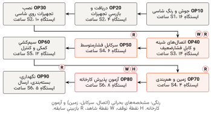
route of one skid: hours, first-pass yield, rework
op work station h FPY
OP10 weld, inspect, paint base frame S1 16.0 0.97
OP20 receive and inspect equipment S2 4.0 0.99
OP30 set and bolt equipment on frame S2 10.0 0.99
OP40 LV busbar and cable terminations S3 14.0 0.95
OP50 MV cable termination at RMU S4 6.0 0.98
OP60 auxiliary and control wiring S5 12.0 0.94
OP70 earthing and bonding S4 4.0 0.99
OP80 factory acceptance test S6 8.0 0.92
OP90 preserve, pack, dispatch S6 5.0 1.00
touch hours a skid: 79; expected rework: 1.41 h
rolled throughput yield: 0.758 - 24% of skids
need rework somewhere, though no step is worse than 92 %
the FAT yield (92 %) finds the faults of earlier steps:
it measures the line, it does not make qualityبازدهِ زنجیرهایِ مسیر، یعنی احتمالِ اینکه یک واحد از همهٔ گامها در نوبتِ اول بگذرد، حاصلضربِ بازدههای گامهاست:
\[ Y_\text{RT} = \prod_{i} y_i \tag{40.1}\]
مثال 40.1 (هیچ گامی بد نیست، یکچهارم بازکاری دارد) پرسش. کمترین بازدهِ نخستینگذرِ مسیر ۹۲ درصد است. چند درصد از اسکیدها جایی بازکاری لازم دارند؟
پاسخ. بازدهِ زنجیرهای 0.758 است. پس حدودِ ۲۴ درصد از اسکیدها، یعنی تقریباً ۲ یا ۳ اسکید از ده اسکید، جایی بازکاری میخواهند. انتظارِ بازکاری برای هر اسکید ۱٫۴۱ ساعت است.
تفسیر. بازدههای خوب در ضرب کوچک میشوند. بازدهِ آزمونِ پذیرشِ کارخانه (۹۲ درصد) کیفیت نمیسازد. خطاهای گامهای پیش را پیدا میکند و خط را میسنجد. بهبود از گامهایی میآید که خطا را میسازند: سیمکشیِ کنترل (۹۴ درصد) و اتصالهای فشارضعیف (۹۵ درصد). وارسی: \(0.97 \times 0.99 \times 0.99 \times 0.95 \times 0.98 \times 0.94 \times 0.99 \times 0.92 = 0.758\).
40.3.3 زمانِ تکت و توازنِ خط
زمانِ تکت از تقاضا میآید: ساعتهای در دسترس تقسیم بر شمارِ واحدهای لازم. زمانِ چرخه از خط میآید: بیشترین بارِ یک ایستگاه برای هر واحد، یعنی گلوگاه. خط فقط وقتی برنامه را برآورده میکند که زمانِ چرخهٔ هر ایستگاه زیرِ زمانِ تکت بماند:
\[ T_\text{takt} = \frac{H_\text{avail}}{D}, \qquad \eta_\text{bal} = \frac{\sum_j t_j}{m\, \max_j t_j} \tag{40.2}\]
در این رابطه \(H_\text{avail}\) ساعتهای در دسترس است و \(D\) شمارِ واحدها. \(t_j\) بارِ ایستگاهِ \(j\) است، \(m\) شمارِ ایستگاهها و \(\eta_\text{bal}\) کاراییِ توازن.
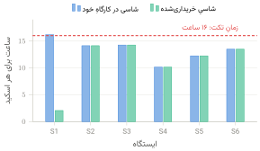
takt: 10 skids in 4 weeks of 40 h = 16.0 h a skid
station load (hours a skid, rework included)
frames made: S1 16.2, S2 14.1, S3 14.2, S4 10.1, S5 12.2, S6 13.5
bottleneck S1 16.18 h -> misses takt; balance 83%
frames bought: S1 2.1, S2 14.1, S3 14.2, S4 10.1, S5 12.2, S6 13.5
bottleneck S3 14.25 h -> meets takt; balance 78%
with frames made S1 is 0.18 h a skid over takt: no
margin at all, and the slow first skids (learning curve)
and any bad weld day push it further; buying frames moves
the bottleneck to S3 (OP40) at 14.25 h
takt comes from demand, cycle time from the line: the plan
works only if every station's cycle stays under taktمثال 40.2 (ایستگاهی که حاشیه ندارد) پرسش. ده اسکید باید در چهار هفته با یک نوبتِ ۴۰ ساعته ساخته شوند. خط برنامه را برآورده میکند؟
پاسخ. زمانِ تکت ۱۶ ساعت است. با شاسیِ ساخته در کارگاهِ خود، ایستگاهِ جوشِ شاسی (S1) با بازکاری ۱۶٫۱۸ ساعت است، پس از تکت بیشتر است. با شاسیِ خریداریشده، گلوگاه به ایستگاهِ اتصالهای فشارضعیف (S3) با ۱۴٫۲۵ ساعت میرود و زمانِ چرخه زیرِ تکت قرار میگیرد. اما زمانِ پرشدنِ خط هنوز در حساب نیامده است (بخش 40.3.8.4).
تفسیر. بیرونزدگیِ ۰٫۱۸ ساعت کوچک است، اما حاشیهٔ صفر یعنی هر روزِ بدِ جوش و هر اسکیدِ آغازینِ کندتر برنامه را عقب میاندازد. کاراییِ توازن با خریدنِ شاسی از ۸۳ به ۷۸ درصد پایین میآید، چون یک ایستگاه تقریباً خالی میماند. با این حال این بهتر از خطی است که برنامه را برآورده نمیکند. هزینهٔ خریدنِ شاسی در بخش 40.3.10 سنجیده میشود. وارسی: \(4 \times 40/10 = 16\)؛ \(16 + 0.03 \times 6 = 16.18\).
40.3.4 منحنیِ یادگیری
نخستین واحدها کندترند. افراد، قیدها و دستورالعملهای کار هنوز تازهاند. منحنیِ یادگیری میگوید با هر دو برابر شدنِ شمارِ ساختهشده، ساعتِ هر واحد در ضریبی کمتر از یک ضرب میشود. این کاهش تا زمانِ استانداردِ مسیر ادامه دارد:
def unit_hours(first: float, n: int, rate: float = 0.85,
floor: float = 0.0) -> float:
"""Hours of the n-th unit on a learning curve: each doubling of
output multiplies the hours by `rate`, down to the standard time."""
return max(first * n ** math.log2(rate), floor)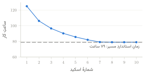
learning curve of the first skids (85 %, first skid 125 h,
down to the standard 79 h of the route)
skid hours
S-01 125.0
S-02 106.2
S-03 96.6
S-04 90.3
S-05 85.7
S-06 82.1
S-07 79.2
S-08 79.0
S-09 79.0
S-10 79.0
ten skids: 902 h against 790 h at the standard 79 h (112 h more)
the first skids are slow because people, jigs and work
instructions are new; the plan books the pilot skids
apart and does not set takt from the first unitایده. ده اسکیدِ نخست ۱۱۲ ساعت بیش از زمانِ استاندارد میخواهند. بیشترِ این اضافه در سه اسکیدِ اول است. پس برنامه اسکیدهای آزمایشی را جدا رزرو میکند و زمانِ تکت را از نخستین واحد تعیین نمیکند. همان اسکیدهای آغازین جاییاند که بیشترِ خطاها رخ میدهد. پس نقطههای شاهد هم آنجا متراکمترند (بخش 39.4.5.4). ضریبِ ۸۵ درصد آموزشی است (A-435). هر کارخانه ضریبِ خودش را با سوابقش اندازه میگیرد.
40.3.5 شایستگیِ افراد
SKILLS = { # operation: people qualified (A-435)
"OP10": ["W1", "W2", "W3"], "OP40": ["E1", "E2", "E4"],
"OP50": ["J1"], "OP60": ["E2", "E3", "E4"], "OP70": ["E1", "E3"],
"OP80": ["T1", "T2"],
}competency coverage (at least two qualified people an op)
OP10 3 W1, W2, W3
OP40 3 E1, E2, E4
OP50 1 J1 <- single point
OP60 3 E2, E3, E4
OP70 2 E1, E3
OP80 2 T1, T2
single points: OP50 - the MV termination
rests on one certified jointer; leave, illness or a
second shift stops the line at OP50
fix: a second jointer certified by the termination-kit
maker before serial production (a hold in the ITP)ایده. ماتریسِ شایستگی برای هر عملیات میگوید چه کسی صلاحیت دارد. قاعدهٔ ساده دستکم دو نفر برای هر عملیات است. سرکابلِ فشارمتوسط تنها نقطهٔ تک است: یک جوشکارِ کابلِ گواهیشده. مرخصی، بیماری یا نوبتِ دوم خط را در OP50 میایستاند. گواهیِ نفرِ دوم کارِ سازندهٔ کیتِ سرکابل است و پیش از تولیدِ انبوه یک نقطهٔ توقف در برنامهٔ بازرسی و آزمون میشود. شایستگی هم مانندِ کالیبراسیون تاریخ دارد. گواهیِ منقضی همان اثرِ ابزارِ منقضی را دارد (بخش 40.6.2).
40.3.6 کالیبراسیون و نسبتِ رواداری به عدمِ قطعیتِ آزمون
ابزارِ اندازهگیری خودش عدمِ قطعیت دارد. نسبتِ رواداری به عدمِ قطعیتِ آزمون نیمی از بازهٔ رواداری را با عدمِ قطعیتِ گستردهٔ اندازهگیری مقایسه میکند:
\[ \text{TUR} = \frac{T/2}{U_{95}} \tag{40.3}\]
calibration and the test uncertainty ratio (TUR)
joint torque spec 70 +/- 7 N m; wrench +/- 2.8 N m (95 %)
TUR = 7.0 / 2.8 = 2.5 (a common aim is 4 or more)
guard-banded acceptance: 65.8 to 74.2 N m
a better wrench (+/- 1 %) gives TUR 10 and the full band
calibration says the tool was right on the day of its
check; the daily check on an analyser says it still isایده. آچارِ گشتاوریِ با دقتِ ۴ درصد برای رواداریِ ۱۰ درصد فقط نسبتِ 2.5 میدهد. پس پذیرش در بازهٔ تنگترِ 65.8 تا 74.2 نیوتنمتر انجام میشود. این باندِ محافظ خطرِ پذیرفتنِ اتصالِ بیرون از رواداری را کم میکند. آچارِ دقیقتر همان بازهٔ کامل را برمیگرداند. دو چیز را نباید با هم یکی گرفت. گواهیِ کالیبراسیون میگوید ابزار در روزِ وارسی درست بود. وارسیِ روزانه روی دستگاهِ سنجشِ گشتاور میگوید هنوز درست است. بخشِ پ نشان میدهد وقتی وارسیِ روزانه جا بیفتد چه میشود (بخش 40.5.1). مدیریتِ اندازهگیری خود یک نظامِ مدیریت است (STD-171).
40.3.7 سطحهای ردیابی
traceability levels of one skid
serial 4 links transformer, inverter, RMU, panel
lot 3 links lugs, fasteners, busbar copper
batch 2 links paint, sealant
tool and person 3 links torque wrench, crimp die, jointer
record 3 links traveler, test dossier, concessions
15 links a skid, 150 for the plant; a link that is
missing makes a recall cover every skid instead of three
(lesson C shows the query)ایده. ردیابی هر اسکید را به جزءها، دستهها، ابزارها و افرادی که در ساختش بودند پیوند میدهد. سطحِ ردیابی با ارزش و خطرِ جزء تعیین میشود. ترانسفورماتور با شمارهٔ سریال ردیابی میشود، سرِ کابل با شمارهٔ دسته، رنگ با بچ، و آچار و جوشکار با شناسه. پانزده پیوند برای هر اسکید زیاد به نظر میرسد. اما بیآنها فراخوانِ یک دسته یا یک ابزار بهجای سه اسکید همهٔ ده اسکید را میگیرد. بخشِ پ این پرسوجو را نشان میدهد.
40.3.8 سامانهٔ تولید در عدد
پنج پرسشِ دیگر هر برنامهریزِ تولید را به عدد میبرند. ایستگاهِ آزمون چقدر از وقتش را واقعاً کار میکند؟ کارِ در جریان با زمانِ ماندن در کارخانه چه میکند؟ کارها چگونه میانِ ایستگاهها تقسیم میشوند؟ ده اسکید واقعاً کِی تمام میشوند؟ و چه مقدار قطعه باید در انبار باشد؟ عددها آموزشیاند (A-435).
برنامه:
python -m companion.ch40.examples_s40.3.8.1 اثربخشیِ کلیِ جایگاهِ آزمون
اثربخشیِ کلیِ تجهیزات سه زیان را در هم ضرب میکند. دسترسپذیری سهمی از زمانِ برنامهریزیشده است که ایستگاه کار میکند. کارایی سهمی از زمانِ کار است که با آهنگِ ایدهآل میگذرد. کیفیت سهمی از خروجی است که در نخستین گذر خوب است:
def oee(planned_h: float, down_h: float, ideal_h_per_unit: float,
units: int, good: int) -> dict[str, float]:
"""Availability x performance x quality of one workstation."""
run = planned_h - down_h
a = run / planned_h
p = ideal_h_per_unit * units / run
q = good / units
return dict(availability=a, performance=p, quality=q, oee=a * p * q)overall equipment effectiveness of the FAT bay, four weeks
planned 160 h; down 22 h (test set fault, waiting for skids)
13 skid tests at an ideal 8 h; 12 passed first time
availability 86% performance 75% quality 92%
OEE 60%
the three losses point to three owners: maintenance of the
test set, the flow of skids into the bay, and the line that
sends faults to be found here (the FAT yield of lesson A)ایده. اثربخشیِ ۶۰ درصدی یعنی جایگاهِ آزمون از هر ده ساعت، شش ساعت را به کارِ مفید میگذراند. سه زیان سه مالک دارند. دسترسپذیری مالِ نگهداریِ دستگاهِ آزمون است. کارایی مالِ جریانِ اسکیدها به جایگاه است، یعنی اسکیدهایی که دیر رسیدند. کیفیت مالِ خطِ پیش از جایگاه است، که خطاها را به اینجا میفرستد. بهبودِ عدد بدونِ دانستنِ اینکه کدام زیان بزرگتر است، به هر سه مالک میگوید «بهتر کار کنید» و هیچچیز را عوض نمیکند.
40.3.8.2 کارِ در جریان و زمانِ ماندن
work in progress and lead time (Little's law, L = lambda W)
throughput 2.5 skids a week
lean flow (WIP 6) lead time 96 h = 2.4 weeks
batches of 5 (WIP 15) lead time 240 h = 6.0 weeks
the same line, the same throughput: more skids waiting
between stations only stretches the time each one spends
in the factory - and the time before a defect made at OP40
is found at OP80ایده. قانونِ لیتل که در فصلِ ۳۸ برای صفِ بازبینی آمد (معادلهٔ 38.3)، در کارخانه هم برقرار است. با همان خروجی، دستههای پنجتایی زمانِ ماندنِ هر اسکید را از ۲٫۴ به ۶ هفته میرسانند. یک اثرِ دیگر هم دارد که کمتر دیده میشود. فاصلهٔ میانِ ساختنِ یک عیب در OP40 و یافتنش در OP80 هم همانقدر بلند میشود. در این فاصله، همان عیب در اسکیدهای بیشتری تکرار میشود. جریانِ کمموجودی هم ارزانتر است و هم بازخوردش سریعتر است.
40.3.8.3 تقسیمِ کارها میانِ ایستگاهها
TASKS = { # task: (hours, predecessors) - OP40 to OP70 split into tasks
"busbar supports": (3.0, []),
"LV busbars": (4.0, ["busbar supports"]),
"torque joints": (3.0, ["LV busbars"]),
"LV cables": (4.0, ["busbar supports"]),
"MV termination": (6.0, []),
"earth bonds": (4.0, []),
"aux wiring": (8.0, []),
"control cables": (4.0, ["aux wiring"]),
}tasks of OP40-OP70: 36 h a skid; minimum stations at a 16 h takt:
ceil(36/16) = 3
cycle 16 h: 3 stations, efficiency 75%
1 14.0 h aux wiring, MV termination
2 15.0 h earth bonds, control cables, busbar supports, LV busbars
3 7.0 h LV cables, torque joints
cycle 12 h: 4 stations, efficiency 75%
1 12.0 h aux wiring, earth bonds
2 10.0 h MV termination, control cables
3 11.0 h busbar supports, LV busbars, LV cables
4 3.0 h torque joints
precedence keeps the torque after the busbars are fitted;
a faster cycle needs more stations and loses efficiency -
the rule is a heuristic, a check by hand is still neededایده. کمترین شمارِ ایستگاه از تقسیمِ کلِ کار بر زمانِ چرخه به دست میآید: \(\lceil 36/16 \rceil = 3\). قاعدهٔ «بزرگترین نامزد» هر ایستگاه را با بلندترین کاری پر میکند که پیشنیازهایش انجام شده و هنوز جا میشود. پیشنیازها ترتیب را نگه میدارند: گشتاور همیشه پس از نصبِ شینه است. با چرخهٔ ۱۲ ساعته، چهار ایستگاه لازم است و ایستگاهِ آخر فقط سه ساعت کار دارد. کارایی ۷۵ درصد میماند. این قاعده تقریبی است. یک وارسیِ دستی شاید تقسیمِ بهتری پیدا کند. برای نمونه، کارهای کوتاه را جابهجا کند تا ایستگاهِ خالی پر شود.
40.3.8.4 زمانبندیِ ده اسکید
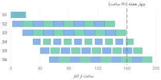
flow-shop schedule of the ten skids (frames bought)
stations: S1 2.1 h, S2 14.1 h, S3 14.2 h, S4 10.1 h, S5 12.2 h, S6 13.5 h
first skid through: 66.3 h; then one every 14.25 h
ten skids: 194.5 h = 4.9 weeks of 40 h
check: 66.3 + 9 x 14.25 = 194.5 h
takt is met in steady state, yet ten skids need more than
four weeks: the first skid takes 66 h to come through.
The window needs a start a week earlier or a second shift
in the first week - takt alone hides the time to fillمثال 40.3 (تکت برقرار، برنامه نه) پرسش. با شاسیِ خریداریشده، زمانِ چرخهٔ همهٔ ایستگاهها زیرِ تکت است (مثال 40.2). آیا ده اسکید در چهار هفته تمام میشوند؟
پاسخ. نه. اسکیدِ اول ۶۶٫۳ ساعت طول میکشد تا از همهٔ ایستگاهها بگذرد. پس از آن، هر ۱۴٫۲۵ ساعت یک اسکید بیرون میآید. ده اسکید ۱۹۴٫۵ ساعت میخواهند، یعنی ۴٫۹ هفته.
تفسیر. زمانِ تکت آهنگِ پایدار را میسنجد، نه زمانِ پرشدنِ خط را. برای خطِ کوتاه با ده واحد، زمانِ پرشدن سهمِ بزرگی است. دو راه هست. یکی آغازِ یک هفته زودتر است، که با رسیدنِ ترانسفورماتورها بسته است (بخش 39.2.4.2). دیگری نوبتِ دوم در هفتهٔ اول است. هر برنامهای که فقط با تکت ساخته شود، این هفته را گم میکند. وارسی: \(66.3 + 9 \times 14.25 = 194.5\).
40.3.8.5 جبرانِ ۳۴٫۵ ساعتِ کم
ten skids need 194.5 h; the window has 160 h (gap 34.5 h)
option hours cost k u gap note
start a week early 40 6.5 yes parts a week sooner
overtime 10 h/week, 4 weeks 40 7.2 yes fatigue, errors
second shift in week 1 40 3.6 yes second trained crew
overtime at the bottleneck 0 0.0 no fill time unchanged
the gap is the time to fill the line (66 h),
not its pace: speeding the bottleneck does nothing;
cheapest: second shift in week 1 - only if a second
qualified crew exists, and OP50 has one jointer (lesson
A); the early start then wins: no fatigue, no new crew,
if bought parts come a week sooner (a ch 39 question)ایده. کمبود از زمانِ پرشدنِ خط میآید، نه از آهنگِ آن. پس اضافهکار روی گلوگاه هیچ ساعتی برنمیگرداند. سه گزینه کمبود را میپوشانند. نوبتِ دوم در هفتهٔ اول ارزانترین است. اما گروهِ دومِ آموزشدیده میخواهد، و جدولِ شایستگی برای OP50 فقط یک مفصلبندِ تأییدشده دارد (بخش 40.3.5). اضافهکارِ چهارهفتهای خستگی میآورد و خستگی خطا میسازد؛ این هزینه در جدول نیست. میماند شروعِ یک هفته زودتر. این گزینه به شرطی شدنی است که قطعههای خریدنی یک هفته زودتر برسند، و این پرسشی برای تدارکات است (فصلِ ۳۹). مبنای D-044 همین را نوشته است.
40.3.8.6 نقطهٔ سفارش و موجودیِ اطمینان
crimp lugs: reorder point with safety stock
use 60 a day (sd 18); restock 10 days
safety stock = 1.645 x 18 x sqrt(10) = 94
reorder point = 60 x 10 + 94 = 694
the safety stock covers the variation of use in the lead
time, not a late supplier; a supplier change (lesson C)
also resets it - the new lot is held until releasedایده. نقطهٔ سفارش مقداری است که وقتی موجودی به آن برسد، سفارشِ تازه داده میشود. این مقدار مصرفِ میانگین در زمانِ تأمین است، بهاضافهٔ موجودیِ اطمینان. موجودیِ اطمینان نوسانِ مصرف در همان زمان را میپوشاند: \(z\,\sigma_d\,\sqrt{L}\). این موجودی برای نوسانِ مصرف است، نه برای تأمینکنندهٔ دیرکرده. دیرکرد باید جداگانه پیگیری شود (بخش 39.2.4.2). تغییرِ تأمینکننده هم موجودی را از نو تنظیم میکند، چون دستهٔ تازه تا آزادسازی نگه داشته میشود (بخش 40.5.10).
40.3.8.7 بازهٔ کالیبراسیون
calibration interval of a torque wrench (exponential drift,
mean time to out of tolerance 400 days)
target in-tolerance at the end interval, days
95% 21
90% 42
80% 89
the interval keeps most tools in tolerance on average; it
cannot catch a dropped tool - that is what the shift check
is for: a drop is a sudden failure, not a slow driftایده. اگر ابزارها با نرخِ ثابت از رواداری بیرون بروند، احتمالِ درونرواداریماندن پس از \(t\) روز \(e^{-t/M}\) است. پس برای هدفِ ۹۵ درصد، بازه \(-M \ln 0.95\) است: ۲۱ روز برای میانگینِ ۴۰۰ روزه. بازه رانشِ آهسته را مهار میکند. افتادنِ آچار رانشِ آهسته نیست، خرابیِ ناگهانی است. هیچ بازهٔ کالیبراسیونی آن را نمیگیرد. این کارِ وارسیِ نوبتی است (بخش 40.5.1). کالیبراسیون و وارسیِ نوبتی دو کارِ متفاوتاند و هیچکدام جای دیگری را نمیگیرد (STD-171).
40.3.8.8 زمانسنجی و زمانِ استاندارد
OBSERVED = { # element: observed minutes in 8 cycles (OP40, one joint)
"fit bolt, washer, nut": [2.1, 2.3, 1.9, 2.2, 2.0, 2.4, 2.1, 2.2],
"torque with logged wrench": [1.2, 1.1, 1.3, 1.2, 1.4, 1.2, 1.1, 1.3],
"paint mark": [0.4, 0.5, 0.4, 0.4, 0.5, 0.4, 0.4, 0.5],
}
RATING = 0.95 # the operator worked a little faster than normal
ALLOWANCE = 0.15 # personal, fatigue and delay allowancetime study of one LV busbar joint (OP40)
fit bolt, washer, nut mean 2.15 min
torque with logged wrench mean 1.23 min
paint mark mean 0.44 min
normal time: sum x rating 0.95 = 3.62 min
standard time: x (1 + 0.15) = 4.17 min
24 joints: 1.67 h of the 14 h OP40
the joints are a small part of OP40; most of its hours are
fitting busbars and landing cables - a time study measures
work as done, the route's hours were an estimateایده. زمانسنجی کار را به جزءها میشکند و هر جزء را چند بار اندازه میگیرد. میانگین در ضریبِ ارزیابی ضرب میشود تا اثرِ تندی یا کندیِ کارگرِ مشاهدهشده برداشته شود، و حاصل زمانِ عادی است. زمانِ استاندارد زمانِ عادی است بهاضافهٔ ضریبِ مجاز برای نیازهای شخصی، خستگی و تأخیر. یک اتصال ۴٫۱۷ دقیقه و ۲۴ اتصال ۱٫۶۷ ساعت میخواهند. بقیهٔ ۱۴ ساعتِ OP40 نصبِ شینه و کابل است. ساعتهای مسیر برآورد بودند و زمانسنجی آنها را با کارِ واقعی جایگزین میکند. این همان حرکت از فرض به شاهد است که کتاب دنبال میکند. علامتِ رنگ هم در زمانسنجی آمده است: کنترلِ تازه هزینهٔ زمانی دارد و در زمانِ استاندارد دیده میشود.
40.3.8.9 کارتِ کانبان و اندازهٔ سفارش
kanban cards for LV busbar kits (made in the own shop)
use 0.625 kits a day (one a takt of 16 h at 10 h days); refill 3 days
cards = ceil(d x L x (1 + safety) / kits a card) = 3
a card returned is the order to make a kit; no card, no
kit - the shop cannot build ahead of the line, and work in
progress stays where lesson A wants iteconomic order quantity of bought frames (teaching)
40 frames a year (all projects); ordering 0.6 k u an order
holding 20% a year of 11.0 k u
EOQ = sqrt(2 D S / H) = 4.7 frames
for Plant P the order is ten frames anyway; EOQ matters to
the integrator's whole year, and a first-article check
goes with every new order, whatever its sizeایده. کانبان تولید را به مصرف میبندد. هر کارتی که برمیگردد سفارشِ ساختنِ یک بستهٔ شینه است. شمارِ کارتها از مصرف، زمانِ تأمین و ضریبِ اطمینان میآید: \(\lceil d L (1+\alpha)/C \rceil\). کارگاه نمیتواند جلوتر از خط بسازد. پس کارِ در جریان همانجا میماند که درسِ پیش خواست (بخش 40.3.8.2). اندازهٔ اقتصادیِ سفارش هزینهٔ سفارشدادن را با هزینهٔ نگهداشتن موازنه میکند: \(\sqrt{2DS/H}\). برای شاسیها این حدودِ پنج واحد است. این عدد برای کلِ سالِ یکپارچهساز معنا دارد. سفارشِ نیروگاهِ P بههرحال ده شاسی است. هر سفارشِ تازه هم، هر اندازهای داشته باشد، بازرسیِ نخستیننمونه میگیرد (بخش 40.3.11).
40.3.8.10 چیدمانِ سوله و مسافتِ جابهجایی
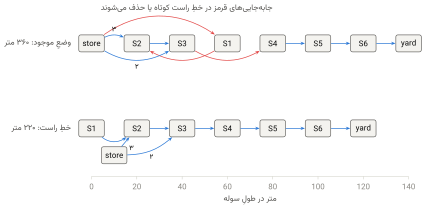
material-flow distance of a skid in two hall layouts
as built 360 m of moves a skid
straight line 220 m of moves a skid
the straight line saves 140 m a skid; every metre is a crane or
trolley move with a skid of 26 t in the air or on wheels -
fewer moves are also fewer lifts to plan (lesson on EHS)ایده. جمعِ «شمارِ جابهجایی ضرب در مسافت» دو چیدمان را مقایسه میکند. در وضعِ موجود، S1 میانِ S3 و S4 افتاده است، پس هر شاسی از انبار به وسطِ سوله و دوباره به عقب میرود. خطِ راست ۱۴۰ متر برای هر اسکید صرفهجویی میکند. هر متر جابهجاییِ جرثقیل یا چرخدستی با باری ۲۶ تُنی است. پس جابهجاییِ کمتر یعنی بالابریِ کمتر برای برنامهریزی و ریسکِ کمتر (بخش 40.8.2). چیدمانِ خوب هم کارایی میآورد و هم ایمنی.
40.3.8.11 گواهیهای کالیبراسیون: شاهد یا اعلامیه؟
calibration certificates reviewed on day 20
TW-11 torque wrench ok
TW-14 torque wrench ok
IR-03 insulation tester expired; no conformity rule
MO-01 micro-ohmmeter range does not cover the use
SI-02 relay test set no uncertainty
DFT-02 coating gauge no traceability
certificates with a finding: 4 of 6
a certificate is evidence only if it covers the range used,
states its uncertainty and traceability, and says how the
pass was decided; 'calibrated' alone is a declarationایده. گواهیِ کالیبراسیون فقط وقتی شاهد است که چهار چیز را بگوید. نخست، بازهای را که در کار به کار میرود بپوشاند. دوم، عدمِ قطعیتش را بدهد. سوم، به استانداردِ ملی ردیابیپذیر باشد. چهارم، بگوید «قبول» با چه قاعدهای تصمیم گرفته شده است. از شش گواهی، چهار گواهی یکی از اینها را کم دارند. میکرواهممتر برای بازهای کالیبره شده که اتصالها در آن نیستند. دستگاهِ تزریق عدمِ قطعیت ندارد. «کالیبره شد» بهتنهایی یک اعلامیه است (بخش 40.3.6). همین بازبینی در ممیزیِ پرونده هم انجام شد (مثال 40.14).
40.3.8.12 کدام بازده را اول بهتر کنیم؟
rolled throughput yield 0.758: two points more at one step
step RTY gain
OP80 factory acceptance test +0.0165
OP60 auxiliary and control wiring +0.0161
OP40 LV busbar and cable terminations +0.0160
OP10 weld, inspect, paint base frame +0.0156
OP50 MV cable termination at RMU +0.0155
every step gives about the same gain per point (yields
multiply), so the choice is made on cost and on what the
failures are: FAT finds faults made earlier, so the line
steps that make them (OP60, OP40) come firstایده. چون بازدهها در هم ضرب میشوند، دو درصد بهترشدنِ هر گام تقریباً همان اثر را بر بازدهِ زنجیرهای دارد. گامی که بازدهِ کمتری دارد کمی بیشتر اثر میگذارد. پس انتخاب با هزینهٔ بهبود و با ماهیتِ خرابیها انجام میشود، نه با عدد. آزمونِ کارخانه بیشترین سود را نشان میدهد. اما خطاهای آن در گامهای پیش ساخته شدهاند. بهبودِ واقعی در سیمکشیِ کنترل و اتصالهای فشارضعیف است، جایی که خطاها ساخته میشوند (بخش 40.5.3).
40.3.8.13 بستهٔ بازرسیِ نخستیننمونهٔ شاسیها
first-article package of the bought frames
[x] dimensional report against the drawing
[x] material certificates (steel grade)
[x] weld procedure and welder qualifications
[x] coating thickness report
[ ] process flow and control plan
[ ] capability of key dimensions
[ ] measurement-system study of the gauge
[x] lift-lug load test
3 of 8 missing - the first frame passes,
but the process behind it is not yet shown: release for
the order waits for the control plan and the capabilityایده. بستهٔ نخستیننمونه دو چیز را با هم نشان میدهد. یکی اینکه نخستین واحد با نقشه میخواند، یعنی گزارشِ ابعادی و گواهیِ مواد. دیگری اینکه فرایندِ پشتِ آن میتواند همین را تکرار کند، یعنی طرحِ کنترل، توانِ فرایند و سنجشِ اندازهگیری. شاسیِ اول قبول است، اما سه سندِ فرایند نیامدهاند. پس سفارشِ بقیه تا رسیدنِ آنها آزاد نمیشود. این همان پرسشِ مرحلهٔ «ساختِ قراردادی» در جدولِ مرحلههاست (جدول 40.1): آیا دیگری با شاهدِ ما میسازد؟
- درختِ محصول و فهرستِ مواد چه فرقی دارند؟
- چرا فهرستِ سطحِ دو مالِ سازندهٔ جزء است؟
- معادلهٔ 40.1 را توضیح دهید. چرا بازدههای خوب در ضرب کوچک میشوند؟
- زمانِ تکت و زمانِ چرخه از کجا میآیند؟
- چرا حاشیهٔ صفر در گلوگاه خطرناک است؟
- منحنیِ یادگیری با برنامهریزیِ اسکیدهای آغازین چه میکند؟
- تنها نقطهٔ تکِ ماتریسِ شایستگی کجاست و چگونه برطرف میشود؟
- معادلهٔ 40.3 را توضیح دهید. باندِ محافظ چیست؟
- فرقِ گواهیِ کالیبراسیون و وارسیِ روزانه چیست؟
- چرا سطحِ ردیابی برای هر جزء فرق دارد؟
- سه زیانِ اثربخشیِ کلیِ تجهیزات و مالکِ هر کدام را بنویسید.
- چرا کارِ در جریانِ بیشتر بازخوردِ کیفیت را کند میکند؟
- قاعدهٔ «بزرگترین نامزد» چگونه کار میکند؟
- چرا ده اسکید با تکتِ برقرار در چهار هفته تمام نمیشوند؟
- موجودیِ اطمینان چه نوسانی را میپوشاند و چه چیزی را نه؟
- چرا بازهٔ کالیبراسیون افتادنِ ابزار را نمیگیرد؟
- زمانِ عادی و زمانِ استاندارد را تعریف کنید.
- شمارِ کارتهای کانبان از چه چیزهایی به دست میآید؟
- چرا چیدمانِ خطِ راست ایمنی را هم بهتر میکند؟
- چهار شرطِ اینکه گواهیِ کالیبراسیون شاهد باشد کداماند؟
- چرا بهبودِ بازده در گامهایی که خطا میسازند اولویت دارد؟
- بستهٔ نخستیننمونه چه دو چیزی را نشان میدهد؟
- چرا اضافهکار روی گلوگاه کمبودِ برنامهٔ ده اسکید را جبران نمیکند؟
40.3.9 از نمونهٔ اولیه تا تولیدِ انبوه
یک محصول از چند مرحله میگذرد و هر مرحله پرسشِ دیگری را پاسخ میدهد. نمونهٔ اولیه نشان میدهد طراحی کار میکند. ساختِ آزمایشی نشان میدهد فرایند، ابزار و افراد میتوانند آن را بسازند. تولیدِ انبوه نشان میدهد همان کیفیت در آهنگِ برنامه تکرار میشود. میانِ این مرحلهها دروازههایی هست و هر دروازه شاهدِ خودش را دارد:
| مرحله | پرسش | شاهدِ دروازه |
|---|---|---|
| نمونهٔ اولیه | آیا طراحی کار میکند؟ | راستیآزماییِ طراحی، آزمونِ نوعی |
| ساختِ آزمایشی | آیا فرایند آن را میسازد؟ | بازرسیِ نخستیننمونه، بازده، توانِ فرایند |
| تولیدِ انبوه | آیا در آهنگِ برنامه تکرار میشود؟ | نمودارِ کنترل، بازدهِ پایدار، رشدِ قابلیتِ اطمینان |
| ساختِ قراردادی | آیا دیگری با شاهدِ ما میسازد؟ | ممیزیِ توانمندی، طرحِ کنترلِ مشترک |
| تولیدِ گواهیشده | آیا کارخانه گواهیِ معتبر دارد؟ | گواهیِ نظامِ کیفیت و آزمونِ نوعی، با دامنه و تاریخ |
| مونتاژ در ساختگاه | آیا ساختگاه همان کیفیت را میدهد؟ | شرایطِ محیطی، شایستگی، آزمونِ پذیرشِ ساختگاه |
| تعمیر در میدان | آیا تعمیر کیفیت را برمیگرداند؟ | دستورِ تعمیر، قطعهٔ ردیابیشده، آزمونِ پس از تعمیر |
ایده. تولیدِ گواهیشده یعنی کارخانه گواهیِ نظامِ کیفیت (STD-167) یا گواهیِ نوعیِ محصول دارد. گواهی دامنه و تاریخ دارد و باید دقیقاً همین محصول و همین کارخانه را بپوشاند (بخش 39.3.3.1). مونتاژ در ساختگاه همیشه ارزانتر به نظر میرسد. اما گرد، رطوبت، باد، نور و فشارِ برنامه کیفیت را پایین میآورند. سرکابلِ فشارمتوسطی که در کارگاه با شرایطِ کنترلشده بسته میشود، در ساختگاه به چادر، گرمایش و وارسیِ رطوبت نیاز دارد. تعمیر در میدان محدودیت دارد. آنچه با فرایندِ کارخانهای ساخته شده، مانندِ خشککردن و آغشتهسازیِ سیمپیچ، معمولاً در میدان تکرارشدنی نیست. پس تعمیرِ بزرگ یعنی بازگشت به کارخانه.
40.3.10 ساختن یا خریدن، و دانشِ فرایند
make or buy the base frames (k u a frame, hours at S1)
make: 9.5 k u, 16.18 h; welding procedures, own
buy: 11.0 k u, 2.06 h; maker's, by specification
buying costs 15 k u more for ten frames and frees
the bottleneck; the integrator keeps the frame drawing,
the weld inspection plan and a first-article inspection
so design ownership stays where it was (ch 39)مثال 40.4 (پانزده هزار واحد برای یک گلوگاه) پرسش. شاسیها را بسازیم یا بخریم؟ با خریدن، چه چیزی در دستِ یکپارچهساز میماند؟
پاسخ. خریدن برای ده شاسی ۱۵ هزار واحد بیشتر هزینه دارد. در عوض گلوگاهِ S1 را آزاد میکند و خط زیرِ زمانِ تکت میرود (مثال 40.2). سه چیز در دستِ یکپارچهساز میماند: نقشهٔ شاسی، برنامهٔ بازرسیِ جوش، و بازرسیِ نخستیننمونه روی شاسیِ اول.
تفسیر. ساختن یا خریدن فقط مقایسهٔ قیمت نیست. ظرفیت، برنامه، کیفیت و دانشِ فرایند هم در کارند. دانشِ جوشکاریِ شاسی دانشی عمومی است و میشود آن را خرید. دانشِ اتصالهای شینه و آزمونِ اسکید هستهٔ کارِ یکپارچهساز است و نگه داشته میشود. دانشی که اختصاصی است، مانندِ فرمولِ یک رنگ یا نسخهٔ یک فرایندِ گرمایی، در اختیارِ سازنده میماند. خریدار نتیجه را با آزمون و شاهد میسنجد، نه با گرفتنِ دستورِ ساخت. مالکیتِ طراحی جابهجا نمیشود (بخش 39.2.2). وارسی: \((11.0 - 9.5) \times 10 = 15\).
40.3.11 کنترلِ تغییر و بازرسیِ نخستیننمونه
هر تغییر در محصول یا فرایند، مانندِ نقشهٔ تازه، ابزارِ تازه، تأمینکنندهٔ تازه یا مادهٔ تازه، از مسیرِ کنترلِ تغییر میگذرد. مسیر سه بخش دارد. نخست، اثرِ تغییر سنجیده میشود: کدام مشخصهها، کدام آزمونها، کدام اسناد (بخش 38.5.4). دوم، بازرسیِ نخستیننمونه روی نخستین واحدِ پس از تغییر انجام میشود. سوم، تا آن بازرسی پذیرفته نشود، تغییر به تولیدِ انبوه نمیرود. تغییری که خریدار از آن خبر ندارد، حتی اگر بهبود باشد، شاهدهای قبلی را بیاعتبار میکند. بخشِ پ نمونهای از تأمینکنندهٔ سرِ کابل نشان میدهد که آبکاری را بیخبر عوض کرد (بخش 40.5.10).
بهبودِ پیوسته همان چرخهٔ برنامهریزی تا اقدام است (بخش 32.2) که این بار روی فرایند اجرا میشود. دادههای بازده، بازکاری و ضایعات سنجیده میشوند. بزرگترین علت انتخاب میشود و تغییری آزموده میشود. اگر تغییر نتیجه داد، از مسیرِ کنترلِ تغییر استاندارد میشود. ضایعات و بازکاری هزینهاند و نشانه هم هستند: میگویند فرایند کجا هنوز توانمند نیست.
- هر مرحلهٔ ساخت به چه پرسشی پاسخ میدهد؟
- چرا گواهیِ نوعی باید دقیقاً همین محصول را بپوشاند؟
- سه خطرِ مونتاژ در ساختگاه را نام ببرید.
- چرا تعمیرِ بزرگِ سیمپیچ معمولاً به کارخانه برمیگردد؟
- در تصمیمِ ساختن یا خریدن، دانشِ فرایند چه نقشی دارد؟
- بازرسیِ نخستیننمونه کِی لازم است؟
- چرا تغییری که خریدار از آن خبر ندارد، حتی اگر بهبود باشد، مشکل است؟
40.4 ب. برنامهریزیِ کیفیت
کیفیت در کارخانه ساخته میشود و آزمون فقط آن را میسنجد. برنامهریزیِ کیفیت پیش از ساختنِ نخستین اسکید چند چیز را روشن میکند: چه چیزی ممکن است خراب شود، کدام مشخصهها بحرانیاند، هر کدام با چه کنترلی نگه داشته میشود، کجا خریدار شاهد است، ابزارهای اندازهگیری چقدر قابلِ اعتمادند، و فرایند چقدر توانمند است. سندِ بالادستی طرحِ کیفیت است. طرحِ کیفیت نظامِ کیفیتِ کارخانه را (STD-167) روی همین پروژه مینشاند: نقشها، سندها، نقطههای توقف، سوابق و رابطِ آنها با خریدار.
برنامه:
python -m companion.ch40.examples_b40.4.1 تحلیلِ حالتها و اثرهای خرابی
تحلیلِ حالتها و اثرهای خرابی برای هر عملیات میپرسد چه چیزی ممکن است اشتباه شود، اثرش چیست، علتش کدام است، و کنترلِ فعلی چقدر آن را پیدا میکند. هر حالت سه رده میگیرد، از ۱ تا ۱۰: شدت (\(S\))، رخداد (\(O\)) و آشکارسازی (\(D\)). عددِ اولویتِ خطر حاصلضربِ این سه است. بحرانیت فقط شدت و رخداد را با هم میسنجد (STD-168):
\[ \text{RPN} = S \times O \times D, \qquad C = S \times O \tag{40.4}\]
FMEA = [ # process FMEA of the skid line (ratings 1-10, A-437)
dict(op="OP40", mode="LV joint under-torqued", effect="hot joint, trip,"
" fire risk", cause="torque tool drift", s=9, o=3, d=8),
dict(op="OP40", mode="lug crimped with wrong die", effect="hot lug",
cause="die not checked", s=8, o=3, d=6),
dict(op="OP50", mode="MV stress cone misplaced",
effect="MV fault", cause="jointer error", s=10, o=2, d=7),
dict(op="OP60", mode="control wire on wrong terminal",
effect="wrong signal", cause="drawing revision", s=5, o=5, d=3),
dict(op="OP70", mode="earth bond missing", effect="touch voltage",
cause="step skipped", s=9, o=2, d=5),
dict(op="OP10", mode="paint film too thin", effect="corrosion",
cause="gun setting", s=4, o=4, d=4),
dict(op="OP30", mode="transformer damaged in handling",
effect="oil leak", cause="lift plan", s=7, o=2, d=4),
dict(op="OP90", mode="desiccant missing in packing",
effect="condensation", cause="pack list", s=5, o=3, d=6),
]
process FMEA of the skid line: severity first vs RPN
rank severity-first S O D RPN RPN rank
1 LV joint under-torqued 9 3 8 216 1
2 MV stress cone misplaced 10 2 7 140 3
3 earth bond missing 9 2 5 90 4
4 lug crimped with wrong die 8 3 6 144 2
5 transformer damaged in handling 7 2 4 56 8
6 control wire on wrong terminal 5 5 3 75 6
7 paint film too thin 4 4 4 64 7
8 desiccant missing in packing 5 3 6 90 5
classes: S 9-10, then S 7-8, then the rest; within a class
by S x O (criticality), then by D. By RPN alone the
wrong-die crimp (S 8) ranks above the MV termination
(S 10): a product of three ratings hides the severity,
so RPN only orders rows inside a class (IEC 60812 offers
the criticality matrix beside RPN)مثال 40.5 (حاصلضربی که شدت را پنهان میکند) پرسش. حالتها را یک بار فقط با عددِ اولویتِ خطر و یک بار با «شدت اول» مرتب کنید. کجا فرق میکند؟
پاسخ. با عددِ اولویت، سرکابل با قالبِ نادرست (۱۴۴) بالای جابهجاییِ مخروطِ تنش در سرکابلِ فشارمتوسط (۱۴۰) مینشیند. اولی شدتِ ۸ دارد و دومی شدتِ ۱۰. با «شدت اول»، سه حالتِ شدتِ ۹ و ۱۰ بالا هستند: اتصالِ کمگشتاور، مخروطِ تنش و همبندیِ زمینِ جاافتاده.
تفسیر. حاصلضربِ سه رده شدت را پنهان میکند. خرابیِ کشنده با آشکارسازیِ خوب میتواند عددِ کوچکتری از ایرادی کمخطر بگیرد. پس ردهبندی ابتدا با ردهٔ شدت انجام میشود، سپس با بحرانیت، سپس با آشکارسازی. عددِ اولویت فقط ترتیبِ درونِ یک رده را تعیین میکند. استانداردِ تحلیلِ حالتهای خرابی هم ماتریسِ بحرانیت را کنارِ عددِ اولویت میآورد. یک نکتهٔ دیگر بعدها مهم میشود (بخش 40.6.3): اتصالِ کمگشتاور آشکارسازیِ ۸ داشت، اما هیچ اقدامی برایش لازم نشده بود. وارسی: \(9 \times 3 \times 8 = 216\)؛ \(8 \times 3 \times 6 = 144\)؛ \(10 \times 2 \times 7 = 140\).
40.4.2 تحلیلِ خرابیِ طراحی در کنارِ تحلیلِ فرایند
design FMEA of the skid: failure caused by the design
item mode S O D
skid frame fatigue crack at lift points 9 2 4
control: lift analysis, first-article check
cable entries water ingress 7 3 4
control: IP rating test of one skid
LV busbar section overheats at full load 8 2 3
control: heat-rise calculation, type test
enclosure vents condensation inside 6 4 5
control: humidity study, heaters specified
the design FMEA asks what the drawing allows to go wrong;
the process FMEA (lesson B) asks what the factory may do
wrong while following the drawing - both feed the ITPایده. تحلیلِ خرابیِ طراحی میپرسد نقشه اجازهٔ چه خرابیای را میدهد. تحلیلِ خرابیِ فرایند میپرسد کارخانه هنگامِ پیروی از نقشه چه اشتباهی ممکن است بکند. ترکِ خستگی در گوشوارههای بالابری ایرادِ طراحی است. هیچ دقتی در جوشکاری آن را برطرف نمیکند. کنترلش تحلیلِ بالابری و بازرسیِ نخستیننمونه است. اتصالِ کمگشتاور ایرادِ فرایند است و طراحیِ درست آن را جلوگیری نمیکند. هر دو تحلیل به برنامهٔ بازرسی و آزمون میروند. کنترلهای طراحی به راستیآزمایی و آزمونِ نوعی میروند، و کنترلهای فرایند به آزمونِ جاری و پذیرشِ کارخانه (بخش 40.5.15).
40.4.3 طرحِ کنترل
طرحِ کنترل به هر علتِ مهمِ تحلیلِ خرابی یک کنترل میدهد. هر ردیف چند چیز را میگوید: مشخصه، مشخصهٔ فنی، روش، اندازه و بسامدِ نمونه، و واکنش وقتی مشخصه از حد بیرون میرود.
CONTROL = [ # characteristic, spec, method, sample, reaction (A-437)
("MV termination position", "kit drawing", "jointer check + photo",
"every termination", "stop, re-terminate, report"),
("LV joint torque", "70 N m +/- 10 %", "logged wrench + paint mark",
"every joint", "re-torque, check tool"),
("torque wrench TW-xx", "70 +/- 1.4 N m", "analyser check",
"each shift", "quarantine tool, trace joints"),
("earth bond continuity", "<= 0.1 ohm", "low-ohm meter", "every bond",
"re-make, retest"),
("joint resistance", "<= 20 micro-ohm", "micro-ohmmeter, fixture",
"5 joints a skid, all if one > 17", "100 %, contain skid"),
]control plan for the top risks of the FMEA
MV termination position: kit drawing
how: jointer check + photo; every termination
if out: stop, re-terminate, report
LV joint torque: 70 N m +/- 10 %
how: logged wrench + paint mark; every joint
if out: re-torque, check tool
torque wrench TW-xx: 70 +/- 1.4 N m
how: analyser check; each shift
if out: quarantine tool, trace joints
earth bond continuity: <= 0.1 ohm
how: low-ohm meter; every bond
if out: re-make, retest
joint resistance: <= 20 micro-ohm
how: micro-ohmmeter, fixture; 5 joints a skid, all if one > 17
if out: 100 %, contain skid
each row answers one FMEA cause with a prevention or a
detection and says what happens when it trips; the
shift check of the wrench is the row lesson D shows missingایده. ستونِ واکنش مهمترین ستون است. کنترلی که بگوید «وارسی شود» اما نگوید اگر بیرون بود چه شود، کار نمیکند. ردیفِ آچار این را نشان میدهد. وارسی در هر نوبت انجام میشود. اگر بیرون بود، ابزار قرنطینه میشود و اتصالهایی که با آن ساخته شدهاند ردیابی میشوند. این همان ردیفی است که پیش از رویدادِ TW-14 کامل نبود: وارسیِ روزانه بود، اما قاعدهای برای روزِ جاافتاده یا واکنشِ روشن نداشت (بخش 40.5.1).
40.4.4 برنامهٔ بازرسی و آزمون
برنامهٔ بازرسی و آزمون فهرستِ همهٔ بازرسیها و آزمونهاست. برای هر کدام معیار و سابقه را میگوید و نقشِ خریدار را مشخص میکند. نقطهٔ توقف کار را تا آزادسازی به دستِ خریدار نگه میدارد. در نقطهٔ شاهد به خریدار خبر داده میشود. اگر نیاید، کار ادامه مییابد. در بازبینی فقط سوابق دیده میشوند.
inspection and test plan of the skid (H hold, W witness,
R review); the owner's points marked
W insulation resistance LV
W insulation resistance MV
R MV termination record
R torque record OP40
H functional test
W secondary injection of relays
R serials against genealogy
R preservation check
R earth bond continuity
R paint film thickness
W LV busbar visual
R nameplate photos
R packing list
hold 1, witness 4, review 8
a hold stops work until the owner releases it; a
witness is notified and may attend, work goes on if
they do not come; a review is of records onlyایده. آزمونِ کارکرد نقطهٔ توقف است، چون پس از آن اسکید بستهبندی و فرستاده میشود و دیگر نمیشود آن را بیهزینه باز کرد. آزمونهای عایقی و تزریقِ ثانویهٔ رلهها شاهدند. بقیه بازبینیاند. شمارِ نقطهها با ریسک تعیین میشود، نه با عادت. نقطهٔ توقفِ زیاد خط را منتظرِ بازرس میگذارد. نقطهٔ توقفِ کم یعنی خریدار فقط کاغذ میبیند. همین طرح در پروندهٔ آزمون وارسی میشود (بخش 40.6.2).
40.4.5 سنجشِ سامانهٔ اندازهگیری
پیش از اینکه به یک اندازهگیری تکیه شود، خودِ اندازهگیری سنجیده میشود. در مطالعهٔ تکرارپذیری و بازتولیدپذیریِ سنجه چند قطعه، هر کدام چند بار، به دستِ چند بازرس اندازه گرفته میشوند. تحلیلِ واریانس پراکندگی را به سه بخش میشکند: سهمِ ابزار (تکرارپذیری)، سهمِ بازرسها (بازتولیدپذیری) و سهمِ قطعهها. سهمِ سامانهٔ اندازهگیری از کلِ پراکندگی چنین است:
\[ \%\text{GRR} = 100\,\sqrt{\frac{\sigma^2_\text{rep} + \sigma^2_\text{repro}}{\sigma^2_\text{rep} + \sigma^2_\text{repro} + \sigma^2_\text{part}}} \tag{40.5}\]
def grr_anova(data) -> dict[str, float]:
"""Gauge R&R from data[part][operator][repeat] by two-way ANOVA with
interaction; returns variance components, %GRR and distinct categories."""
x = np.asarray(data, dtype=float)
a, b, n = x.shape
g = x.mean()
pm, om, cm = x.mean(axis=(1, 2)), x.mean(axis=(0, 2)), x.mean(axis=2)
ss_p = b * n * np.sum((pm - g) ** 2)
ss_o = a * n * np.sum((om - g) ** 2)
ss_c = n * np.sum((cm - g) ** 2)
ss_e = np.sum((x - cm[:, :, None]) ** 2)
ms_p, ms_o = ss_p / (a - 1), ss_o / (b - 1)
ms_i = (ss_c - ss_p - ss_o) / ((a - 1) * (b - 1))
ms_e = ss_e / (a * b * (n - 1))
rep = ms_e
inter = max(0.0, (ms_i - ms_e) / n)
oper = max(0.0, (ms_o - ms_i) / (a * n))
part = max(0.0, (ms_p - ms_i) / (b * n))
grr = rep + oper + inter
return dict(repeatability=rep, reproducibility=oper + inter, part=part,
grr_pct=100 * math.sqrt(grr / (grr + part)),
ndc=math.floor(1.41 * math.sqrt(part / grr)))gauge R&R of the micro-ohmmeter (10 joints x 3 inspectors x 2)
study repeat. reprod. part %GRR ndc
hand-held probes 0.072 0.012 2.88 16.8 8
probe fixture 0.012 0.026 2.82 11.5 12
(variances in micro-ohm squared; ndc = distinct categories)
a common industry guide: %GRR under 10 good, 10-30
acceptable with reason, over 30 not; the fixture cut
repeatability, but the inspectors' bias stays - that
needs one probe position and training, not hardwareمثال 40.6 (قید ابزار را درست کرد، بازرسها را نه) پرسش. میکرواهممتر با پرابهای دستی سهمِ 16.8 % دارد. با قیدِ پراب 11.5 % میشود. چه چیزی بهتر شد و چه چیزی نه؟
پاسخ. تکرارپذیری از 0.072 به 0.012 میکرواهمِ مربع افت کرد. بازتولیدپذیری از 0.012 به 0.026 رسید، یعنی اختلافِ بازرسها ماند.
تفسیر. راهنمای رایج در صنعت سهمِ زیرِ ۱۰ درصد را خوب، ۱۰ تا ۳۰ درصد را پذیرفتنی با دلیل، و بالای ۳۰ درصد را نپذیرفتنی میداند. قید جای پراب را ثابت کرد و پراکندگیِ خودِ ابزار را برید. اما سوگیریِ بازرسها با سختافزار برطرف نمیشود. دستورالعملِ کارِ یکسان، یک جای مشخص برای پراب و آموزش لازم است. «شمارِ دستههای متمایز» از ۸ به ۱۲ رسید. یعنی اندازهگیری اکنون میتواند دوازده سطحِ متفاوت از کیفیتِ اتصال را از هم تشخیص دهد. وارسی: \(\sqrt{(0.0116 + 0.0260)/(0.0376 + 2.82)} = 0.115\).
40.4.6 توافقِ بازرسان و بودجهٔ عدمِ قطعیت
همهٔ بازرسیها عدد نمیدهند. بازرسیِ چشمیِ سرِ کابل «قبول» یا «رد» میدهد. کاپای کوهن توافقِ دو داوری را پس از کمکردنِ توافقِ تصادفی میسنجد:
\[ \kappa = \frac{p_o - p_e}{1 - p_e} \tag{40.6}\]
در این رابطه \(p_o\) سهمِ توافقِ مشاهدهشده است و \(p_e\) سهمِ توافقی که از تصادف انتظار میرود.
def kappa(a, b) -> float:
"""Cohen's kappa of two raters' pass/fail calls."""
n = len(a)
po = sum(x == y for x, y in zip(a, b)) / n
pa, pb = sum(a) / n, sum(b) / n
pe = pa * pb + (1 - pa) * (1 - pb)
return (po - pe) / (1 - pe)visual inspection of crimps: do the inspectors agree?
40 crimps, 12 bad by the cross-section reference
inspector A vs reference: kappa 0.94
inspector B vs reference: kappa 0.74 (passes 4 bad ones)
A vs B: kappa 0.68
a common guide reads kappa above 0.75 as good agreement;
B's misses are all borderline crimps - the boundary
samples and the reference photos go to the workstationایده. بازرسِ B چهار سرِ کابلِ مرزی را که مقطعزنیِ مرجع رد کرده بود قبول کرده است. کاپای او 0.74 است، درست زیرِ راهنمای رایجِ 0.75. علت سهلانگاری نیست. مرزِ قبول و رد برای او روشن نبوده است. نمونههای مرزی و عکسهای مرجع روی ایستگاه گذاشته میشوند. سپس مطالعه تکرار میشود. همین منطقِ سنجشِ سامانهٔ اندازهگیری است، این بار برای داوری (بخش 40.4.5).
uncertainty budget of a joint-resistance reading (micro-ohm)
contribution u basis
meter calibration 0.10 certificate, k = 2 halved
resolution 0.03 0.1 / sqrt(12)
probe placement 0.11 GRR with fixture, repeatability
inspectors 0.16 GRR with fixture, reproducibility
temperature of joint 0.08 +/- 5 C, copper coefficient
combined 0.23; expanded (k = 2) 0.47
largest: inspectors - the next improvement is training,
not a better meter; the mean joint (12.4) sits
16 times U below the limit of 20, so readings
near the limit, not typical ones, need the guard bandایده. بودجهٔ عدمِ قطعیت هر منبعِ عدمِ قطعیت را جدا مینویسد و با ریشهٔ مجموعِ مربعها ترکیب میکند. عدمِ قطعیتِ گسترده با ضریبِ پوششِ ۲ به دست میآید. بزرگترین سهم مالِ بازرسان است، نه دستگاه. پس بهبودِ بعدی آموزش است، نه خریدِ دستگاهِ دقیقتر. بودجه همین را نشان میدهد: کجا پول خرج کردن عدد را بهتر میکند. مقدارهای این بودجه از مطالعهٔ بالا آمدهاند (مثال 40.6) و با هم سازگارند.
40.4.7 توانِ فرایند
توانِ فرایند پراکندگیِ طبیعیِ یک مشخصه را با بازهٔ مشخصهٔ فنی مقایسه میکند. \(C_\text{p}\) فقط پهنا را میسنجد. \(C_\text{pk}\) مرکز را هم در نظر میگیرد. برای مشخصهای که فقط حدِ بالا دارد، مانندِ مقاومتِ اتصال، فقط \(C_\text{pk}\) معنا دارد:
\[ C_\text{p} = \frac{\text{USL} - \text{LSL}}{6\,s}, \qquad C_\text{pk} = \frac{\min(\text{USL} - \bar x,\; \bar x - \text{LSL})}{3\,s} \tag{40.7}\]
def cp_cpk(values, lsl, usl) -> tuple[float, float, float, float]:
"""Mean, standard deviation, Cp and Cpk of a measured characteristic;
a limit may be None (one-sided: Cp is then nan)."""
m, s = mean(values), stdev(values)
sides = [x for x in ((usl - m) if usl is not None else None,
(m - lsl) if lsl is not None else None)
if x is not None]
cp = (usl - lsl) / (6 * s) if None not in (lsl, usl) else math.nan
return m, s, cp, min(sides) / (3 * s)
def phi(z: float) -> float:
"""Standard normal cumulative distribution."""
return 0.5 * (1 + math.erf(z / math.sqrt(2)))
def ppm_out(m: float, s: float, lsl, usl) -> float:
"""Parts per million outside the limits (None = no limit), for a
normal process."""
low = phi((lsl - m) / s) if lsl is not None else 0.0
high = 1 - phi((usl - m) / s) if usl is not None else 0.0
return 1e6 * (low + high)capability of joint resistance (upper limit 20 micro-ohm)
good tools (35 joints) mean 12.44 sd 1.31 Cpk 1.93 0 ppm over
drifted TW-14 (15 joints) mean 15.85 sd 2.00 Cpk 0.69 19,102 ppm over
only one-sided: lower resistance is always better
a Cpk of 1.9 leaves almost nothing over the limit; the
drifted tool puts about one joint in fifty over it -
and many more just under it, where heat builds slowlyایده. با ابزارهای سالم، \(C_\text{pk}\) برابر با 1.93 است و تقریباً هیچ اتصالی از حدِ ۲۰ میکرواهم نمیگذرد. با آچارِ راندهشده، \(C_\text{pk}\) به 0.69 میرسد و حدودِ یک اتصال از پنجاه اتصال از حد بیرون میزند. اتصالهای بسیار بیشتری هم درست زیرِ حد میمانند، جایی که گرما آهسته جمع میشود. عددِ «اجزا در میلیون» فرض میکند فرایند نرمال است. با پانزده اتصال، این فرض فقط تقریبی است. توانِ فرایند فقط برای فرایندی معنا دارد که پایدار است، و پایداری را نمودارِ کنترل نشان میدهد (STD-172).
40.4.7.1 توانِ فرایند با حدِ اطمینان
how sure is Cpk 1.93 from 35 joints? (normal approximation)
95 % lower bound: 1.53
with 35 joints the lower bound is still above 1.33; with
ten joints it would be 1.16 - a capability claim
needs its sample sizeایده. \(C_\text{pk}\) از نمونه برآورد میشود و خودش عدمِ قطعیت دارد. با ۳۵ اتصال، کرانِ پایینِ ۹۵ درصدی 1.53 است و هنوز بالای 1.33، که حدِ رایجِ «توانمند» است. با ده اتصال، همان برآورد کرانی زیرِ 1.33 میداد. ادعای توانِ فرایند باید اندازهٔ نمونهاش را بگوید. تأمینکنندهای که \(C_\text{pk}\) را از پنج قطعه گزارش کند، عددی گزارش کرده که تقریباً هیچ چیزی را ثابت نمیکند.
40.4.7.2 توانِ نیروی کششِ سرِ کابل و آزمایشِ عاملی
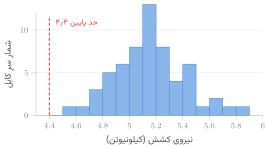
crimp pull force of 60 lugs (lower limit 4.4 kN)
mean 5.15 kN, sd 0.27 kN; Cpk 0.94; 2,385 ppm under
Cpk 0.94 is below 1.33: about 2.4 crimps in 1,000
under the minimum - the mean must rise (the factorial below
shows how); one-sided, since a stronger crimp is no defect;
the pull test is destructive, so it runs on samples at each
die change and shift, and the die check guards the restایده. \(C_\text{pk}\) برابر با 0.94 یعنی فرایندِ پرس توانمند نیست: حدودِ ۲٫۴ سرِ کابل در هزار زیرِ حدِ سازندهٔ سرِ کابل میافتند. میانگین باید بالا برود. اما کدام عامل آن را بالا میبرد؟ آزمایشِ عاملیِ دوسطحی دو عامل را با هم تغییر میدهد: نیروی بستنِ قالب (A) و عمقِ ورودِ سیم (B). هر کدام کم یا زیاد است. هر ترکیب دو بار تکرار میشود:
RUNS = { # (factor A, factor B): pull force kN, two repeats - A-436
(-1, -1): [4.71, 4.79], (+1, -1): [5.12, 5.20],
(-1, +1): [4.98, 5.04], (+1, +1): [5.86, 5.78],
}
# A: die closing force low/high; B: wire insertion depth short/full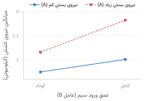
2 x 2 factorial on crimp pull force (two repeats a run)
factor A: die closing force; factor B: insertion depth
effect of A +0.61 kN; of B +0.46 kN; interaction AB +0.20 kN
repeat sd 0.053 kN; standard error of an effect 0.038 kN
all three effects are many standard errors from zero: the
interaction says depth matters most when the force is high -
one factor at a time would have missed it; the result sets
the control-plan check, not a machine recipeمثال 40.7 (یکعاملدرهربار برهمکنش را نمیبیند) پرسش. اثرِ هر عامل و برهمکنشِ آن دو چقدر است؟ چرا آزمایشِ عاملی از تغییرِ یک عامل در هر بار بهتر است؟
پاسخ. اثرِ A برابر با +0.61، اثرِ B برابر با +0.46 و برهمکنشِ AB برابر با +0.20 کیلونیوتن است. خطای استانداردِ هر اثر 0.038 است، پس هر سه اثر بسیار بزرگتر از نوفهاند.
تفسیر. برهمکنشِ مثبت یعنی عمقِ ورود وقتی نیروی بستن زیاد است بیشتر اثر دارد. اگر عمق فقط با نیروی کم آزموده میشد، اثرش کمتر از واقع دیده میشد. چهار ترکیب با دو تکرار همهٔ این را با هشت آزمون نشان میدهند. نتیجه یک وارسیِ طرحِ کنترل میسازد: عمقِ ورود در هر سرِ کابل، نیروی پرس در هر تغییرِ قالب. دستورِ کارِ ماشین نمیسازد. تنظیمهای پرس از سازندهٔ سرِ کابل و قالب میآیند. وارسی: \(A = \tfrac{1}{2}[(5.16 + 5.82) - (4.75 + 5.01)] = 0.61\).
40.4.7.3 پراکندگی از کجا میآید؟
پیش از بهبود باید دانست پراکندگی کجاست. آیا اسکیدها با هم فرق دارند، یا اتصالهای یک اسکید؟ نمودارِ چندمتغیره هر اتصال را نقطهای میکشد و میانگینِ هر اسکید را با خط به هم وصل میکند. تحلیلِ مؤلفههای واریانس همین را با عدد میگوید. اگر \(g\) اسکید و در هر کدام \(n\) اتصال باشد، میانگینِ مربعاتِ میانِ گروهها \(\text{MS}_\text{b}\) و درونِ گروهها \(\text{MS}_\text{w}\) است، و:
\[ \sigma_\text{b}^2 = \frac{\text{MS}_\text{b} - \text{MS}_\text{w}}{n}, \qquad \sigma_\text{w}^2 = \text{MS}_\text{w} \tag{40.8}\]
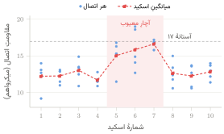
joint resistance: between skids or within a skid?
(one-way random-effects analysis, 5 joints a skid)
data var between var within share between
7 skids, good tools 0.00 1.86 0%
all 10 skids 2.48 2.55 49%
joint means (good skids): 12.0, 13.2, 12.5, 12.1, 12.4
with good tools almost all the scatter is joint to joint,
so the fix lies in making each joint (surface, torque
sequence), not in anything a whole skid shares; with the
three tool-fault skids the between-skid part rises to 49%:
the same analysis points at the toolایده. با ابزارِ سالم، واریانسِ میانِ اسکیدها تقریباً صفر است و همهٔ پراکندگی از اتصالی به اتصالِ دیگر است. پس بهبود باید در ساختنِ هر اتصال باشد: آمادهسازیِ سطح و ترتیبِ بستن. چیزی که یک اسکید بهتمامی دارد، مانندِ دستهٔ شینهها یا اپراتور، علت نیست. با سه اسکیدِ آچارِ معیوب، سهمِ میانِ اسکیدها به نزدیکِ نیمه میرسد و همان تحلیل به ابزار اشاره میکند (بخش 40.5.1). اگر برآوردِ \(\sigma_\text{b}^2\) منفی شود، صفر گذاشته میشود: یعنی دادهها تفاوتی میانِ گروهها نشان نمیدهند.
40.4.8 نمودارِ کنترل
نمودارِ میانگین و دامنه برای هر زیرگروه، اینجا پنج اتصالِ هر اسکید، میانگین و دامنه را رسم میکند. حدهای کنترل از دادههای دورهٔ پایدار میآیند:
\[ \text{UCL}_{\bar x} = \bar{\bar x} + A_2 \bar R, \quad A_2 = \frac{3}{d_2\sqrt{n}}, \qquad \text{UCL}_{R} = D_4 \bar R, \quad D_4 = 1 + \frac{3\,d_3}{d_2} \tag{40.9}\]
ثابتهای \(d_2\) و \(d_3\) میانگین و انحرافِ معیارِ دامنهٔ \(n\) عددِ نرمالِ استانداردند. اینجا با انتگرالگیریِ عددی حساب شدهاند، نه از جدول. برای \(n = 5\) مقدارِ آنها 2.326 و 0.864 است.
def xbar_r_limits(subgroups) -> dict[str, float]:
"""Centre lines and 3-sigma limits of X-bar and R charts."""
n = len(subgroups[0])
d2, d3 = d2_d3(n)
xbars = [mean(g) for g in subgroups]
ranges = [max(g) - min(g) for g in subgroups]
xbb, rbar = mean(xbars), mean(ranges)
a2 = 3 / (d2 * math.sqrt(n))
return dict(x_centre=xbb, x_ucl=xbb + a2 * rbar, x_lcl=xbb - a2 * rbar,
r_centre=rbar, r_ucl=rbar * (1 + 3 * d3 / d2),
r_lcl=rbar * max(0.0, 1 - 3 * d3 / d2),
sigma=rbar / d2)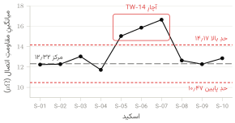
X-bar and R charts of joint resistance, limits from S-01..S-04
X-bar: centre 12.32, UCL 14.17, LCL 10.47
R: centre 3.20, UCL 6.77
skid mean range signal
S-01 12.24 4.80 -
S-02 12.28 2.10 -
S-03 13.04 4.00 -
S-04 11.72 1.90 -
S-05 15.04 5.30 mean
S-06 15.86 6.30 mean
S-07 16.64 1.40 mean
S-08 12.64 4.40 -
S-09 12.28 3.10 -
S-10 12.86 2.60 -
out of control: S-05, S-06, S-07
with four skids the limits are rough; they are refined as
data grows. The chart would have flagged the drift on the
first skid built with it - had joint resistance been
measured at all (lesson D)مثال 40.8 (نمودار پس از اسکیدِ اول میگفت) پرسش. اگر مقاومتِ پنج اتصالِ هر اسکید در آزمونِ کارخانه اندازه گرفته میشد، نمودار کِی هشدار میداد؟
پاسخ. در نخستین اسکیدی که با آچارِ راندهشده ساخته شد، یعنی S-05 با میانگینِ 15.04. حدِ بالا 14.17 است. S-06 و S-07 هم بالای حدند. دامنهها زیرِ حدِ خودشان میمانند.
تفسیر. آچار مقدارِ نشانداده را درست نشان میداد، اما گشتاورِ واقعی کم بود. پس نمودارِ گشتاورِ ثبتشده هیچچیز نمیدید: ابزاری که خودش رانده شده، رانشِ خودش را نمیبیند. اندازهگیریِ مستقلِ نتیجه، یعنی مقاومتِ اتصال، رانش را در اسکیدِ اول نشان میداد. حدهایی که از چهار اسکید ساخته شوند تقریبیاند. با رسیدنِ دادههای بیشتر بازنگری میشوند. وارسی: \(12.32 + 0.577 \times 3.20 = 14.17\).
40.4.8.1 نمودارِ نسبت برای مردودیها
وقتی هر آزمون «قبول» یا «رد» است، نمودارِ نسبت سهمِ ردها را در هر دوره رسم میکند. حدهای آن با شمارِ آزمونهای هر دوره تغییر میکنند:
\[ \text{UCL}_i = \bar p + 3\sqrt{\frac{\bar p(1-\bar p)}{n_i}} \tag{40.10}\]
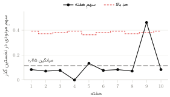
p-chart of FAT first-pass failures (skid line and panels)
130 tests in 10 weeks; mean failure share 0.115
weeks above the upper limit: 9
the limits move with each week's number of tests; week 9
(6 of 13) is a signal - a new panel supplier started that
week; without it the share is 7.7%, the 92 % FAT
yield of lesson A; limits are recomputed once the cause is
removed, not beforeایده. هفتهٔ ۹ با شش رد از سیزده آزمون یک نشانه است: تأمینکنندهٔ تازهٔ تابلوها از همان هفته شروع کرد. بیآن هفته، سهمِ رد 7.7 % است، که همان بازدهِ ۹۲ درصدیِ آزمونِ کارخانه در درسِ الف است. حدها پس از برداشتنِ علتِ نشانه دوباره حساب میشوند، نه پیش از آن. اگر آن هفته در میانگین بماند، حدها شلتر میشوند و نشانهٔ بعدی را پنهان میکنند.
40.4.9 نمونهگیریِ پذیرش
یک طرحِ نمونهگیریِ ساده از هر محموله \(n\) قطعه برمیدارد و اگر شمارِ معیوبها از \(c\) بیشتر نباشد، محموله را میپذیرد. منحنیِ مشخصهٔ عملیاتی احتمالِ پذیرش را برای هر سهمِ معیوب نشان میدهد:
\[ P_\text{a}(p) = \sum_{k=0}^{c} \binom{n}{k} p^{k} (1-p)^{n-k} \tag{40.11}\]
def p_accept(n: int, c: int, p: float) -> float:
"""Chance a lot with defective share p passes a plan: sample n,
accept if at most c defectives (binomial)."""
return sum(math.comb(n, k) * p ** k * (1 - p) ** (n - k)
for k in range(c + 1))
def find_plan(aql: float, ltpd: float, alpha: float = 0.05,
beta: float = 0.10, n_max: int = 1000) -> tuple[int, int]:
"""Smallest single plan (n, c) that accepts good lots (p = aql) with
chance >= 1 - alpha and bad lots (p = ltpd) with chance <= beta."""
for n in range(1, n_max + 1):
for c in range(0, n + 1):
if p_accept(n, c, ltpd) > beta:
break
if p_accept(n, c, aql) >= 1 - alpha:
return n, c
raise ValueError("no plan within n_max")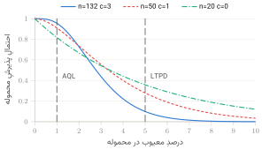
incoming sampling of crimp lugs (lot 2,000; AQL 1 %, LTPD 5 %;
producer's risk 5 %, consumer's risk 10 %)
smallest plan that meets both: n = 132, accept if <= 3
plan P(accept) at 1 % at 5 %
n=132 c=3 0.956 0.099
n= 50 c=1 0.911 0.279
n= 20 c=0 0.818 0.358
the small plans look strict but let most bad lots through;
sampling protects against bad lots, not bad pieces - a
critical crimp is controlled at the press (die check), not
only by sampling what arrivesمثال 40.9 (طرحی که سختگیر به نظر میرسد) پرسش. طرحِ «۲۰ نمونه، هیچ معیوب» سختگیر به نظر میرسد. چرا کافی نیست؟
پاسخ. چنین طرحی محمولهای با ۵ درصد معیوب را در 35.8 % حالتها میپذیرد. محمولهای با ۱ درصد معیوب را هم در 18 % حالتها رد میکند. کوچکترین طرحی که هر دو خطر را نگه میدارد n = 132 و c = 3 است: پذیرشِ 95.6 % در ۱ درصد و 9.9 % در ۵ درصد.
تفسیر. نمونهگیری از خریدار در برابرِ محمولهٔ بد محافظت میکند، نه در برابرِ قطعهٔ بد. سرِ کابلی که بحرانی است، با کنترل در خودِ پرس مهار میشود: وارسیِ قالب و آزمونِ کشش. نمونهگیری از آنچه رسیده جای آن را نمیگیرد. عددها با محاسبهٔ دوجملهای به دست آمدهاند. نظامِ نمونهگیریِ استانداردِ خودش جدول و قاعدههای تغییرِ سختگیری دارد (STD-076) که اینجا نقل نشدهاند. وارسی: \(0.95^{20} = 0.358\).
40.4.9.1 نمونهگیریِ متغیری در برابرِ وصفی
frame width: variables plan against the attribute plan
(AQL 1 %, LTPD 5 %, producer's risk 5 %, consumer's 10 %)
attribute plan: n = 132, accept if <= 3 out of limits
variables plan: n = 54, accept if (limit - mean)/s >= 1.94
measuring the width, not only judging in/out, carries more
information per frame: the same protection with 41%
of the samples - if the width is normal and well measuredایده. طرحِ وصفی هر قطعه را فقط «داخل» یا «خارج» میداند. طرحِ متغیری اندازه را میخوانَد و فاصلهٔ میانگین تا حد را با انحرافِ معیار میسنجد. پس از هر قطعه اطلاعاتِ بیشتری میگیرد. برای همان دو خطر، طرحِ متغیری ۵۴ نمونه میخواهد و طرحِ وصفی ۱۳۲ نمونه. اما دو شرط دارد: اندازه باید تقریباً نرمال باشد و اندازهگیری خوب باشد (بخش 40.4.5). برای مشخصهای که اندازهپذیر نیست، مانندِ ظاهرِ جوش، فقط طرحِ وصفی میماند.
40.4.9.2 وارسیِ همه یا هیچکدام
برای فرایندی پایدار و وارسیای بیخطا، اقتصاد ساده است. وارسیِ یک واحد \(k_1\) هزینه دارد و فرارِ یک عیب \(k_2\). اگر سهمِ معیوبها \(p\) باشد، وارسینکردن برای هر واحد بهطورِ میانگین \(p\,k_2\) هزینه دارد. پس قاعدهٔ همه یا هیچ این است: اگر
\[ p > p^{*} = \frac{k_1}{k_2} \tag{40.12}\]
همهٔ واحدها وارسی میشوند، وگرنه هیچکدام.
CHECKS = [ # check, k1 cost to inspect one skid (k u), k2 cost of one
# escape (k u), p share of skids with the defect - A-440
("relay secondary injection", 0.40, 45.0, 0.030),
("MV cable insulation test", 0.15, 60.0, 0.002),
("nameplate and label check", 0.02, 0.3, 0.050),
("busbar torque-mark check", 0.05, 20.0, 0.004),
]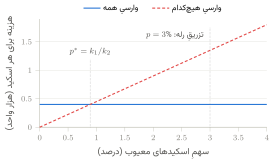
inspect every skid or none? (stable process, perfect check)
check k1 k2 p k1/k2 rule
relay secondary injection 0.40 45.0 0.030 0.0089 all
MV cable insulation test 0.15 60.0 0.002 0.0025 none
nameplate and label check 0.02 0.3 0.050 0.0667 none
busbar torque-mark check 0.05 20.0 0.004 0.0025 all
inspect all when p > k1/k2: the cost of checking a skid is
less than the expected cost of letting its defect through;
the cable test fails the rule on cost (p 0.2 % < 0.25 %)
yet stays a hold point: a safety or a contract duty is
not an economic choice; 'none' never means 'do not watch
the process' - a small sample keeps p knownمثال 40.10 (اقتصاد میگوید «هیچ»، قرارداد میگوید «همه») پرسش. کدام وارسیها بنا بر معادلهٔ 40.12 باید روی هر اسکید انجام شوند؟ آیا نتیجه را همانطور میپذیرید؟
پاسخ. تزریقِ ثانویهٔ رله (\(p = 3\%\) در برابرِ \(p^{*} = 0.89\%\)) و وارسیِ نشانِ گشتاورِ شینه (\(0.4\%\) در برابرِ \(0.25\%\)) «همه» میشوند. آزمونِ عایقیِ کابلِ فشارمتوسط (\(0.2\%\) در برابرِ \(0.25\%\)) و وارسیِ پلاک «هیچ» میشوند.
تفسیر. آزمونِ عایقی در برنامهٔ بازرسی و آزمون نقطهٔ توقف است (بخش 40.4.4). وظیفهٔ ایمنی و تعهدِ قراردادی با حسابِ هزینه کنار گذاشته نمیشود. «هیچ» هم یعنی وارسیِ همهٔ واحدها نه، نه اینکه فرایند را رها کنیم. نمونهای کوچک \(p\) را معلوم نگه میدارد، چون اگر \(p\) از \(p^{*}\) بگذرد قاعده عوض میشود. دو فرضِ قاعده هم باید درست باشند: فرایند پایدار باشد و وارسی خطا نکند. اگر وارسی بخشی از عیبها را نبیند، هزینهٔ «همه» شاملِ فرارِ باقیمانده هم میشود (بخش 40.5.16).
40.4.9.3 کیفیتِ میانگینِ خروجی
در بازرسیِ اصلاحی، محمولهای که رد شود صددرصد غربال میشود و قطعههای معیوبش برداشته میشوند. پس آنچه بیرون میرود از محمولههای پذیرفتهشده با کمی معیوب و محمولههای غربالشدهٔ پاک ساخته شده است. کیفیتِ میانگینِ خروجی چنین است:
\[ \text{AOQ}(p) = P_\text{a}(p)\, p\, \frac{N - n}{N} \tag{40.13}\]
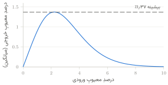
average outgoing quality of rectifying inspection
(n = 132, c = 3; a rejected lot of 2,000 is sorted 100 %)
worst average outgoing quality: 1.37% at 2.2% incoming
good lots pass; bad lots are sorted clean; in between the
plan lets through at most this share on average - the
limit is a property of the plan, not of the supplierایده. محمولههای خوب از طرح میگذرند و کمی معیوب دارند. محمولههای بد رد و پاک میشوند. در میانه، طرح بیشترین سهمِ معیوب را بیرون میفرستد: 1.37 % در حدودِ ۲٫۲ درصد معیوبِ ورودی. این حدِ کیفیتِ میانگینِ خروجی ویژگیِ طرح است، نه تأمینکننده. اگر بحرانیبودنِ سرِ کابل ۱٫۴ درصد را نپذیرد، طرحِ نمونهگیری کافی نیست و کنترل باید در خودِ پرس باشد (مثال 40.9).
40.4.10 برنامهریزیِ کیفیت در عدد
سه وارسیِ دیگر برنامهریزیِ کیفیت را میسنجند. آیا طرحِ کنترل همهٔ حالتهای مهمِ تحلیلِ خرابی را پوشانده است؟ پذیرفتنِ خواندنی که نزدیکِ حد است چه خطری دارد؟ نمودارِ کنترل رانشی کوچک را چقدر زود میبیند؟
برنامه:
python -m companion.ch40.examples_u40.4.10.1 پوششِ تحلیلِ خرابی با طرحِ کنترل
control plan against the FMEA: 5 modes with severity 7 or more
covered by a control-plan row (5 rows): 3
not covered: lug crimped with wrong die; transformer damaged in handling
the wrong-die crimp needs a die check at the press; the
handling damage needs the lift plan as a control - each
gap becomes a row with a method and a reactionایده. هر حالتِ خرابی با شدتِ ۷ یا بیشتر باید در طرحِ کنترل ردیفی داشته باشد. دو حالت ردیف ندارند: سرکابل با قالبِ نادرست و آسیبِ ترانسفورماتور در جابهجایی. اولی وارسیِ قالب در پرس را لازم دارد. دومی برنامهٔ بالابری را بهعنوانِ یک کنترل لازم دارد، با روش و واکنش. این وارسی ساده است و میتواند هر بار که تحلیلِ خرابی یا طرحِ کنترل بازنگری میشود خودکار اجرا شود، مانندِ قاعدههای دادهٔ فصلِ ۳۸ (بخش 38.6.7.8).
40.4.10.2 پذیرشِ خواندنِ نزدیکِ حد
a reading near the limit: chance the true value is over it
limit 20 micro-ohm; standard uncertainty 0.235
reading chance the joint is really over 20
19.2 0.0%
19.5 1.7%
19.7 10.1%
19.9 33.5%
a reading of 19.9 passes the limit but is a coin toss;
the guard band (accept below 20 - U = 19.5) keeps the
risk near 2 % - the decision rule is written in the ITPایده. خواندنِ ۱۹٫۹ میکرواهم از حدِ ۲۰ میگذرد، اما با عدمِ قطعیتِ استانداردِ 0.235، احتمالِ اینکه مقدارِ واقعی بالای حد باشد حدودِ یک سوم است. قاعدهٔ تصمیم این را از پیش روشن میکند. پذیرش زیرِ \(20 - U = 19.5\) است و خطرِ پذیرشِ نادرست حدودِ ۲ درصد میماند. این همان باندِ محافظِ آچار در درسِ الف است (بخش 40.3.6)، این بار برای یک اندازهگیری. قاعدهٔ تصمیم در برنامهٔ بازرسی و آزمون نوشته میشود، نه در لحظهٔ آزمون.
40.4.10.3 دیدنِ رانشِ کوچک
average run length of the X-bar chart (subgroups of 5)
shift in sigma chance a subgroup signals ARL
0.0 0.0027 370
0.5 0.0299 33
1.0 0.2225 4
1.5 0.6384 2
2.0 0.9295 1
a 2.6-sigma shift (the drifted wrench) is caught at once;
a half-sigma drift takes about 33 subgroups - the CUSUM
of ch 37 sees small drifts soonerایده. میانگینِ طولِ دنباله شمارِ زیرگروههایی است که پیش از یک هشدار انتظار میرود. بیهیچ جابهجایی، هر ۳۷۰ زیرگروه یک هشدارِ نادرست میآید. با جابهجاییِ ۲٫۶ انحرافِ معیار، یعنی آچارِ راندهشده، هشدار بیدرنگ میآید (مثال 40.8). با جابهجاییِ نیم انحرافِ معیار، حدودِ ۳۳ زیرگروه لازم است، یعنی ۳۳ اسکید. نمودارِ شوهارت جابهجاییِ بزرگ را زود میبیند و رانشِ کوچک را دیر. برای رانشِ کوچک، جمعِ تجمعیِ فصلِ ۳۷ (فصل 37) زودتر هشدار میدهد. انتخابِ نمودار به این بسته است که چه نوع خرابیای انتظار میرود.
- معادلهٔ 40.4 را توضیح دهید. چرا ردهبندی با شدت آغاز میشود؟
- سه حالتِ ردهٔ شدتِ ۹ و ۱۰ در اسکید کداماند؟
- ستونِ واکنش در طرحِ کنترل چرا مهمترین ستون است؟
- نقطهٔ توقف، نقطهٔ شاهد و بازبینی را تعریف کنید.
- تکرارپذیری و بازتولیدپذیری چه فرقی دارند؟ کدام با قید درست میشود؟
- معادلهٔ 40.7 را برای مشخصهای با فقط حدِ بالا بنویسید.
- چرا توانِ فرایند فقط برای فرایندِ پایدار معنا دارد؟
- چرا نمودارِ گشتاورِ ثبتشده رانشِ آچار را نمیدید؟
- معادلهٔ 40.11 را توضیح دهید. چرا طرحِ ۲۰ و صفر کافی نیست؟
- نمونهگیری در برابرِ چه چیزی محافظت میکند و در برابرِ چه چیزی نه؟
- تحلیلِ خرابیِ طراحی و فرایند چه فرقی دارند؟
- معادلهٔ 40.6 را توضیح دهید.
- بزرگترین سهمِ بودجهٔ عدمِ قطعیت کدام است و بهبودِ بعدی چیست؟
- چرا ادعای توانِ فرایند باید اندازهٔ نمونه را بگوید؟
- چرا حدهای نمودارِ نسبت پس از برداشتنِ علت دوباره حساب میشوند؟
- حدِ کیفیتِ میانگینِ خروجی ویژگیِ کیست؟
- کدام حالتهای خرابی در طرحِ کنترل ردیف ندارند؟
- چرا خواندنِ ۱۹٫۹ با حدِ ۲۰ تقریباً یک بخت است؟
- میانگینِ طولِ دنباله چیست؟ نمودارِ شوهارت رانشِ کوچک را کِی میبیند؟
- آزمایشِ عاملیِ دوسطحی چه چیزی را میبیند که تغییرِ یک عامل در هر بار نمیبیند؟
- نمونهگیریِ متغیری با چه شرطهایی نمونهٔ کمتری میخواهد؟
- مؤلفههای واریانسِ میانِ اسکیدها و درونِ اسکید چه چیزی دربارهٔ علت میگویند؟
- قاعدهٔ همه یا هیچ را بنویسید. کِی نتیجهٔ آن کنار گذاشته میشود؟
40.5 پ. عدمانطباق و شاهد
برنامهریزیِ کیفیت خطاها را کم میکند، اما صفر نمیکند. وقتی عدمانطباقی پیدا میشود، چهار کار به ترتیب انجام میشود. نخست، مهار: چه چیزهای دیگری ممکن است همین ایراد را داشته باشند؟ سپس علتِ ریشهای: چرا رخ داد؟ بعد اقدامِ اصلاحی: چه چیزی تغییر میکند تا تکرار نشود؟ و در پایان، بستن با شاهد: از کجا معلوم که کار کرد؟ این بخش این چهار کار را روی رویدادِ آچارِ TW-14 و چند نمونهٔ کوچکتر نشان میدهد. شاهدهایی هم که اسکید را تا ساختگاه همراهی میکنند در همین بخش میآیند: امتیازِ کتبی، نگهداری، بازرسیِ دریافت، تغییرِ تأمینکننده و ضمانت.
برنامه:
python -m companion.ch40.examples_c40.5.1 مهار با تبارنامه
در روزِ ۱۶، آچارِ TW-14 روی دستگاهِ سنجشِ گشتاور، در تنظیمِ ۷۰ نیوتنمتر، 78.9 نشان داد. یعنی حدودِ ۱۲ درصد بیشتر از گشتاورِ واقعی را نشان میداد. پس اتصالهایی که با آن بسته شده بودند کمگشتاورند. مهارِ عیب با تبارنامه شروع میشود. تبارنامه برای هر اسکید ثبت کرده است که OP40 در چه روزهایی، با کدام ابزار و کدام دستهٔ سرِ کابل انجام شده است.
def suspect_skids(tool: str, last_good: int, first_bad: int) -> list[str]:
"""Skids whose OP40 used the tool after its last good check and up
to the check that found it out of tolerance."""
out = []
for serial, g in src.GENEALOGY.items():
start, end = g["op40"]
if g["tool"] == tool and end > last_good and start <= first_bad:
out.append(serial)
return outcontainment of the drifted torque wrench TW-14
check on day 16: 78.9 N m shown at 70 set (limit 1.4)
last good check: day 11; days without a check: 12, 13, 14, 15
suspect skids: S-05, S-06, S-07
without genealogy: every skid with TW-14 (5) or all ten
S-03 and S-04 used TW-14 too, but checks on days 8-11
bracket their work: the record clears them
the three suspects had shipped: containment moves to site
(a lug-lot query works the same: L-2208 -> S-05, S-06, S-07, S-08)مثال 40.11 (سه اسکید، نه ده) پرسش. کدام اسکیدها مظنوناند؟ بیتبارنامه چند اسکید باید بازرسی میشد؟
پاسخ. S-05، S-06 و S-07. این سه پس از آخرین وارسیِ خوب در روزِ ۱۱ و تا وارسیِ شکستخورده در روزِ ۱۶ با TW-14 ساخته شدهاند. بیتبارنامه، همهٔ پنج اسکیدی که با TW-14 ساخته شدهاند مظنون بودند، یا حتی هر ده اسکید.
تفسیر. S-03 و S-04 هم با TW-14 ساخته شدهاند. اما وارسیهای روزهای ۸ تا ۱۱ دو طرفِ کارِ آنها را گرفتهاند، پس سوابق آنها را از تردید بیرون میآورد. ارزشِ وارسیِ روزانه همین است: نه فقط رانش را پیدا میکند، بلکه دامنهٔ اثرِ آن را هم محدود میکند. چهار روزِ بیوارسی دامنهٔ تردید را بزرگ کرد. سه اسکیدِ مظنون فرستاده شده بودند، پس مهار به ساختگاه رفت: اندازهگیریِ مقاومت و گشتاورِ دوباره در یک قطعیِ برنامهریزیشده. وارسی: سه اسکید در خروجی.
40.5.2 علتِ ریشهای
root cause: five whys, then the categories
why 1: S-06 tripped on an LV busbar fault in its first July
why 2: a busbar joint overheated: its bolt was under-torqued
why 3: TW-14 read 12 % high after it was dropped on day 12
why 4: the drop went unreported; the daily check was skipped 4 days
why 5: no hold when a check was missing; no one reviewed the log
cause categories:
method daily tool check with no hold when missing
measurement joint resistance not measured at FAT
machine wrench without drop indicator
people no habit of reporting a dropped tool
management FMEA rated detection 8 but no action was required
the root cause is in the system (no hold, no detection),
not in the person who dropped the tool; blaming the
person fixes nothing that the next drop will not repeatایده. پنج چرا از اثر تا علت پایین میرود: از قطعِ S-06 به اتصالِ کمگشتاور، از آن به آچارِ راندهشده، از آن به گزارشنشدنِ افتادنِ آچار، و از آن به نبودِ قاعده برای روزِ بیوارسی. دستههای علت سپس نگاه را پهن میکنند: روش، اندازهگیری، ماشین، افراد و مدیریت. هر دسته یک یافته دارد و هر یافته یک اقدام. علتِ ریشهای در سامانه است، نه در شخصی که آچار را انداخت. سرزنشِ او هیچ چیزی را درست نمیکند، چون افتادنِ بعدی همین زنجیره را تکرار میکند. کارخانهای که گزارشِ افتادنِ ابزار را تنبیه کند، دیگر گزارشی نمیگیرد. این همان فرهنگِ گزارشِ شبهحادثه است (بخش 32.2.8).
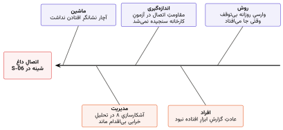
40.5.3 پارتو: کدام یافتهها اول؟
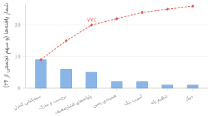
Pareto of 26 FAT findings on ten skids
control wiring 9 cumulative 35%
labels and documents 6 cumulative 58%
LV terminations 5 cumulative 77%
earth bonds 2 cumulative 85%
paint damage 2 cumulative 92%
relay settings 1 cumulative 96%
other 1 cumulative 100%
three categories hold 77 % of findings; control wiring is
first - the drawing-revision cause of the FMEA (ch 38) - but
the costliest finding was one LV termination: count and
consequence are ranked apartایده. نمودارِ پارتو دستهها را به ترتیبِ شمار مرتب میکند و سهمِ تجمعی را نشان میدهد. سه دسته ۷۷ درصدِ یافتهها را دارند. سیمکشیِ کنترل اول است و به علتِ «بازنگریِ نقشه» در تحلیلِ خرابی برمیگردد (فصلِ ۳۸). اما گرانترین یافته یک پایانهٔ فشارضعیف بود. پس شمار و پیامد جدا رتبهبندی میشوند. پارتوی شمار کارهای پرتکرار را نشان میدهد. پارتوی هزینه یا شدت کارهای خطرناک را. هر دو لازماند و هیچکدام جای دیگری را نمیگیرد (بخش 40.4.1).
40.5.4 گزارشِ هشتگامی
the 8D record of the torque event
D1 team
quality lead, line supervisor, test engineer, owner's QA
D2 problem
LV busbar joint overheated on S-06 in July
D3 containment
S-05 and S-07 measured and re-torqued on site
D4 root cause
dropped wrench; missed checks had no hold; no resistance at FAT
D5 actions chosen
shift check with hold; paint marks; resistance at FAT
D6 actions done
procedure rev C; meters bought; ITP updated
D7 prevent recurrence
FMEA detection re-rated; same rule for all torque tools and crimp dies
D8 close
three months of checks logged; team recognised
D7 is the step most often skipped: the fix for TW-14 is
extended to every tool and die that could fail the same
way, so the next event does not need an 8D of its ownایده. گزارشِ هشتگامی همان چهار کارِ این بخش است، با گامهایی برای تیم، تعریفِ مسئله و بستن. گامِ هفتم بیشتر از همه جا میافتد: پیشگیری از تکرار در جاهای مشابه. اصلاحِ TW-14 به همهٔ آچارهای گشتاوری و همهٔ قالبهای پرس تعمیم داده میشود. هر جا که همان سازوکار ممکن است خراب شود، همان قاعده اعمال میشود. بدونِ گامِ هفتم، رویدادِ بعدی گزارشِ هشتگامیِ خودش را لازم دارد.
40.5.5 اقدامِ اصلاحی و اثربخشی
اقدامِ اصلاحی به علت پاسخ میدهد، نه به اثر. بازگشتاوردنِ S-05 تا S-07 اصلاح است، نه اقدامِ اصلاحی. اقدامهای اصلاحیِ این رویداد اینهاست:
- وارسیِ آچار در هر نوبت، و قاعدهای که روزِ بیوارسی کار را میایستاند.
- علامتِ رنگ روی هر پیچ پس از گشتاور، که وارسیِ چشمی را ممکن میکند.
- اندازهگیریِ مقاومتِ اتصال در آزمونِ پذیرشِ کارخانه: پنج اتصال، و اگر یکی بالای ۱۷ میکرواهم بود، همه.
- بازنگریِ ردههای تحلیلِ خرابی، با آشکارسازیِ تازه.
اثربخشی با شاهد سنجیده میشود، نه با تاریخِ بستن. شاهدها اینهاست: سوابقِ وارسیِ نوبتی در سه ماه بیجاافتادگی، نمودارِ کنترلِ مقاومت که پایدار مانده (شکل 40.10)، و صفر اتصالِ داغ در پایشِ گرمانگاریِ سالِ اول (فصلِ ۳۷). اقدامی که شاهد ندارد بسته نیست. فقط وضعیتش «بسته» نوشته شده است (بخش 32.11.3).
40.5.6 امتیازِ کتبی
concession for the S-07 gland (it came 'agreed by phone')
number CR-012
requirement cable gland type G1, IP66
deviation gland type G2 fitted
reason G1 out of stock
risk G2 is IP66 and same thread; no change to fire rating
affected S-07
decided_by owner's engineer
decision accept, record in as-built
before_shipment yes
fields missing: 0
a concession accepts a known nonconformity in writing,
for named serials, before shipment, by the person with
the authority; a phone call is none of theseایده. پروندهٔ S-07 یک عدول داشت: نوعِ گلند عوض شده و «تلفنی توافق شده» بود. امتیازِ کتبی همان را به شکلِ درست ثبت میکند: شماره، الزام، عدول، دلیل، ارزیابیِ ریسک، شمارهٔ سریالهای اثرپذیر، تصمیمگیرنده، تصمیم، و اینکه پیش از ارسال گرفته شده است. تماسِ تلفنی هیچکدام از اینها نیست. امتیاز برای سریالهای نامبرده است، نه برای «همهٔ اسکیدها از این به بعد». اگر تغییر باید ماندگار شود، از مسیرِ کنترلِ تغییر میرود (بخش 40.3.11). امتیاز در سوابقِ چونساخت میماند تا یدکی و نگهداری درست انجام شوند (بخش 39.4.3).
40.5.7 نقطهٔ ورودِ تغییرِ مهندسی
تغییرِ مهندسی وقتی تصویب شود که چند واحد ساخته شدهاند، یک پرسش پیش میآورد: تغییر از کدام شمارهٔ سریال وارد میشود و با واحدهای ساختهشده چه کنیم؟ این نقطهٔ ورود (به انگلیسی cut-in point) در دفترِ پیکربندی ثبت میشود.
ECO-07 (relay firmware with the corrected trip logic) after S-05
cut-in at S-06; 5 skids already built
option cost k u then
retrofit at the factory 2.4 one configuration, retest
retrofit at the site 10.8 one configuration, site test
leave as built (concession) 20.0 two configurations, 25 y
the retrofit before shipping is the cheapest and leaves one
configuration; a concession looks free today but every
spare, procedure and setting file must know which skid
has which firmware for 25 years - and a safety function
that is known wrong is never left by concessionایده. اصلاحِ پیش از حمل ارزانترین است و یک پیکربندی باقی میگذارد. امتیازِ کتبی امروز رایگان به نظر میرسد. اما تا ۲۵ سال هر قطعهٔ یدکی، هر دستورالعمل و هر پروندهٔ تنظیمات باید بداند کدام اسکید کدام میانافزار را دارد. هزینهٔ آن پیکربندیِ دوم در جدول، سالانه و تا پایانِ عمر شمرده شده است. کارکردِ ایمنیای که نادرست بودنش معلوم است هرگز با امتیازِ کتبی رها نمیشود (بخش 40.5.6). این همان مدیریتِ تغییرِ فصلِ ۳۸ است، این بار روی محصولِ ساختهشده.
40.5.8 بستهبندی، نگهداری و حمل
preservation of a skid in storage (teaching values)
enclosure 30 m3, breathing 0.5 air changes a day,
outside air 10 g/m3 wetter than inside
water in: 150 g a day; gel holds 800 g
the desiccant lasts 5.3 days
storage before energisation is weeks, not days: the
preservation plan seals openings, inspects the gel's
colour weekly, replaces it, or powers the anti-
condensation heaters from a temporary supplyایده. کیفیتِ ساختهشده باید سالم به ساختگاه برسد. اسکیدِ بسته «نفس میکشد». تغییرِ دمای روز و شب هوا را جابهجا میکند و رطوبت وارد میشود. با فرضهای آموزشی، ۴ کیلوگرم سیلیکاژل فقط ۵٫۳ روز دوام دارد، در حالی که انبارداری پیش از برقدارشدن چند هفته است. پس طرحِ نگهداری چند کار را با هم انجام میدهد: دهانهها بسته میشوند، رنگِ نشانگرِ سیلیکاژل هر هفته دیده و در صورتِ نیاز عوض میشود، و گرمکنهای ضدِ میعان از برقِ موقت تغذیه میشوند. هر بازدید سابقهای دارد. حمل هم ثبتکنندهٔ ضربه و دستورِ بالابری دارد (فصل 31).
40.5.9 بازرسیِ دریافت در ساختگاه
receipt inspection at site: ten skids
skids with findings: 3
S-02 desiccant colour shows saturated; replace, check insides
S-04 shock indicator tripped (ch 31); hold, inspect, maker
S-09 test dossier not in the delivery; hold acceptance
receipt is the first site record of each serial; a
finding not written here becomes a dispute later about
whether it happened in transport or in storageایده. بازرسیِ دریافت نخستین سابقهٔ ساختگاهیِ هر سریال است. سه یافتهٔ اینجا هر کدام مسیرِ خود را دارند. سیلیکاژلِ اشباع یعنی وارسیِ درون و تعویض. نشانگرِ ضربهٔ فعالشده یعنی توقف، بازرسی و تماس با سازنده. پروندهٔ آزمونِ جاافتاده یعنی توقفِ پذیرش. یافتهای که اینجا نوشته نشود، بعدها به بحث دربارهٔ این میرسد که آسیب در حمل رخ داده یا در انبار. همان بحثی است که ضمانت و بیمه را به هم گره میزند (بخش 39.9.4).
40.5.10 تغییرِ تأمینکننده
supplier change notice: lug plating changed from day 18
first lot after the change: L-2209
used in: S-09, S-10 - without first-article tests
rule: a change to a critical part needs notice before
shipment, first-article inspection and the buyer's
release; here: pull tests on retained lugs of the lot
and resistance checks on the two skids before releaseایده. تأمینکنندهٔ سرِ کابل از روزِ ۱۸ آبکاری را عوض کرد و نخستین دسته پس از آن، L-2209، بیآزمونِ نخستیننمونه در S-09 و S-10 به کار رفت. قاعده ساده است. تغییر در قطعهٔ بحرانی پیش از ارسال اطلاع داده میشود، بازرسیِ نخستیننمونه میگیرد، و تا آزادسازیِ خریدار به کار نمیرود. اکنون که این قاعده شکسته شده، دو کار لازم است: آزمونِ کشش روی سرِ کابلهای نگهداشتهشدهٔ همان دسته، و اندازهگیریِ مقاومت روی دو اسکید پیش از آزادسازی. تبارنامه اینجا هم دامنه را به دو اسکید محدود کرد. همین قاعده در قراردادِ فصلِ ۳۹ بهعنوانِ بندِ اطلاع از تغییر میآید (بخش 39.4).
40.5.11 ردیابیِ ضمانت
warranty traceability of skid S-06
transformer (U-A)
60 months from delivery
inverter
60 months from commissioning
skid workmanship (integrator)
24 months from COD (or 30 months after delivery)
the hot joint is workmanship: the integrator's warranty
covers it, the transformer's does not - the genealogy
and the FAT record are the evidence for that claimایده. هر جزء ضمانتِ خودش را دارد، با آغاز و مدتِ خودش. اتصالِ داغِ S-06 ایرادِ کارِ یکپارچهساز است، نه ایرادِ ترانسفورماتور یا اینورتر. پس ضمانتِ یکپارچهساز آن را میپوشاند. شاهدِ این ادعا تبارنامه و سابقهٔ آزمونِ کارخانه است: کدام ابزار، کدام روز، کدام اتصال. بیآن سوابق، ادعا یک نظر است (بخش 39.4.5.3).
40.5.12 پیشبینیِ هزینهٔ ضمانت
warranty cost forecast from the field Weibull (lesson E)
60 parts, 24-month workmanship warranty, 3.5 k u a claim
chance a part fails in the warranty: 18.7%
expected claims 11.2; expected cost 39.3 k u
with shape below 1 most of these claims come early; the
forecast is redone as returns arrive, and each return is
traced to its lot before it is paidایده. برازشِ وایبولِ برگشتهای میدانی (بخش 40.7.5) میگوید هر جزء با احتمالِ ۱۸٫۷ درصد در دورهٔ ۲۴ ماههٔ ضمانت خراب میشود. برای ۶۰ جزء این حدودِ ۱۱ ادعا و ۳۹ هزار واحد است. چون شکلِ وایبول کمتر از یک است، بیشترِ این ادعاها زود میآیند. پیشبینی با رسیدنِ هر برگشت بهروز میشود. هر برگشت هم پیش از پرداخت با تبارنامه به دستهاش ردیابی میشود، تا ادعا با شاهد پرداخت شود (بخش 40.5.11).
40.5.13 هزینهٔ کیفیت
cost of quality of the ten skids (k u)
prevention 15.0 ( 13%)
appraisal 21.0 ( 19%)
internal failure 4.8 ( 4%)
external failure 71.4 ( 64%)
total 112.2 k u; external failure alone is 64%
one escaped defect cost more than all prevention and
appraisal together; the 8 k u of the corrective actions
(lesson D) would have been prevention moneyمثال 40.12 (یک فرار، بیش از همهٔ پیشگیری) پرسش. هزینهٔ کیفیتِ ده اسکید در چهار دستهٔ پیشگیری، ارزیابی، خرابیِ درونی و خرابیِ بیرونی چگونه پخش شده است؟
پاسخ. از ۱۱۲٫۲ هزار واحد، خرابیِ بیرونی ۶۴ درصد است و تقریباً همهاش از رویدادِ S-06 میآید. پیشگیری ۱۳ درصد، ارزیابی ۱۹ درصد و خرابیِ درونی ۴ درصد است.
تفسیر. یک عیبِ فرارکرده از همهٔ پیشگیری و ارزیابی روی هم گرانتر شد. ۸ هزار واحدِ اقدامهای اصلاحی اگر پیش از رویداد خرج میشد، پولِ پیشگیری بود (مثال 40.15). دستهبندیِ هزینهٔ کیفیت جای پول را نشان میدهد. هر واحدِ پیشگیری در جای درست چند واحد خرابی را جلوگیری میکند. این نسبت در کارخانههای فصلهای ۴۱ تا ۴۸ هم صدق میکند. وارسی: \(71.4/112.2 = 0.64\).
40.5.14 کارنامهٔ تأمینکنندگان
supplier scorecard of the integrator (one year)
supplier ppm rejected on time open SCAR (oldest)
lug maker 4,500 92% 1 (40 d)
panel builder 75,000 80% 2 (75 d)
fastener stockist 400 98% 0 (0 d)
paint supplier 2,222 95% 0 (0 d)
the panel builder: 75,000 ppm and a SCAR open 75 days -
it is also the week-9 signal of the p-chart; ppm compares
a 40-panel supplier with a 30,000-fastener one only when
the consequence of a reject is read beside itایده. کارنامهٔ تأمینکننده کیفیت، تحویل و درخواستهای اقدامِ اصلاحیِ باز را کنارِ هم میگذارد. سازندهٔ تابلو با ۷۵٬۰۰۰ قطعه در میلیون رد و درخواستی که ۷۵ روز باز مانده بدترین است. همان تأمینکننده نشانهٔ هفتهٔ ۹ نمودارِ نسبت هم بود (بخش 40.4.8.1). دو تأمینکننده با «قطعه در میلیون» فقط وقتی مقایسهپذیرند که پیامدِ یک ردی هم کنارِ عدد خوانده شود. یک تابلوی رد شده با یک پیچِ رد شده برابر نیست. درخواستِ اقدامِ اصلاحیِ تأمینکننده همان چرخهٔ این بخش است که به کارخانهٔ تأمینکننده سپرده میشود: مهار، علت، اقدام، و بستن با شاهد (بخش 39.5.3).
- چهار کارِ پس از یافتنِ عدمانطباق را به ترتیب بنویسید.
- چرا S-03 و S-04 از تردید بیرون میآیند؟
- پنج چرای رویدادِ TW-14 را بنویسید.
- چرا سرزنشِ فرد علتِ ریشهای را درست نمیکند؟
- اصلاح و اقدامِ اصلاحی چه فرقی دارند؟
- اثربخشیِ اقدامِ اصلاحی با چه شاهدهایی سنجیده میشود؟
- نُه فیلدِ امتیازِ کتبی را نام ببرید.
- چرا سیلیکاژل بهتنهایی برای انبارداریِ چندهفتهای کافی نیست؟
- یافتهٔ بازرسیِ دریافت چه بحثی را بعدها کوتاه میکند؟
- تغییرِ تأمینکننده در قطعهٔ بحرانی چه مسیری دارد؟
- چرا پارتوی شمار و پارتوی پیامد جدا رتبهبندی میشوند؟
- گامِ هفتمِ گزارشِ هشتگامی چیست؟
- چهار دستهٔ هزینهٔ کیفیت را با سهمِ هر کدام در ده اسکید بنویسید.
- کارنامهٔ تأمینکننده چه چیزهایی را کنارِ هم میگذارد؟
- نقطهٔ ورودِ تغییرِ مهندسی چیست و چرا امتیازِ کتبی برای واحدهای ساختهشده ارزان نیست؟
- چرا وارسیِ دستیِ ۱٬۲۰۰ نقطه به دستگاهِ خودکار نمیرسد؟
- چرا خواندنهای مقاومتِ عایقی پیش از مقایسه به یک دما برده میشوند؟
40.5.15 نردبانِ آزمونها
«آزمون شد» بهتنهایی چیزی نمیگوید. باید پرسید کدام آزمون، روی چه چیزی، برای ثابتکردنِ چه. شش نوع آزمون هر کدام پرسشی جدا را پاسخ میدهند و هیچکدام جای دیگری را نمیگیرد.
LADDER = [ # test, proves, on, who
("design verification", "the design meets its requirements",
"calculations, models, prototype", "designer"),
("type qualification", "a sample of the design passes type tests",
"one or few units", "accredited lab"),
("routine test", "each unit was built as designed",
"every unit", "maker"),
("factory acceptance (FAT)", "the assembled unit meets the order",
"every skid", "integrator + owner"),
("site acceptance (SAT)", "it arrived and was installed intact",
"every skid", "contractor + owner"),
("integrated plant test", "the plant works as a system",
"the plant", "owner + grid operator"),
]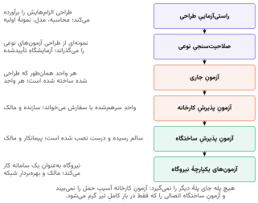
the test ladder: what each kind of test proves
design verification
proves: the design meets its requirements
on: calculations, models, prototype; by: designer
type qualification
proves: a sample of the design passes type tests
on: one or few units; by: accredited lab
routine test
proves: each unit was built as designed
on: every unit; by: maker
factory acceptance (FAT)
proves: the assembled unit meets the order
on: every skid; by: integrator + owner
site acceptance (SAT)
proves: it arrived and was installed intact
on: every skid; by: contractor + owner
integrated plant test
proves: the plant works as a system
on: the plant; by: owner + grid operator
type tests use the standard's methods on a sample; a
routine test on every unit cannot replace them, and they
cannot replace routine tests. FAT cannot see transport
damage; SAT cannot see a joint that heats only at full
load in July - the integrated tests of ch 50 and the
first-year monitoring of ch 37 close that gapمثال 40.13 (شش پله برای یک اسکید) پرسش. برای اسکیدِ ایستگاهِ خورشیدی، هر پله چه چیزی را میآزماید؟ کدامیک اتصالِ کمگشتاور را میدید؟
پاسخ. راستیآزماییِ طراحی نشان میدهد شینهها برای جریانِ نامی و جریانِ خطا اندازهاند. این کار با محاسبه انجام میشود (فصل 24). صلاحیتسنجیِ نوعی درجهٔ حفاظت و افزایشِ دمای یک اسکیدِ نمونه را میآزماید. آزمونِ جاریِ هر جزء، مانندِ ترانسفورماتور و اینورتر، در کارخانهٔ سازندهاش انجام میشود. آزمونِ پذیرشِ کارخانه شامل عایقی، کارکرد و تزریقِ ثانویه روی هر اسکید است. آزمونِ پذیرشِ ساختگاه پس از حمل و نصب انجام میشود. آزمونهای یکپارچه بلوک را زیرِ بار و با کنترلگرِ نیروگاه میآزمایند (فصلِ ۵۰). اتصالِ کمگشتاور را فقط دو چیز میتوانست ببیند: اندازهگیریِ مقاومت در آزمونِ کارخانه، که در طرح نبود، یا گرمانگاری زیرِ بار در آزمونهای یکپارچه، اگر بار به اندازهٔ کافی بالا میبود.
تفسیر. آزمونِ عایقی ولتاژ میخواهد، نه جریان. پس اتصالِ کمگشتاور از آن سالم میگذرد. این همان شکافِ نردبان است: پلهای که میتوانست ایراد را ببیند، اصلاً ایراد را نمیسنجید. هر پله با پرسشِ خودش طراحی میشود: این آزمون چه سازوکارِ خرابیای را میتواند ببیند؟ برنامهٔ بازرسی و آزمونِ تازه مقاومتِ اتصال را به آزمونِ کارخانه میافزاید (بخش 40.5.5). آزمونهای ولتاژِ بالا و تزریقِ ثانویه اینجا فقط با هدف و معیار آمدهاند. روالِ اجرای آنها با افرادِ صلاحیتدار و دستورهای خودِ کارخانه است.
40.5.16 وارسیِ سیمکشی: انسان یا دستگاه
control wiring: 1200 terminations a skid, one wrong in 500
errors made in ten skids: 24.0
check misses left after left after FAT
a check the check (FAT finds 60 %)
point-to-point by hand 5.0% 1.20 0.480
automatic tester 0.1% 0.02 0.010
by hand: 10 h a skid, and one wrong wire in about 21 skids
still reaches the site; the tester needs a
wiring list in machine form (from the design database of
ch 38) and about 3 h a skid - a person checking 1,200
points misses some however careful; the tester's misses
come from a wrong list, so the list itself is reviewedایده. فردی که ۱٬۲۰۰ نقطه را یکییکی وارسی میکند، هر قدر هم دقیق باشد، چند درصد را نمیبیند. آزمونِ کارخانه هم فقط بخشی از خطاهای باقیمانده را مییابد. پس با وارسیِ دستی، از هر حدودِ ۲۱ اسکید یک سیمِ اشتباه به ساختگاه میرسد. دستگاهِ آزمونِ خودکار تقریباً چیزی را از دست نمیدهد. اما فهرستِ سیمکشیِ ماشینخوان میخواهد که از پایگاهِ دادهٔ طراحی بیاید (فصلِ ۳۸). خطای دستگاه از فهرستِ نادرست میآید، پس خودِ فهرست بازبینی میشود. این همان پرسشِ نسبتِ پوشش در بخش 40.5.15 است: هر وارسی چه سهمی از عیبها را میبیند.
40.5.17 مقاومتِ عایقی در یک دما
MV cable insulation resistance, corrected to 20 C (teaching
rule: halves for every 10 C rise; the maker's or the
standard's correction applies in a real test)
skid read MOhm at C corrected
S-01 2,600 22 2,987
S-02 2,400 24 3,167
S-03 2,900 20 2,900
S-04 1,100 38 3,830
S-05 2,300 25 3,253
S-06 2,500 23 3,078
S-07 2,200 26 3,335
S-08 2,700 21 2,894
S-09 1,500 21 1,608
S-10 1,900 30 3,800
lowest as read: S-04 (a hot bay); lowest corrected: S-09
compare readings only at one temperature: the hot skid is
normal, and the skid that looked ordinary is the one to
look at again (a damp termination?)ایده. مقاومتِ عایقی با دما بهشدت کم میشود. پس خواندنهایی که در دماهای مختلف گرفته شدهاند فقط پس از بردن به یک دمای مبنا مقایسهپذیرند. اینجا قاعدهٔ آموزشیِ «هر ۱۰ درجه نصف» به کار رفته است. در آزمونِ واقعی، ضریبِ سازنده یا استاندارد به کار میرود. S-04 کمترین خواندن را داشت فقط چون جایگاه داغ بود. S-09 که عادی به نظر میرسید، پس از تصحیح کمترین است و باید دوباره دیده شود. این آزمون با ولتاژِ آزمون انجام میشود و روشِ ایمنِ آن از برنامهٔ آزمونِ کارخانه و افرادِ شایسته میآید؛ این کتاب روشِ اجرا نمیدهد.
40.6 ت. آزمایشگاهِ کیفیتِ کارخانه
این آزمایشگاه سه مثالِ کارشدهای را که برنامهٔ فصل خواسته است کنارِ هم میگذارد. گامِ ۱ برگهٔ مسیر و برنامهٔ بازرسیِ یک اسکید را میسازد. گامِ ۲ پروندهٔ آزمونِ ساختگیِ S-07 را ممیزی میکند. گامِ ۳ عیبِ گشتاور را از علت در کارخانه تا پیامد در نیروگاه و بستنِ آن دنبال میکند.
برنامه:
python -m companion.ch40.lab_d40.6.1 گامِ ۱: برگهٔ مسیر
برگهٔ مسیر همراهِ اسکید از ایستگاهی به ایستگاهِ دیگر میرود. هر عملیات امضا، تاریخ و سوابقِ خودش را دارد، مانندِ ابزار، دستهٔ قطعه و شمارهٔ سریال. تبارنامه از همین فیلدها ساخته میشود.
process traveler of skid S-07 (one line an operation)
op work record
OP10 weld, inspect, paint base frame sign, date
OP20 receive and inspect equipment transformer TX-5107
OP30 set and bolt equipment on frame sign, date
OP40 LV busbar and cable terminations tool TW-14, lugs L-2208, days 15-16
OP50 MV cable termination at RMU jointer, kit lot
OP60 auxiliary and control wiring sign, date
OP70 earthing and bonding sign, date
OP80 factory acceptance test dossier, ITP points
OP90 preserve, pack, dispatch sign, date
the traveler goes with the skid: each signature is a
record, and the genealogy is built from its fieldsایده. برگهٔ مسیر، برنامهٔ بازرسی و آزمون (بخش 40.4.4) و طرحِ کنترل (بخش 40.4.3) سه سندِ یک سامانهاند. طرحِ کنترل میگوید چه چیزی سنجیده شود. برنامهٔ بازرسی میگوید خریدار کجا حاضر است. برگهٔ مسیر نشان میدهد هر دو برای همین اسکید انجام شدهاند. برگهٔ کاغذی و برگهٔ دیجیتال یک کار را انجام میدهند. برگهٔ دیجیتال فقط پرسوجوی تبارنامه را سریعتر میکند (بخش 40.5.1).
40.6.2 گامِ ۲: ممیزیِ پروندهٔ آزمون
پروندهٔ آزمونِ S-07 سیزده ورودی دارد و همهٔ نتیجههایش «قبول» است. ممیزی عددها را زیرِ سؤال نمیبرد. میپرسد آیا این عددها حساب میشوند: ابزارِ معتبر، رویهٔ درست، سریالِ درست، آزادسازیِ خریدار و امتیازِ کتبی.
def audit(dossier, itp, cal_due, proc_rev, genealogy, tool_checks,
serial: str = "S-07") -> list[tuple[str, str]]:
"""Findings of a test-dossier audit: (check, finding)."""
out = []
fail = max(tool_checks)
good = last_good_check(tool_checks, fail)
for e in dossier:
c, day = e["check"], e["day"]
inst = e.get("instrument")
if inst in cal_due and cal_due[inst] < day and inst != "TW-14":
out.append((c, f"{inst} calibration ran out on day "
f"{cal_due[inst]}"))
if itp.get(c) == "H" and "owner" not in e["signed"]:
out.append((c, "hold point passed without the owner's release"))
if "jointer_cert" in e and not e["jointer_cert"]:
out.append((c, "no jointer certificate number"))
if c in proc_rev and e.get("procedure_rev") != proc_rev[c][0] \
and day >= proc_rev[c][1]:
out.append((c, f"procedure rev {e['procedure_rev']} used, "
f"rev {proc_rev[c][0]} released day "
f"{proc_rev[c][1]}"))
if c == "serials against genealogy" and \
e["result"] != genealogy[serial]["tx"]:
out.append((c, f"{e['result']} recorded, genealogy says "
f"{genealogy[serial]['tx']}"))
if inst == "TW-14" and day > good:
out.append((c, f"tool unchecked since day {good} (failed day "
f"{fail})"))
if e.get("deviation"):
out.append((c, "deviation without a concession number"))
return outaudit of the S-07 test dossier: 13 entries, 8 findings
insulation resistance LV
IR-03 calibration ran out on day 17
insulation resistance MV
IR-03 calibration ran out on day 17
MV termination record
no jointer certificate number
torque record OP40
tool unchecked since day 11 (failed day 16)
functional test
hold point passed without the owner's release
secondary injection of relays
procedure rev B used, rev C released day 18
serials against genealogy
TX-5106 recorded, genealogy says TX-5107
preservation check
deviation without a concession number
entries with no finding: 5
every result in the dossier 'passed'; the audit does not
question the numbers, it questions whether they count:
valid instrument, right procedure, right serial, the
owner's release, a written concessionمثال 40.14 (سیزده قبول، هشت یافته) پرسش. پروندهٔ آزمونِ S-07 را با برنامهٔ بازرسی و آزمون، کالیبراسیون، رویهها و تبارنامه وارسی کنید. چه یافتههایی هست؟
پاسخ. هشت یافته در هشت ورودی. پنج ورودی بییافتهاند. یافتهها اینهاست:
- دو آزمونِ عایقی با دستگاهی انجام شدهاند که کالیبراسیونش در روزِ ۱۷ تمام شده بود.
- سابقهٔ سرکابل شمارهٔ گواهیِ جوشکار ندارد.
- سابقهٔ گشتاور با آچاری ثبت شده که از روزِ ۱۱ وارسی نشده بود.
- آزمونِ کارکرد، که نقطهٔ توقف است، بیآزادسازیِ خریدار گذشته است.
- تزریقِ ثانویه با بازنگریِ B رویه انجام شده، در حالی که بازنگریِ C از روزِ ۱۸ صادر شده بود.
- سریالِ ترانسفورماتور در پرونده TX-5106 است، در حالی که تبارنامه TX-5107 میگوید.
- عدولِ گلند امتیازِ کتبی ندارد.
تفسیر. هیچکدام از این یافتهها نمیگوید اسکید معیوب است. میگویند شاهد کامل نیست. هر یافته اقدامِ خودش را دارد. آزمونهای عایقی با دستگاهِ کالیبره تکرار میشوند. گواهیِ جوشکار ضمیمه میشود. گشتاور در ساختگاه وارسی میشود. آزمونِ کارکرد با حضورِ خریدار تکرار میشود. تزریق با رویهٔ تازه یا با تحلیلِ تفاوتِ دو بازنگری تکرار میشود. سریال درست میشود و تبارنامه وارسی میشود. امتیازِ کتبی صادر میشود (بخش 40.5.6). سریالِ نادرست خطرناکترین یافته است، چون همهٔ سوابقِ دیگرِ آن واحد را به واحدِ دیگری پیوند میدهد. همین شکاف میانِ دفتر و ارسالنامه در فصلِ ۳۸ هم دیده شد (مثال 38.20). وارسی: \(13 - 8 = 5\) ورودیِ بییافته.
40.6.3 گامِ ۳: عیب از علت تا پیامد و بستن
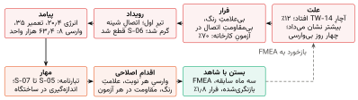
the torque defect from cause to consequence (skid S-06)
cause: TW-14 dropped, read 12 % high; no check days 12-15
escape: no paint mark, visual check, FAT without joint
resistance: 70% of bad joints leave
event: first July, a busbar joint overheats, S-06 trips
energy: 5 MW x 0.27 x 24 h x 9 d = 292 MWh = 20.4 k u
repair: 35 k u; checks of S-05 and S-07: 8 k u
total: 63.4 k u (no one hurt; fire risk was real)
after the actions 1.8% of bad joints would leave
(40 times fewer), for about 8 k u
closure needs evidence, not dates: shift checks logged
for three months, joint resistance in every FAT, the
FMEA detection re-rated, S-05/S-07 measured on siteمثال 40.15 (شصتوسه هزار واحد برای چهار روزِ بیوارسی) پرسش. عیبِ گشتاور برای نیروگاه چقدر هزینه داشت؟ اقدامها چقدر فرار را کم میکنند و چقدر هزینه دارند؟
پاسخ. بلوکِ S-06 در تیرِ اول ۹ روز بیرون بود: ۲۹۲ مگاواتساعت انرژی، یعنی 20.4 هزار واحد. تعمیر ۳۵ هزار واحد و وارسیِ دو اسکیدِ دیگر ۸ هزار واحد هزینه داشت. جمع 63.4 هزار واحد است. پیش از اقدامها، ۷۰ درصدِ اتصالهای معیوب از کارخانه بیرون میرفتند. پس از آنها ۱٫۸ درصد، یعنی ۴۰ برابر کمتر، با هزینهٔ حدودِ ۸ هزار واحد برای میکرواهممتر و زمانِ وارسی.
تفسیر. کسی آسیب ندید، اما خطرِ آتش واقعی بود. اتصالِ داغ در تابلوی فشارضعیف میتواند آتش بگیرد (بخش 32.4). پس شدتِ ۹ در تحلیلِ خرابی درست بود و آشکارسازیِ ۸ هم درست بود. آنچه کم بود اقدامی بود که آن آشکارسازیِ بد را بهتر کند. بستن با شاهد است: سه ماه سابقهٔ وارسیِ نوبتی، مقاومتِ اتصال در هر آزمونِ کارخانه، بازنگریِ ردههای تحلیل، و اندازهگیریِ S-05 و S-07 در ساختگاه. بازخورد هم به تحلیلِ حالتهای خرابی برمیگردد. آشکارسازیِ اتصال از ۸ به ۲ میرسد و این بار با شاهد. این پروندهٔ بستنِ عیب یکی از تحویلدادنیهای فصل است (PLP-PRJ-REP-0006). وارسی: \(5 \times 0.27 \times 24 \times 9 = 291.6\) مگاواتساعت؛ \(291.6 \times 0.07 = 20.4\).
- برگهٔ مسیر چه فیلدهایی دارد و چرا؟
- سه سندِ یک سامانه، یعنی طرحِ کنترل، برنامهٔ بازرسی و برگهٔ مسیر، هر کدام چه میگویند؟
- ممیزیِ پرونده چه چیزی را زیرِ سؤال میبرد و چه چیزی را نه؟
- چرا سریالِ نادرست خطرناکترین یافته است؟
- آزمونِ کارکردِ بیآزادسازیِ خریدار چه مشکلی دارد؟
- هزینهٔ عیبِ گشتاور برای نیروگاه از چه اجزایی ساخته شده است؟
- چرا ردههای تحلیلِ خرابی درست بودند و باز عیب فرار کرد؟
- بستنِ این عیب چه شاهدهایی دارد؟
40.7 ث. قابلیتِ اطمینان در تولید
قابلیتِ اطمینانِ یک محصول در طراحی تعیین میشود. در تولید یا نگه داشته میشود یا از دست میرود. اتصالِ کمگشتاور خرابیای نبود که طراحی پیشبینی کرده باشد. کارخانه آن را ساخت. این بخش تحلیلِ خرابی را به مشخصههای بحرانی پیوند میدهد، رشدِ قابلیتِ اطمینان را در اجرای آزمایشی میسنجد، پیشکارکرد را با هزینهاش مقایسه میکند، و برگشتهای میدانی را با روشِ فصلِ ۳۷ میخوانَد. این همان رشتهٔ قابلیتِ اطمینانِ کتاب است: دادهٔ خرابی در فصلِ ۳۷، الزامهای تأمینکننده در فصلِ ۳۹، رشد در این فصل، و روشهای فصلِ ۵۲.
برنامه:
python -m companion.ch40.examples_e40.7.1 مشخصههای بحرانی
critical characteristics drawn from the FMEA
(severity 9-10, or 7-8 with occurrence 3 or more)
OP40 LV joint under-torqued: hot joint, trip, fire risk
OP40 lug crimped with wrong die: hot lug
OP50 MV stress cone misplaced: MV fault
OP70 earth bond missing: touch voltage
4 of 8 modes become critical: each gets a
control-plan row, a record in the traveler and a place in
the FAT, because each leads to a field failure mechanism
(heat, insulation breakdown, touch voltage)ایده. مشخصهٔ بحرانی مشخصهای است که اگر از حد بیرون برود، به خرابی در میدان میرسد. نمونهها گرما، شکستِ عایق و ولتاژِ تماس است. چهار حالت از هشت حالت بحرانیاند. هر کدام سه چیز میگیرد: یک ردیف در طرحِ کنترل (بخش 40.4.3)، یک سابقه در برگهٔ مسیر، و جایی در آزمونِ کارخانه. هر مشخصهٔ بحرانی باید سازوکارِ خرابیاش را نام ببرد. اگر نتوان گفت چگونه خراب میشود، نمیتوان گفت چه آزمونی آن را میبیند (مثال 40.13).
40.7.2 رشدِ قابلیتِ اطمینان
در اجرای آزمایشیِ طولانیِ اسکیدهای نخست، هر خرابی علتیابی میشود و اصلاحش در اسکیدهای بعدی ساخته میشود. اگر این کار درست انجام شود، فاصلهٔ خرابیها بلندتر میشود. این رشدِ قابلیتِ اطمینان است (STD-169). مدلِ توانیِ کرو-امسا شمارِ تجمعیِ خرابیها را با زمانِ تجمعیِ آزمون پیوند میدهد (STD-170):
\[ N(t) = \lambda\, t^{\beta}, \qquad \hat\beta = \frac{n}{\sum_{i=1}^{n} \ln(T/t_i)}, \qquad \text{MTBF}(T) = \frac{T}{n\,\hat\beta} \tag{40.14}\]
در این رابطه \(t_i\) زمانِ تجمعیِ خرابیِ \(i\) است و \(T\) زمانِ پایانِ آزمون. \(\beta\) کمتر از یک یعنی رشد. شیبِ \(\beta\) همان است که در فصلِ ۳۷ دیدیم (فصل 37).
def crow_amsaa(times, T: float) -> dict[str, float]:
"""Power-law growth model fitted by maximum likelihood to cumulative
failure times of a test stopped at time T (beta as in ch 37)."""
n = len(times)
beta = float(crow_amsaa_beta(times, T))
lam = n / T ** beta
return dict(n=n, beta=beta, lam=lam, mtbf_now=T / (n * beta),
mtbf_cum=T / n)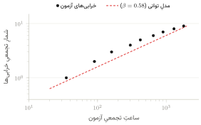
reliability growth in the pilot extended-run test
failures 9 in 2,000 h; beta 0.58 (below 1: improving)
cumulative MTBF 222 h; MTBF now 385 h
target 1,000 h is reached at about 19,145 h of test
if the corrective actions keep coming at the same pace;
five skids on test share it: 3,829 h each (about 5 months)
growth is not time passing - it is failures found, their
causes removed and the fixes built into later skidsمثال 40.16 (رشد یعنی علتی که برداشته شد) پرسش. در ۲٬۰۰۰ ساعت آزمون ۹ خرابی رخ داده است. میانگینِ زمانِ میانِ خرابیها اکنون چقدر است؟ تا هدفِ ۱٬۰۰۰ ساعت چقدر آزمون لازم است؟
پاسخ. \(\hat\beta = 0.58\). میانگینِ تجمعی ۲۲۲ ساعت است، اما میانگینِ لحظهای ۳۸۵ ساعت است. اگر رشد با همین آهنگ ادامه یابد، هدف حدودِ ۱۹٬۱۰۰ ساعت آزمون میخواهد. با پنج اسکید روی آزمون، این حدودِ ۳٬۸۰۰ ساعت برای هر کدام است، یعنی پنج ماه.
تفسیر. رشد با گذشتِ زمان نمیآید. با خرابیهایی میآید که پیدا شدند، علتشان برداشته شد و اصلاحشان در اسکیدهای بعدی ساخته شد. اگر اصلاحها متوقف شوند، \(\beta\) به یک نزدیک میشود و رشد هم میایستد. پنج ماه آزمون برای اسکیدهای کارخانهای زیاد است. پس برنامه ترکیبی است: آزمونِ کوتاهتر در کارخانه، و پایشِ سالِ اول در نیروگاه با همان روش (فصلِ ۳۷). مدل یک فرض است و فرضش، یعنی ادامهٔ همان آهنگِ اصلاح، باید گفته شود. وارسی: \(2000/(9 \times 0.577) = 385\).
40.7.3 پیشکارکرد: کِی میارزد؟
برخی بردهای کنترل عیبی پنهان دارند. چنین بردی زود خراب میشود، با توزیعِ وایبول و شکلِ کمتر از یک. پیشکارکرد آنها را پیش از ارسال در کارخانه خراب میکند. هر ساعتِ پیشکارکرد هزینه دارد. هر عیبی هم که به میدان برسد هزینهٔ خودش را دارد.
burn-in of control boards: 60 boards, 2% latent (1.2 expected)
latent ones fail as Weibull beta 0.7, eta 300 h; rack 1 u a board-hour
hours caught left cost if a field failure costs
6 k u (swap) 40 k u (block trips)
0 0.00 1.20 7.20 48.00
24 0.19 1.01 7.51 41.91
48 0.29 0.91 8.34 39.26
168 0.58 0.62 13.78 34.73
336 0.79 0.41 22.60 36.42
cheapest: 0 h if a failure is a board swap, 168 h
if it trips a block: the field cost decides, not a habit
burn-in removes weak units; it does not remove the cause -
the supplier's corrective action does (lesson C)مثال 40.17 (قیمتِ خرابی تصمیم را میگیرد، نه عادت) پرسش. با ۶۰ برد و ۲ درصد عیبِ پنهان، چند ساعت پیشکارکرد کمهزینهترین است؟
پاسخ. اگر خرابی در میدان فقط تعویضِ برد باشد (۶ هزار واحد)، بیپیشکارکرد کمهزینهترین است. اگر خرابی یک بلوک را قطع کند (۴۰ هزار واحد)، ۱۶۸ ساعت کمهزینهترین است.
تفسیر. پیشکارکرد همیشه نمیارزد. هزینهٔ خرابی در میدان تصمیم را میگیرد. مدیرِ کارخانهای که «همیشه ۴۸ ساعت» میگوید، عادتی را تکرار میکند و تحلیلی انجام نداده است. یک نکتهٔ دیگر مهمتر است. پیشکارکرد واحدهای ضعیف را بیرون میکشد، اما علتشان را برنمیدارد. علت را اقدامِ اصلاحیِ تأمینکنندهٔ برد برمیدارد (بخش 40.5.5). وقتی آن اقدام نتیجه داد، دیگر به پیشکارکرد نیازی نیست. وارسی: \(F(168) = 1 - e^{-(168/300)^{0.7}} = 0.49\)؛ \(1.2 \times 0.49 = 0.58\) برد.
40.7.4 فرارِ عیب: آشکارسازیها در ضرب
اگر هر مرحلهٔ وارسی سهمِ \(d_i\) از عیبها را پیدا کند، سهمی که از کارخانه بیرون میرود حاصلضربِ بخشهای پیدانشده است:
\[ P_\text{esc} = \prod_i (1 - d_i) \tag{40.15}\]
escape chain of an under-torqued joint (share that leaves)
stage before after
paint mark at OP40 0.0 0.5
visual in process 0.3 0.3
resistance at FAT 0.0 0.95
escape 0.70 0.0175
with 22 bad joints of 240: 15.1 reach site before, 0.38 after
detection is multiplied, not added: three modest checks
in a row beat one perfect check that is sometimes skippedایده. پیش از اقدامها، دو مرحله اصلاً عیب را نمیدیدند و ۷۰ درصد بیرون میرفت. پس از اقدامها، سه وارسیِ میانه در ضرب ۱٫۸ درصد را بیرون میفرستند. از ۲۲ اتصالِ معیوب در سه اسکیدِ راندهشده، ۱۵ اتصال پیش از اقدامها به ساختگاه میرسید و پس از آنها کمتر از نیم اتصال. آشکارسازیها در ضرب کار میکنند، نه در جمع. سه وارسیِ میانه پشتِ سرِ هم از یک وارسیِ کامل که گاهی جا میافتد بهترند. وارسیِ جاافتاده آشکارسازیِ صفر دارد، همانطور که در روزهای ۱۲ تا ۱۵ دیدیم.
40.7.5 برگشتهای میدانی
early field returns of skid components (first half year)
failures 7, survivors 53 at 4,380 h
Weibull shape 0.36 (ch 37 method); the failure rate at
100 h is 10.6 times the rate at 4,000 h
shape below 1: the failure rate falls with age - the mark
of manufacturing escapes, not of wear-out; the response is
in the factory (genealogy, root cause, supplier action),
not a shorter maintenance intervalایده. هفت خرابی در ۶۰ جزء در شش ماهِ نخست رخ داده است. برازشِ وایبول با دادههای سانسورشده، همان روشِ فصلِ ۳۷ (فصل 37)، شکلِ 0.36 میدهد. نرخِ خرابی در ۱۰۰ ساعت ده برابرِ نرخ در ۴٬۰۰۰ ساعت است. شکلِ کمتر از یک نشانهٔ فرارِ عیب از ساخت است، نه فرسودگی. پاسخ هم در کارخانه است: تبارنامهٔ سریالهای خرابشده، علتِ ریشهای، و اقدامِ اصلاحیِ تأمینکننده. کوتاهکردنِ فاصلهٔ نگهداری در نیروگاه چیزی را درست نمیکند. این پیوندِ دادههای میدان به کارخانه است. اگر سریالها ردیابیشدنی نباشند، این پیوند هم نیست (بخش 40.3.7).
40.7.6 میانگینِ زمانِ میانِ خرابیها با کرانِ اطمینان
اگر \(r\) خرابی در \(T\) ساعتِ تجمعیِ کار رخ دهد، برآوردِ نقطهای \(T/r\) است. کرانِ پایینِ یکطرفه با توزیعِ خیدو به دست میآید (STD-166، روشهای فصلِ ۳۷):
\[ \text{MTBF}_\text{lower} = \frac{2T}{\chi^2_{1-\alpha;\,2r+2}} \tag{40.16}\]
MTBF of the skid auxiliary systems from fleet hours
4 failures in 43,800 skid-hours: point estimate 10,950 h
one-sided 95 % lower bound (chi-square): 4,785 h
with four failures the bound is far below the point value;
a supplier quoting the point value as 'demonstrated' is
quoting a hope - the lower bound is what the data proveایده. با چهار خرابی، برآوردِ نقطهای ۱۰٬۹۵۰ ساعت است، اما کرانِ پایینِ ۹۵ درصدی ۴٬۷۸۵ ساعت است، کمتر از نصف. تأمینکنندهای که عددِ نقطهای را «اثباتشده» بنامد، امیدی را گزارش کرده است. آنچه دادهها ثابت میکنند کرانِ پایین است. الزامهای قابلیتِ اطمینانِ قرارداد هم باید بگویند با چه کرانی سنجیده میشوند (بخش 39.6.3). با رسیدنِ ساعتهای بیشتر، کران به برآورد نزدیک میشود.
40.7.7 غربالِ چرخهٔ دمایی و آزمونِ اثبات
strength of a thermal-cycling screen (teaching rate 0.12)
cycles share of latent defects found
2 21%
5 45%
10 70%
20 91%
each cycle finds a share of what is left, so the screen
flattens; ten cycles find 70 % - the rest is the job of
the supplier's corrective action, not of more cyclesایده. غربالِ تنشِ محیطی، مانندِ چرخههای دمایی، در هر چرخه سهمی از عیبهای پنهانِ باقیمانده را آشکار میکند. پس قدرتِ غربال \(1 - e^{-kN}\) است و کمکم صاف میشود. ده چرخه ۷۰ درصد را پیدا میکنند و بیست چرخه ۹۱ درصد را. چرخههای بیشتر هزینه دارند و به محصولِ سالم هم فرسودگی میدهند. باقیماندهٔ عیبها کارِ اقدامِ اصلاحیِ تأمینکننده است، نه چرخههای بیشتر. همان منطقِ پیشکارکرد است (مثال 40.17).
zero-failure test to demonstrate MTBF 1,000 h
confidence test hours without a failure
60% 916
80% 1,609
90% 2,303
90 % needs 2,303 h with no failure at all; one failure
stretches the test - which is why growth testing (lesson
E) comes first, and the demonstration only at the endایده. آزمونِ اثباتِ بیخرابی نشان میدهد میانگینِ زمانِ میانِ خرابیها با اطمینانِ \(C\) دستکم برابر با هدف است، به شرطِ اینکه در زمانِ \(T = -\text{MTBF}\,\ln(1-C)\) هیچ خرابیای رخ ندهد. برای ۱٬۰۰۰ ساعت با ۹۰ درصد اطمینان، ۲٬۳۰۳ ساعت بیخرابی لازم است. یک خرابی آزمون را طولانیتر میکند. پس ترتیب مهم است. اول آزمونِ رشد، که خرابیها را پیدا و علتها را برطرف میکند (بخش 40.7.2). آزمونِ اثبات در پایان میآید، وقتی خرابیِ تازهای انتظار نمیرود.
40.7.8 تداخلِ تنش و استحکام
اگر بار \(L\) و استحکام \(S\) هر دو نرمال و مستقل باشند، احتمالِ خرابی احتمالِ \(L > S\) است:
\[ P_\text{f} = 1 - \Phi\!\left(\frac{\mu_S - \mu_L}{\sqrt{\sigma_S^2 + \sigma_L^2}}\right) \tag{40.17}\]
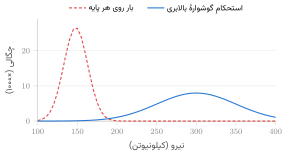
lifting lug: chance that load exceeds strength (both normal)
load a leg 148 kN (sd 15)
strength mean sd safety factor chance of failure
250 25 1.69 2.34e-04
300 25 2.03 9.26e-08
300 50 2.03 1.80e-03
the same safety factor (2.0) gives 19,398 times the
risk when the strength scatters twice as much: a safety
factor without the scatter says little - the lift lug's
load test in the first-article package measures itایده. ضریبِ اطمینانِ ۲ با استحکامِ پراکندهٔ دو برابر، حدودِ ۱۹٬۰۰۰ برابر خطرِ بیشتر میدهد. ضریبِ اطمینان بدونِ پراکندگی چیزِ زیادی نمیگوید. همان منطقِ توانِ فرایند است: میانگینِ دور از حد کافی نیست، پراکندگی هم باید کوچک باشد (بخش 40.4.7). آزمونِ بارِ گوشوارهٔ بالابری در بستهٔ نخستیننمونه (بخش 40.3.8.13) پراکندگیِ استحکام را میسنجد. برنامهٔ بالابری هم بار را محدود نگه میدارد (بخش 40.8.2). این روش در فصلِ ۵۲ برای سازهها و تجهیزاتِ دیگر هم به کار میرود.
- مشخصهٔ بحرانی چیست و چه سه چیزی میگیرد؟
- معادلهٔ 40.14 را توضیح دهید. \(\beta\) کمتر از یک یعنی چه؟
- میانگینِ تجمعی و میانگینِ لحظهای چه فرقی دارند؟
- رشدِ قابلیتِ اطمینان از کجا میآید؟
- کِی پیشکارکرد میارزد؟ چه چیزی را برنمیدارد؟
- معادلهٔ 40.15 را توضیح دهید. چرا وارسیِ جاافتاده بدترین وارسی است؟
- شکلِ وایبولِ کمتر از یک در برگشتهای میدانی چه میگوید؟
- چرا ردیابیِ سریال برای خواندنِ برگشتهای میدانی لازم است؟
- معادلهٔ 40.16 را توضیح دهید. چرا کرانِ پایین از برآوردِ نقطهای کمتر است؟
- چرا قدرتِ غربالِ چرخهٔ دمایی صاف میشود؟
- آزمونِ اثباتِ بیخرابی برای ۹۰ درصد چند برابرِ هدف زمان میخواهد؟
- معادلهٔ 40.17 را توضیح دهید. چرا ضریبِ اطمینان بهتنهایی کافی نیست؟
40.8 ایمنی و محیطِ زیست در کارخانه
کارخانه همان خطرهای ساختگاه را دارد، بهاضافهٔ خطرهای خودش. خطرهای مشترک برق، بالابری و کارِ گرماند. خطرهای خاصِ کارخانه مواد شیمیایی، تجهیزاتِ فشار و خلأ، کورهها، کارِ تکراری، پسماند و انتشار به هوا هستند. نظامِ مدیریتِ ایمنی همان نظامِ فصلِ ۳۲ است (STD-137)، و نظامِ مدیریتِ محیطِ زیستِ کارخانه هم نظامِ مدیریتی است با شاهدهای خودش (STD-144). این بخش چند عدد را نشان میدهد که برنامهریزان لازم دارند. هیچکدام روالِ کار نیست. بالابری، جداسازی و کارِ گرم را افرادِ صلاحیتدار با مجوزهای خودِ کارخانه برنامهریزی و اجرا میکنند.
برنامه:
python -m companion.ch40.examples_f40.8.1 جداسازیِ انرژی در جایگاهِ آزمون
جایگاهِ آزمونِ پذیرشِ کارخانه منبعهای انرژیِ چندگانه دارد: تغذیهٔ آزمونِ فشارضعیف، ولتاژِ آزمونِ عایقی، و انرژیِ ذخیره در خازنهای اینورتر. برنامهٔ جایگاه برای هر منبع چند چیز را میگوید: چه کسی آن را برقدار و بیبرق میکند، چه کسی نبودِ ولتاژ را تأیید میکند، و چه حصار و نشانهای جایگاه را جدا میکند. یک عدد نشان میدهد چرا «کلید باز است» کافی نیست:
stored energy in an inverter DC link (design information)
10 mF at 1100 V holds 6.0 kJ
discharge resistor 10 kOhm: time constant 100 s
to fall below 50 V takes 309 s (about 5 minutes)
the maker's label gives the waiting time and the test bay
rules give who verifies absence of voltage and how; this
number only shows why the wait exists (ch 6, ch 32)ایده. خازنِ ۱۰ میلیفارادیِ لینکِ مستقیم در ۱٬۱۰۰ ولت شش کیلوژول انرژی دارد. با مقاومتِ تخلیه، ۵ دقیقه طول میکشد تا ولتاژ زیرِ ۵۰ ولت برسد. برچسبِ سازنده زمانِ انتظار را میگوید و قاعدههای جایگاه میگویند چه کسی و چگونه نبودِ ولتاژ را تأیید میکند. این عدد فقط نشان میدهد آن انتظار از کجا میآید. انرژیِ بهجامانده در فصلهای ۶ و ۳۲ هم آمده است (بخش 32.3.1).
40.8.2 بالابریِ اسکید
lifting the skid: 26.2 t, weight 257 kN
four-leg sling; a rigid load may hang on two legs only,
so the plan takes two (a common lifting practice)
angle from horizontal tension a leg, kN
60 148
45 182
30 257
a flatter sling pulls harder: at 30 degrees each leg
carries the whole weight; the centre of gravity is off
centre (the transformer is heavy), so the lift plan by a
competent person sets legs, angles and the spreaderایده. هرچه زاویهٔ سیمبکسل تختتر باشد، کشش بیشتر است. در ۳۰ درجه هر پایه همهٔ وزن را میکشد. اسکید صلب است و بارِ آن روی چهار پایه برابر پخش نمیشود. پس برنامه فرض میکند فقط دو پایه بار را میکشند. این روشی رایج در بالابری است. مرکزِ ثقل هم در وسط نیست، چون ترانسفورماتور سنگین است. برنامهٔ بالابری را فردِ صلاحیتدار مینویسد: پایهها، زاویهها، تیرِ پخشکننده، ظرفیتِ جرثقیل و منطقهٔ ممنوعه (فصل 31). این عدد فقط نشان میدهد چرا زاویه مهم است.
40.8.3 کارِ گرم، فرایندهای گرمایی، فشار و خلأ
جوشکاریِ شاسی کارِ گرم است. مجوزِ کارِ گرم میخواهد و پس از کار هم پاسِ آتش لازم دارد (بخش 32.2.4). کورههای پخت رنگ، و در کارخانهٔ ترانسفورماتور، خشککردن و آغشتهسازیِ سیمپیچ، فرایندهای گرماییاند. خطرِ آنها سوختگی، بخارِ حلال و آتش است. پرکردنِ روغن زیرِ خلأ و آزمونهای فشار، تجهیزاتِ فشار و خلأ میخواهند. این تجهیزات بازرسیِ دورهای، شیرهای ایمنی و افرادِ آموزشدیده دارند. اینها در کارخانههای فصلهای ۴۱ تا ۴۸ دوباره میآیند. اینجا فقط هدف و نقش آمده است، نه روال.
40.8.4 مواد شیمیایی و انتشارِ حلال
paint for ten frames: 300 L (60 m2 x 2 coats x 0.25 L/m2 x 10)
solvent-borne 126 kg solvent to air
high-solids 75 kg solvent to air
solvent-borne, booth with abatement 25 kg solvent to air
a mass balance: what goes in the gun and is not captured
goes to air; the permit of the shop sets the limit and
the paint data sheet gives the content (ch 33, data)ایده. موازنهٔ جرمِ حلال ساده است: آنچه وارد تفنگِ رنگ میشود و گرفته نمیشود، به هوا میرود. رنگِ حلالدار برای ده شاسی ۱۲۶ کیلوگرم حلال به هوا میدهد. رنگِ پرجامد این عدد را به ۷۵ کیلوگرم میرساند. اتاقکِ رنگ با سامانهٔ کاهشِ انتشار آن را به ۲۵ کیلوگرم میرساند. حدِ مجاز در پروانهٔ کارگاه است و مقدارِ حلالِ هر رنگ در برگهٔ دادهٔ آن. هر دو باید شاهد داشته باشند، مانندِ هر دادهٔ زیستمحیطیِ دیگر (بخش 39.11). کارگران هم برگهٔ ایمنیِ هر ماده را دارند و تهویه و تجهیزاتِ حفاظتِ فردی میگیرند.
40.8.5 پسماند
waste streams of ten skids
steel offcuts 1200 kg inert recycle
copper offcuts 80 kg inert recycle (valuable)
packaging timber 1500 kg non-hazardous reuse or recycle
cable insulation offcuts 50 kg non-hazardous licensed waste
paint and thinner waste 60 kg hazardous licensed carrier
oily rags, absorbents 20 kg hazardous licensed carrier
total 2,910 kg; hazardous 80 kg (2.7%)
the small hazardous share needs the most care: separate
bins, a licensed carrier and a record that it arrivedایده. ده اسکید حدودِ سه تُن پسماند میسازند. بیشترِ آن بیخطر است و بازیافت میشود: فولاد، مس و چوبِ بستهبندی. مسِ بریده ارزشمند است و باید جدا نگه داشته شود. پسماندِ خطرناک، یعنی رنگ و حلال و پارچههای روغنی، فقط ۲٫۷ درصد است، اما بیشترین مراقبت را میخواهد: ظرفِ جدا، حملکنندهٔ مجاز، و سابقهای که نشان دهد به مقصد رسیده است. سابقهٔ رسیدن همان زنجیرهٔ شاهد است. پسماندی که سابقه ندارد ممکن است جایی ریخته شده باشد.
40.8.6 ارگونومی و برنامهٔ اضطرارِ کارخانه
۲۴ اتصالِ شینه در هر اسکید با آچارِ گشتاوری بسته میشوند و بعضی بالای سر قرار دارند. کارِ تکراری با نیروی واکنشی، شانه و مچ را آسیب میزند. پاسخ مهندسی است: سکوی کار در ارتفاعِ درست، بازوی واکنش برای آچار، و چرخشِ کار میانِ افراد. ارزیابیِ کارِ دستی در فصلِ ۳۲ آمده است. برنامهٔ اضطرارِ کارخانه هم همان سطحها و نقشهای فصلِ ۳۲ را دارد (بخش 32.9)، بهاضافهٔ خطرهای خاصِ کارخانه: آتشِ اتاقکِ رنگ، نشتِ روغن و جراحت در جایگاهِ آزمون. شمارش در محلِ تجمع هم بر سوابقِ ورود و خروج تکیه دارد (مثال 32.43).
این بخش عدد و مفهوم میدهد، نه روال. جداسازی و تأییدِ نبودِ ولتاژ، برنامهٔ بالابری، مجوزِ کارِ گرم، کار با تجهیزاتِ فشار و خلأ و مدیریتِ مواد شیمیایی را افرادِ صلاحیتدار با دستورها و مجوزهای خودِ کارخانه و قانونِ محل انجام میدهند.
- چرا «کلید باز است» در جایگاهِ آزمون کافی نیست؟
- انرژیِ خازنِ ۱۰ میلیفارادی در ۱٬۱۰۰ ولت چقدر است؟
- چرا با زاویهٔ تختتر، کششِ هر پایهٔ سیمبکسل بیشتر میشود؟
- چرا برنامهٔ بالابری فرض میکند فقط دو پایه از چهار پایه بار را میکشند؟
- موازنهٔ جرمِ حلال را برای رنگِ پرجامد بنویسید.
- چرا سهمِ کوچکِ پسماندِ خطرناک بیشترین مراقبت را میخواهد؟
- پاسخِ مهندسی به کارِ تکراریِ گشتاور چیست؟
40.9 نیروگاهِ P: سه مثالِ یکپارچه
برنامه:
python -m companion.ch40.integratedمثال 40.18 (مقدماتی: سه عددِ کارخانه با دست) پرسش. بازدهِ زنجیرهای، زمانِ تکت و احتمالِ پذیرشِ طرحِ «۲۰ نمونه، هیچ معیوب» را در ۵ درصد معیوب با دست حساب کنید.
three factory numbers checked by hand
RTY = 0.97 x 0.99 x 0.99 x 0.95 x 0.98 x 0.94 x 0.99 x 0.92 x 1.00 = 0.758
takt = 4 weeks x 40 h / 10 skids = 16 h
P(accept) of n = 20, c = 0 at 5 % defective = 0.95^20 = 0.358
a hand check catches a yield entered as 95 instead of 0.95,
or a takt computed from calendar hours instead of shiftsپاسخ. 0.758، ۱۶ ساعت و 0.358. هر سه با کد برابرند.
تفسیر. دو لغزشِ رایج با وارسیِ دستی پیدا میشوند. یکی بازدهی است که «۹۵» نوشته شود بهجای «۰٫۹۵». دیگری زمانِ تکتی است که از ساعتهای تقویمی حساب شود بهجای ساعتهای نوبت. اولی بازدهِ زنجیرهای را بیمعنا میکند. دومی خط را چهار برابر پرظرفیتتر از واقع نشان میدهد.
مثال 40.19 (میانی: خطِ اسکید در عدد) پرسش. خطِ اسکیدِ ایستگاهِ خورشیدی را در عدد خلاصه کنید.
the PV station skid line in numbers
79 touch hours a skid; RTY 0.758; takt 16 h
bottleneck S1 16.18 h with frames made, S3 14.25 h with frames bought
joint resistance Cpk 1.93 with good tools; the
drifted wrench put about 2 % of joints over the limit
S-07 dossier: 8 findings in 13 entries
the escaped defect cost 63.4 k u; the actions cut escapes 40 timesتفسیر. هر عدد پاسخِ پرسشی است که فصل طرح کرد. آیا خط برنامه را برآورده میکند؟ با شاسیِ خریداریشده، بله. آیا فرایند توانمند است؟ با ابزارِ سالم، بله، و با ابزارِ راندهشده، نه. آیا پروندهها شاهدند؟ هنوز نه: هشت یافته. آیا اقدامها کار میکنند؟ فرار ۴۰ برابر کم شد. عددهای خوب و بد کنارِ هم میآیند، چون هر دو برای تصمیم لازماند.
مثال 40.20 (یکپارچه: مبنای کیفیتِ ساختِ اسکیدها) پرسش. مبنای کیفیتِ ساختِ اسکیدها را با یافتهها و موردهای باز بنویسید.
D-044 manufacturing quality basis of the PV station skids
1 route OP10-OP90 with a traveler per skid; frames bought
from a qualified maker (first-article inspection kept);
the line starts a week early - it takes 66 h to fill
2 PFMEA ranked by severity class, then S x O; four critical
characteristics, each with a control-plan row
3 ITP: functional test a hold; IR, relay injection and LV
busbar visual witnessed; records reviewed
4 torque: logged wrenches, shift checks, paint marks;
joint resistance on five joints a skid, all if one > 17
5 gauge: micro-ohmmeter with fixture (%GRR 11.5)
6 lugs: incoming plan n = 132, c = 3; die checked at press
7 genealogy: serial, lot, tool and person links (15 a skid)
8 dossier accepted on validity, not on 'pass' (lesson D)
9 burn-in of control boards only if a failure trips a block
10 relay injection on every skid (p 3 % > k1/k2 0.9 %); wiring
by an automatic tester from the design wiring list
11 crimp pull Cpk 0.94 - raise the mean (factorial) before
serial build; IR compared at 20 C only
open: the integrator's own capability data before award
(U-121); a second certified jointer before serial buildتفسیر. این تصمیمِ D-044 است. یافتههایی که به فصلهای دیگر برمیگردند:
- شاسیها خریداری میشوند و گلوگاه به اتصالهای فشارضعیف میرود. ده اسکید با پرشدنِ خط 194.5 h میخواهند، نه چهار هفته. پس خط یک هفته زودتر آغاز میشود (فصلهای ۲۲ و ۴۹).
- مقاومتِ اتصال در هر آزمونِ کارخانه اندازه گرفته میشود و در آزمونهای یکپارچهٔ نیروگاه گرمانگاری زیرِ بار انجام میشود (فصلهای ۴۶ و ۵۰).
- برگشتهای میدانیِ سالِ اول با روشِ فصلِ ۳۷ خوانده میشوند و به تبارنامه پیوند میخورند (فصلهای ۳۷ و ۵۲).
- سازندهٔ بردهای کنترل اقدامِ اصلاحیِ عیبِ پنهان را میدهد. پیشکارکرد فقط تا آن زمان انجام میشود (فصلهای ۳۹ و ۴۴).
- دادهٔ توانِ فرایندِ خودِ یکپارچهساز پیش از واگذاری روشن نیست (U-121). عددهای این فصل آموزشیاند و جای ممیزیِ واقعی را نمیگیرند (بخش 39.5.3).
40.10 عددهای کلیدیِ کیفیتِ ساختِ نیروگاهِ P
| کمیت | مقدار | مثال |
|---|---|---|
| ساعتِ کارِ هر اسکید؛ بازدهِ زنجیرهای | 79 h؛ 0.758 | مثال 40.1 |
| زمانِ تکت؛ گلوگاه با شاسیِ خریداریشده | 16 h؛ 14.25 h | مثال 40.2 |
| ساعتِ اضافهٔ ده اسکیدِ نخست | 112 h | بخش 40.3.4 |
| نسبتِ عدمِ قطعیتِ آچار | 2.5 | بخش 40.3.6 |
| سهمِ سامانهٔ اندازهگیری، پراب دستی و با قید | 16.8 / 11.5 % | مثال 40.6 |
| \(C_\text{pk}\) مقاومتِ اتصال، ابزارِ سالم و راندهشده | 1.93 / 0.69 | بخش 40.4.7 |
| طرحِ نمونهگیریِ سرِ کابل | n = 132, c = 3 | مثال 40.9 |
| یافتههای پروندهٔ S-07 | ۸ در ۱۳ ورودی | مثال 40.14 |
| هزینهٔ عیبِ گشتاور؛ کاهشِ فرار | 63.4 k u؛ ۴۰ برابر | مثال 40.15 |
| شیبِ رشد؛ میانگینِ لحظهای | 0.58؛ 385 h | مثال 40.16 |
| شکلِ وایبولِ برگشتهای میدانی | 0.36 | بخش 40.7.5 |
| زمانِ ساختِ ده اسکید با پرشدنِ خط | 194.5 h | مثال 40.3 |
| هزینهٔ کیفیت؛ سهمِ خرابیِ بیرونی | 112.2 k u؛ ۶۴٪ | مثال 40.12 |
| اثربخشیِ کلیِ جایگاهِ آزمون | ۶۰٪ | بخش 40.3.8.1 |
40.11 گردشِ کارِ کیفیتِ ساخت
- شکستِ محصول، فهرستِ مواد، مسیر، زمانِ تکت و توازن، شایستگی، کالیبراسیون و ردیابی (بخش 40.2).
- مرحلهها از نمونهٔ اولیه تا انبوه؛ ساختن یا خریدن؛ کنترلِ تغییر و بازرسیِ نخستیننمونه (بخش 40.3.9).
- تحلیلِ خرابی با شدت اول؛ طرحِ کنترل با واکنش؛ برنامهٔ بازرسی و آزمون؛ سنجشِ اندازهگیری؛ توانِ فرایند؛ نمودارِ کنترل؛ نمونهگیری (بخش 40.4).
- مهار با تبارنامه؛ علتِ ریشهای در سامانه؛ اقدامِ اصلاحی با شاهد؛ امتیازِ کتبی؛ نگهداری؛ دریافت؛ تغییرِ تأمینکننده (بخش 40.5).
- نردبانِ آزمونها با پرسشِ هر پله (بخش 40.5.15).
- برگهٔ مسیر؛ ممیزیِ پرونده؛ عیب از علت تا بستن (بخش 40.6).
- مشخصههای بحرانی؛ رشد؛ پیشکارکرد با هزینه؛ فرار؛ برگشتهای میدانی (بخش 40.7).
- ایمنی و محیطِ زیستِ کارخانه، بیروال (بخش 40.8).
40.12 آزمایشگاههای پایتونِ این فصل
| آزمایشگاه | برنامه | آنچه میسازد |
|---|---|---|
| داده | sources | فهرستِ مواد، مسیر، اندازهگیریها، تحلیلِ خرابی، تبارنامه، پرونده، اجرای آزمایشی |
| سامانهٔ تولید | examples_a | فهرستِ مواد، مسیر، تکت، یادگیری، شایستگی، کالیبراسیون، ردیابی، ساختن یا خریدن |
| برنامهریزیِ کیفیت | examples_b | تحلیلِ خرابی، طرحِ کنترل، برنامهٔ بازرسی، سنجشِ اندازهگیری، توانِ فرایند، نمودار، نمونهگیری |
| عدمانطباق و شاهد | examples_c | مهار، علت، امتیاز، نگهداری، دریافت، تغییر، ضمانت، نردبانِ آزمون |
| آزمایشگاهِ ت | lab_d | برگهٔ مسیر، ممیزیِ پرونده، ردِ عیب |
| قابلیتِ اطمینان | examples_e | مشخصههای بحرانی، رشد، پیشکارکرد، فرار، برگشتها |
| ایمنی و محیطِ زیست | examples_f | بالابری، حلال، پسماند، تخلیهٔ خازن |
| تولید و هزینه در عدد | examples_s | اثربخشیِ کلی، کارِ در جریان، تقسیمِ کار، زمانبندی، موجودیِ اطمینان، هزینهٔ کیفیت، بازهٔ کالیبراسیون، تحلیلِ خرابیِ طراحی |
| آمارِ کیفیت و حلِ مسئله | examples_t | کاپا، بودجهٔ عدمِ قطعیت، نمودارِ نسبت، کرانِ توان، کیفیتِ خروجی، پارتو، هشتگام، ضمانت، کرانِ میانگینِ زمانِ میانِ خرابیها |
| دورِ سوم | examples_u | زمانسنجی، کانبان، اندازهٔ سفارش، چیدمان، پوششِ طرحِ کنترل، قاعدهٔ تصمیم، طولِ دنباله، کارنامه، غربال، آزمونِ اثبات |
| دورِ چهارم | examples_v | گواهیهای کالیبراسیون، توانِ سرِ کابل، نمونهگیریِ متغیری، آزمایشِ عاملی، اولویتِ بازده، نخستیننمونه، تنش و استحکام |
| دورِ پنجم | examples_w | همه یا هیچ، مؤلفههای واریانس، وارسیِ سیمکشی، نقطهٔ ورودِ تغییر، جبرانِ برنامه، مقاومتِ عایقی در یک دما |
| نیروگاهِ P | integrated | با دست، خط، مبنای D-044 |
| مثالها و پاسخها | worked | سطرهای E01 و P01 به بعد |
ماژولِ تازهٔ quality پایهٔ این برنامههاست و با آزمونهایی در برابرِ حسابِ دستی سنجیده شده است. ثابتهای نمودارِ کنترل را با انتگرالگیریِ عددی حساب میکند و شیبِ رشد را از ماژولِ performance فصلِ ۳۷ میگیرد.
40.13 جعبهٔ استاندارد و انطباق
- نظامِ کیفیتِ کارخانه با ISO 9001:2026 (STD-167، ویرایشِ ششم، منتشرشده در ۱۶ سپتامبر ۲۰۲۶) نام برده میشود. انتقال از ویرایشِ ۲۰۱۵ تا حدودِ ۲۰۲۹ است. هیچ بندی نقل نشده است.
- تحلیلِ حالتهای خرابی با IEC 60812:2018 (STD-168)؛ رشدِ قابلیتِ اطمینان با IEC 61014:2003 و IEC 61164:2004 (STD-169، STD-170)؛ نمودارهای کنترل با ISO 7870-2:2023 (STD-172)؛ مدیریتِ اندازهگیری با ISO 10012:2026 (STD-171).
- نمونهگیری با ISO 2859-1:2026 (STD-076) نام برده میشود. عددهای فصل از محاسبهٔ دوجملهای میآیند و هیچ جدولی نقل نشده است. صلاحیتِ آزمایشگاهها با ISO/IEC 17025:2017 (STD-011) آمده است.
- ایمنی و محیطِ زیستِ کارخانه با ISO 45001:2018 (STD-137) و ISO 14001:2026 (STD-144) نام برده میشوند. روالها با قانونِ محل و مجوزهای کارخانهاند.
- راهنمای ۱۰ و ۳۰ درصد برای سهمِ سامانهٔ اندازهگیری راهنمایی رایج در صنعت است، نه الزامِ استاندارد. هیچ عددی در این فصل الزام نیست. (وارسیشده 2026-11-17.)
40.14 تحویلدادنیِ نیروگاهِ P
| سند | محتوا | معیارِ پذیرش |
|---|---|---|
| PLP-PRJ-PRO-0007 | طرحِ کیفیتِ ساختِ اسکیدها، مسیر و برگهٔ مسیر | هر عملیات با ایستگاه، زمان، بازده و سابقه |
| PLP-ELE-LST-0009 | برنامهٔ بازرسی و آزمونِ اسکید | هر بازرسی با معیار، سابقه و نقطهٔ خریدار |
| PLP-PRJ-REG-0024 | تحلیلِ حالتهای خرابیِ فرایند و طرحِ کنترل | هر مشخصهٔ بحرانی با کنترل و واکنش |
| PLP-PRJ-REP-0006 | پروندهٔ بستنِ عیبِ گشتاور | مهار، علت، اقدام، شاهدِ اثربخشی |
| PLP-PRJ-REP-0007 | گزارشِ ممیزیِ پروندهٔ آزمونِ S-07 | هر یافته با اقدام و بستن |
این فصل اینها را به پروندهٔ نیروگاهِ P میافزاید:
- تصمیمِ D-044: مبنای کیفیتِ ساختِ اسکیدها (مثال 40.20).
- فرضهای A-434 تا A-441:
- A-434: یکپارچهسازِ ساختگی، ده اسکید و فهرستِ موادِ آنها.
- A-435: مسیر، زمانها، بازدهها، بازکاری، تقاضا، منحنیِ یادگیری و شایستگیها.
- A-436: اندازهگیریهای مقاومتِ اتصال و مطالعهٔ سامانهٔ اندازهگیری.
- A-437: ردههای تحلیلِ خرابی و طرحِ کنترل.
- A-438: تبارنامه، وارسیهای آچار، پروندهٔ S-07، امتیاز و یافتههای دریافت.
- A-439: خرابیهای اجرای آزمایشی، عیبِ پنهانِ بردها و برگشتهای میدانی.
- A-440: پیامدِ عیب در نیروگاه (ضریبِ ظرفیتِ تیر، روزهای قطعی، تعمیر) و ضمانتها.
- A-441: جرمها، رنگ، پسماند و دادهٔ خازنِ اینورتر.
- مجهول: دادهٔ توانِ فرایندِ خودِ یکپارچهساز پیش از واگذاری (U-121).
- یافتهها: خریدنِ شاسی، مقاومتِ اتصال در آزمونِ کارخانه، وارسیِ نوبتیِ آچار، قیدِ پراب، طرحِ نمونهگیری، و پیشکارکرد فقط در صورتِ قطعِ بلوک.
- کتابخانهٔ همراه: ماژولِ
qualityبا آزمونها و برنامههای فصلِ ۴۰.
40.15 جمعبندی
- سامانهٔ تولید: فهرستِ مواد مرزِ مسئولیت را نشان میدهد؛ بازدهها در ضرب کوچک میشوند؛ زمانِ تکت از تقاضا و زمانِ چرخه از خط؛ گلوگاهِ بیحاشیه برنامه را میشکند؛ نخستین واحدها کندترند؛ دو نفر برای هر عملیات؛ نسبتِ عدمِ قطعیت و باندِ محافظ؛ ردیابی دامنهٔ فراخوان را کوچک میکند (بخش 40.2).
- مرحلهها و تغییر: هر مرحله پرسشِ خودش را دارد؛ مونتاژ در ساختگاه و تعمیر در میدان محدودیت دارند؛ ساختن یا خریدن با ظرفیت و دانشِ فرایند؛ هر تغییر با بازرسیِ نخستیننمونه (بخش 40.3.9).
- برنامهریزیِ کیفیت: ردهبندی با شدت اول؛ طرحِ کنترل با واکنش؛ نقطههای توقف و شاهد با ریسک؛ قید ابزار را درست میکند، نه بازرس را؛ توانِ فرایند برای فرایندِ پایدار؛ ابزارِ راندهشده رانشِ خودش را نمیبیند؛ نمونهگیری محموله را میسنجد، نه قطعه را (بخش 40.4).
- عدمانطباق و شاهد: مهار با تبارنامه؛ علت در سامانه، نه در شخص؛ اقدامِ اصلاحی با شاهدِ اثربخشی؛ امتیازِ کتبی برای سریالهای نامبرده؛ نگهداری، دریافت، تغییرِ تأمینکننده و ضمانت با سابقه (بخش 40.5).
- نردبانِ آزمونها: هیچ پله جای پلهٔ دیگر را نمیگیرد؛ هر پله با سازوکارِ خرابیای که میبیند طراحی میشود (بخش 40.5.15).
- آزمایشگاه: برگهٔ مسیر، ممیزیِ پرونده با هشت یافته، و عیب از علت تا بستن با ۶۳٫۴ هزار واحد هزینه و فرارِ ۴۰ برابر کمتر (بخش 40.6).
- قابلیتِ اطمینان در تولید: مشخصههای بحرانی با سازوکار؛ رشد یعنی علتِ برداشتهشده؛ پیشکارکرد وقتی خرابی گران است؛ آشکارسازیها در ضرب؛ شکلِ وایبولِ کمتر از یک یعنی فرارِ ساخت (بخش 40.7).
- ایمنی و محیطِ زیستِ کارخانه: انرژیِ بهجامانده، زاویهٔ سیمبکسل، موازنهٔ حلال، پسماندِ خطرناک با سابقه؛ عدد و مفهوم، نه روال (بخش 40.8).
- در عدد: اثربخشیِ کلی با سه مالک؛ کارِ در جریانِ بیشتر یعنی زمانِ ماندن و بازخوردِ کندتر؛ تقسیمِ کار با پیشنیاز؛ تکت زمانِ پرشدنِ خط را پنهان میکند؛ موجودیِ اطمینان برای نوسانِ مصرف؛ بازهٔ کالیبراسیون رانش را میگیرد و افتادن را نه؛ توافقِ بازرسان و بودجهٔ عدمِ قطعیت؛ توان با اندازهٔ نمونه؛ نمودارِ نسبت؛ کیفیتِ میانگینِ خروجی؛ پارتو و هشتگام؛ هزینهٔ کیفیت؛ کرانِ پایینِ میانگینِ زمانِ میانِ خرابیها (بخش 40.3.8، بخش 40.4.6، بخش 40.5.13).
40.15.1 واژگانِ فصلِ ۴۰
| فارسی | انگلیسی | یادداشت |
|---|---|---|
| سامانهٔ تولید | production system | |
| درختِ محصول | product breakdown structure | |
| فهرستِ مواد | bill of materials | BOM |
| مسیرِ ساخت | routing | |
| دستورالعملِ کار | work instruction | |
| بازدهِ نخستینگذر | first-pass yield | |
| بازدهِ زنجیرهای | rolled throughput yield | RTY |
| زمانِ تکت | takt time | |
| گلوگاه | bottleneck | |
| توازنِ خط | line balance | |
| منحنیِ یادگیری | learning curve | |
| ماتریسِ شایستگی | competency matrix | |
| نسبتِ رواداری به عدمِ قطعیتِ آزمون | test uncertainty ratio | TUR |
| باندِ محافظ | guard band | |
| ردیابی | traceability | |
| تبارنامه | genealogy | serial/lot |
| ساختِ آزمایشی | pilot build | |
| بازرسیِ نخستیننمونه | first-article inspection | FAI |
| کنترلِ تغییر | change control | |
| طرحِ کیفیت | quality plan | |
| تحلیلِ حالتها و اثرهای خرابی | failure modes and effects analysis | FMEA |
| عددِ اولویتِ خطر | risk priority number | RPN |
| بحرانیت | criticality | |
| طرحِ کنترل | control plan | |
| برنامهٔ بازرسی و آزمون | inspection and test plan | ITP |
| نقطهٔ توقف | hold point | |
| تکرارپذیری و بازتولیدپذیری | gauge repeatability and reproducibility | GRR |
| توانِ فرایند | process capability | Cp, Cpk |
| نمودارِ کنترل | control chart | |
| منحنیِ مشخصهٔ عملیاتی | operating characteristic curve | OC |
| مهار | containment | |
| علتِ ریشهای | root cause | |
| اقدامِ اصلاحی | corrective action | |
| برگهٔ مسیر | traveler | |
| پروندهٔ آزمون | test dossier | |
| آزمونِ جاری | routine test | |
| صلاحیتسنجیِ نوعی | type qualification | |
| مشخصهٔ بحرانی | critical characteristic | |
| رشدِ قابلیتِ اطمینان | reliability growth | |
| پیشکارکرد | burn-in | |
| فرارِ عیب | defect escape | |
| اثربخشیِ کلیِ تجهیزات | overall equipment effectiveness | OEE |
| کارِ در جریان | work in progress | WIP |
| موجودیِ اطمینان | safety stock | |
| نقطهٔ سفارش | reorder point | |
| کاپای کوهن | Cohen’s kappa | |
| بودجهٔ عدمِ قطعیت | uncertainty budget | |
| نمودارِ نسبت | p-chart | |
| کیفیتِ میانگینِ خروجی | average outgoing quality | AOQ |
| نمودارِ پارتو | Pareto chart | |
| گزارشِ هشتگامی | 8D report | |
| هزینهٔ کیفیت | cost of quality | |
| تحلیلِ خرابیِ طراحی | design FMEA | |
| زمانسنجی | time study | |
| زمانِ استاندارد | standard time | |
| کانبان | kanban | |
| اندازهٔ اقتصادیِ سفارش | economic order quantity | EOQ |
| میانگینِ طولِ دنباله | average run length | ARL |
| قاعدهٔ تصمیم | decision rule | |
| کارنامهٔ تأمینکننده | supplier scorecard | |
| آزمونِ اثباتِ بیخرابی | zero-failure demonstration test | |
| آزمایشِ عاملیِ دوسطحی | two-level factorial experiment | |
| برهمکنش | interaction | |
| نمونهگیریِ متغیری | variables sampling | |
| تداخلِ تنش و استحکام | stress-strength interference | |
| نمودارِ چندمتغیره | multi-vari chart | |
| مؤلفههای واریانس | variance components | |
| قاعدهٔ همه یا هیچ | all-or-none inspection rule | |
| نقطهٔ ورود | cut-in point |
40.16 ارزیابیِ پلکانی
معیارِ تسلطِ این فصل: خواننده میتواند مسیرِ ساخت و برنامهٔ بازرسی و آزمونِ یک محصول را بسازد؛ تحلیلِ حالتهای خرابی را با شدت اول ردهبندی کند و طرحِ کنترل را با واکنش بنویسید؛ توانِ فرایند، نمودارِ کنترل و نمونهگیری را حساب و تفسیر کند؛ پروندهٔ آزمون را از نظرِ اعتبار ممیزی کند؛ عیبی را از علت تا پیامد و بستن با شاهد دنبال کند؛ و کیفیتِ ساخت را به قابلیتِ اطمینان پیوند دهد. همهٔ اینها بیدستورِ ساختِ اختصاصی و بیروالِ کار روی تجهیزاتِ برقدار. پاسخها در بخش 40.17 آمدهاند.
40.16.1 پلهٔ ۱: مبانی
تمرین 40.1 درختِ محصول و فهرستِ مواد را تعریف کنید.
تمرین 40.2 چرا فهرستِ سطحِ دو مالِ سازندهٔ جزء است؟
تمرین 40.3 بازدهِ نخستینگذر و بازدهِ زنجیرهای را تعریف کنید.
تمرین 40.4 زمانِ تکت از کجا میآید و زمانِ چرخه از کجا؟
تمرین 40.5 گلوگاه چیست؟
تمرین 40.6 منحنیِ یادگیری چه میگوید؟
تمرین 40.7 قاعدهٔ دو نفر برای هر عملیات چه چیزی را جلوگیری میکند؟
تمرین 40.8 معادلهٔ 40.3 را توضیح دهید.
تمرین 40.9 فرقِ گواهیِ کالیبراسیون و وارسیِ روزانه چیست؟
تمرین 40.10 پنج سطحِ ردیابیِ اسکید را نام ببرید.
تمرین 40.11 سه مرحلهٔ نمونهٔ اولیه، آزمایشی و انبوه هر کدام چه پرسشی دارند؟
تمرین 40.12 بازرسیِ نخستیننمونه چیست؟
تمرین 40.13 طرحِ کیفیت چه چیزی را روی پروژه مینشاند؟
تمرین 40.14 معادلهٔ 40.4 را توضیح دهید.
تمرین 40.15 ستونهای طرحِ کنترل را بنویسید.
تمرین 40.16 نقطهٔ توقف، شاهد و بازبینی را تعریف کنید.
تمرین 40.17 معادلهٔ 40.5 را توضیح دهید.
تمرین 40.18 \(C_\text{p}\) و \(C_\text{pk}\) چه فرقی دارند؟
تمرین 40.19 ثابتهای \(d_2\) و \(d_3\) چیستند و اینجا چگونه حساب شدند؟
تمرین 40.20 معادلهٔ 40.11 را توضیح دهید.
تمرین 40.21 چهار کارِ پس از یافتنِ عدمانطباق را به ترتیب بنویسید.
تمرین 40.22 تبارنامه چه چیزی را ثبت میکند؟
تمرین 40.23 اصلاح و اقدامِ اصلاحی چه فرقی دارند؟
تمرین 40.24 امتیازِ کتبی چه فیلدهایی دارد؟
تمرین 40.25 شش پلهٔ نردبانِ آزمونها را نام ببرید.
تمرین 40.26 برگهٔ مسیر چیست؟
تمرین 40.27 مشخصهٔ بحرانی را تعریف کنید.
تمرین 40.28 معادلهٔ 40.14 را توضیح دهید.
تمرین 40.29 معادلهٔ 40.15 را توضیح دهید.
تمرین 40.30 چرا «کلید باز است» در جایگاهِ آزمون کافی نیست؟
تمرین 40.31 سه زیانِ اثربخشیِ کلیِ تجهیزات را تعریف کنید.
تمرین 40.32 چرا کارِ در جریانِ بیشتر بازخوردِ کیفیت را کند میکند؟
تمرین 40.33 چرا زمانِ تکت زمانِ پرشدنِ خط را نشان نمیدهد؟
تمرین 40.34 معادلهٔ 40.6 را توضیح دهید.
تمرین 40.35 معادلهٔ 40.10 را توضیح دهید.
تمرین 40.36 معادلهٔ 40.13 را توضیح دهید.
تمرین 40.37 چهار دستهٔ هزینهٔ کیفیت کداماند؟
تمرین 40.38 معادلهٔ 40.16 را توضیح دهید.
تمرین 40.39 زمانِ عادی و زمانِ استاندارد را تعریف کنید.
تمرین 40.40 کانبان چگونه تولید را به مصرف میبندد؟
تمرین 40.41 قاعدهٔ تصمیم برای خواندنِ نزدیکِ حد چیست؟
تمرین 40.42 چرا آزمونِ اثبات پس از آزمونِ رشد میآید؟
تمرین 40.43 چهار شرطِ اینکه گواهیِ کالیبراسیون شاهد باشد کداماند؟
تمرین 40.44 برهمکنش در آزمایشِ عاملی چیست؟
تمرین 40.45 معادلهٔ 40.17 را توضیح دهید.
تمرین 40.46 معادلهٔ 40.12 را توضیح دهید. دو فرضِ آن کداماند؟
تمرین 40.47 معادلهٔ 40.8 را توضیح دهید.
تمرین 40.48 نقطهٔ ورودِ تغییرِ مهندسی را تعریف کنید.
40.16.2 پلهٔ ۲: تحلیل
تمرین 40.49 ساعتِ کارِ هر اسکید؟
تمرین 40.50 انتظارِ بازکاری برای هر اسکید؟
تمرین 40.51 بازدهِ زنجیرهایِ مسیر؟
تمرین 40.52 از ده اسکید، چند اسکید بازکاری میخواهند؟
تمرین 40.53 زمانِ تکت برای ده اسکید در چهار هفتهٔ چهلساعته؟
تمرین 40.54 بارِ S1 با شاسیِ ساخته در کارگاه؟
تمرین 40.55 کاراییِ توازن با شاسیِ ساخته در کارگاه؟
تمرین 40.56 ساعتِ ده اسکیدِ نخست روی منحنیِ یادگیری؟
تمرین 40.57 نسبتِ عدمِ قطعیتِ آچار؟
تمرین 40.58 حدهای پذیرشِ محافظتشدهٔ گشتاور؟
تمرین 40.59 عددِ اولویتِ خطرِ اتصالِ کمگشتاور؟
تمرین 40.60 عددِ اولویتِ خطرِ مخروطِ تنش؟
تمرین 40.61 \(C_\text{pk}\) مقاومتِ اتصال با ابزارِ سالم؟
تمرین 40.62 حدِ بالای نمودارِ میانگین؟
تمرین 40.63 حدِ بالای نمودارِ دامنه؟
تمرین 40.64 کوچکترین طرحِ نمونهگیری برای AQL یک درصد و LTPD پنج درصد؟
تمرین 40.65 احتمالِ پذیرشِ طرحِ ۵۰ و یک در ۵ درصد معیوب؟
تمرین 40.66 سهمِ سامانهٔ اندازهگیری با پرابِ دستی و با قید؟
تمرین 40.67 شیبِ رشدِ اجرای آزمایشی؟
تمرین 40.68 میانگینِ لحظهایِ زمانِ میانِ خرابیها در ۲٬۰۰۰ ساعت؟
تمرین 40.69 ساعتِ آزمون تا هدفِ ۱٬۰۰۰ ساعت؟
تمرین 40.70 دوامِ سیلیکاژل در انبار؟
تمرین 40.71 انرژیِ ازدسترفتهٔ S-06؟
تمرین 40.72 ارزشِ آن انرژی؟
تمرین 40.73 سهمِ فرار پیش و پس از اقدامها؟
تمرین 40.74 بردهای پنهانِ گرفتهشده با ۴۸ ساعت پیشکارکرد؟
تمرین 40.75 کششِ هر پایهٔ سیمبکسل در ۶۰ درجه؟
تمرین 40.76 حلالِ ۳۰۰ لیتر رنگ با ۴۲۰ گرم در لیتر؟
تمرین 40.77 زمانِ افتِ ولتاژِ خازن از ۱٬۱۰۰ به ۵۰ ولت؟
تمرین 40.78 بازدهِ زنجیرهایِ سه گامِ ۰٫۹۸، ۰٫۹۵ و ۰٫۹۰؟
تمرین 40.79 \(C_\text{p}\) و \(C_\text{pk}\) برای ۹، ۱۰، ۱۱، ۱۰ و ۱۰ در بازهٔ ۷ تا ۱۳؟
تمرین 40.80 اجزا در میلیون بالای حدی که سه انحرافِ معیار بالای میانگین است؟
تمرین 40.81 اثربخشیِ کلیِ جایگاهِ آزمون؟
تمرین 40.82 زمانِ ماندن با کارِ در جریانِ ۱۵ اسکید؟
تمرین 40.83 شمارِ ایستگاهها برای ۳۶ ساعت کار با چرخهٔ ۱۶ ساعته؟
تمرین 40.84 زمانِ ساختِ ده اسکید با پرشدنِ خط؟
تمرین 40.85 موجودیِ اطمینان و نقطهٔ سفارشِ سرِ کابل؟
تمرین 40.86 هزینهٔ کیفیتِ ده اسکید؟
تمرین 40.87 بازهٔ کالیبراسیون برای ۹۵ درصد؟
تمرین 40.88 عدمِ قطعیتِ گستردهٔ یک خواندن؟
تمرین 40.89 کرانِ پایینِ \(C_\text{pk}\) از ۳۵ اتصال؟
تمرین 40.90 بیشینهٔ کیفیتِ میانگینِ خروجی؟
تمرین 40.91 ادعاهای موردِ انتظارِ ضمانتِ ۶۰ جزء؟
تمرین 40.92 کرانِ پایینِ ۹۵ درصدیِ میانگینِ زمانِ میانِ خرابیها؟
تمرین 40.93 زمانِ استانداردِ یک اتصال؟
تمرین 40.94 شمارِ کارتهای کانبان؟
تمرین 40.95 اندازهٔ اقتصادیِ سفارشِ شاسی؟
تمرین 40.96 مسافتی که خطِ راست صرفهجویی میکند؟
تمرین 40.97 احتمالِ بالای حد بودنِ خواندنِ ۱۹٫۹؟
تمرین 40.98 میانگینِ طولِ دنباله برای نیم انحرافِ معیار؟
تمرین 40.99 سهمِ یافتهشده با ده چرخهٔ دمایی؟
تمرین 40.100 ساعتِ آزمونِ بیخرابی برای ۱٬۰۰۰ ساعت با ۹۰ درصد؟
تمرین 40.101 \(C_\text{pk}\) نیروی کششِ سرِ کابل؟
تمرین 40.102 اندازهٔ نمونهٔ طرحِ متغیری؟
تمرین 40.103 اثرهای آزمایشِ سرِ کابل؟
تمرین 40.104 احتمالِ خرابیِ گوشوارهٔ بالابری با استحکامِ پراکنده؟
تمرین 40.105 سهمِ مرزیِ معیوبها برای تزریقِ رله؟
تمرین 40.106 سهمِ واریانسِ میانِ اسکیدها، با ابزارِ سالم و با همه؟
تمرین 40.107 سیمهای اشتباهی که با وارسیِ دستی به ساختگاه میرسند؟
تمرین 40.108 هزینهٔ اصلاحِ پنج اسکید در کارخانه؟
تمرین 40.109 مقاومتِ عایقیِ S-04 در ۲۰ درجه؟
40.16.3 پلهٔ ۳: کاربرد
تمرین 40.110 سرپرستِ خط میخواهد زمانِ تکت را از نخستین اسکید تعیین کند. پاسخ دهید.
تمرین 40.111 مدیری میگوید آزمونِ کارخانه کیفیت را تضمین میکند. پاسخ دهید.
تمرین 40.112 یکپارچهساز فقط یک جوشکارِ کابلِ گواهیشده دارد. چه میکنید؟
تمرین 40.113 تأمینکننده آبکاری را بیخبر عوض کرده و میگوید «بهتر است». پاسخ دهید.
تمرین 40.114 عددِ اولویتِ یک حالت با شدتِ ۱۰ پایین است. اولویتش را چگونه تعیین میکنید؟
تمرین 40.115 طرحِ کنترل میگوید «آچار وارسی شود». چه چیزی کم دارد؟
تمرین 40.116 سهمِ سامانهٔ اندازهگیری ۲۵ درصد است. چه میکنید؟
تمرین 40.117 نمودارِ گشتاورِ ثبتشده همیشه در کنترل است، اما اتصالها داغ میشوند. چرا؟
تمرین 40.118 خریدار سرِ کابلها را با طرحِ ۲۰ و صفر میپذیرد. پاسخ دهید.
تمرین 40.119 گزارشِ رویداد شخصی را که آچار را انداخت مقصر میداند. پاسخ دهید.
تمرین 40.120 اقدامِ اصلاحی «بسته» است، اما سابقهٔ وارسیِ نوبتی ندارد. پاسخ دهید.
تمرین 40.121 عدولِ گلند تلفنی توافق شده است. چه میکنید؟
تمرین 40.122 اسکید با نشانگرِ ضربهٔ فعالشده رسیده است. چه میکنید؟
تمرین 40.123 پروندهٔ آزمون همه «قبول» است. آن را میپذیرید؟
تمرین 40.124 مدیرِ کارخانه همیشه ۴۸ ساعت پیشکارکرد انجام میدهد. پاسخ دهید.
تمرین 40.125 برگشتهای میدانی شکلِ وایبولِ ۰٫۴ دارند. نگهداری را بیشتر میکنید؟
تمرین 40.126 بالابر میخواهد زاویهٔ سیمبکسل را برای ارتفاعِ کمِ سقف تختتر کند. چه میگویید؟
تمرین 40.127 بازرسی با کاپای 0.6 سرِ کابلها را قبول میکند. چه میکنید؟
تمرین 40.128 تأمینکننده \(C_\text{pk}\) را از پنج قطعه گزارش کرده است. پاسخ دهید.
تمرین 40.129 تأمینکننده برآوردِ نقطهایِ میانگینِ زمانِ میانِ خرابیها را «اثباتشده» مینامد. پاسخ دهید.
تمرین 40.130 کارخانه زمانِ استاندارد را از ساعتهای مسیر برداشته است. چه میگویید؟
تمرین 40.131 تأمینکنندهٔ تابلو درخواستی ۷۵ روز باز دارد و هنوز تحویل میدهد. چه میکنید؟
تمرین 40.132 سازنده میگوید گوشوارهها ضریبِ اطمینانِ ۲ دارند. چه چیزی کم است؟
تمرین 40.133 نیروی کششِ سرِ کابل توانمند نیست. برنامهٔ بهبود بنویسید.
تمرین 40.134 مدیرِ تولید میخواهد برای جبرانِ برنامه روی گلوگاه اضافهکار بگذارد. پاسخ دهید.
تمرین 40.135 پیشنهاد شده آزمونِ عایقیِ کابل به نمونهگیری برود چون اقتصادی نیست. نظرتان؟
40.16.4 پلهٔ ۴: طراحی و راستیآزمایی
تمرین 40.136 مسیرِ ساخت و برگهٔ مسیرِ یک تابلوی کمکی را بنویسید.
تمرین 40.137 برنامهٔ بازرسی و آزمونِ اسکید را با نقطههای توقف و شاهد و دلیلِ هر کدام بنویسید.
تمرین 40.138 تحلیلِ حالتهای خرابیِ عملیاتِ سرکابلِ فشارمتوسط را با طرحِ کنترل بنویسید.
تمرین 40.139 مطالعهٔ سامانهٔ اندازهگیریِ یک گشتاورسنج را طراحی کنید.
تمرین 40.140 نمودارِ کنترلِ مقاومتِ اتصال را با قاعدهٔ واکنش برای خطِ تولید بنویسید.
تمرین 40.141 پروندهٔ بستنِ عیبِ گشتاور را بنویسید.
تمرین 40.142 طرحِ نگهداریِ اسکیدها در انبارِ ساختگاه را بنویسید.
تمرین 40.143 برنامهٔ رشدِ قابلیتِ اطمینانِ اسکیدها را با آزمونِ کارخانه و پایشِ سالِ اول بنویسید.
تمرین 40.144 نردبانِ آزمونِ یک باتریِ کانتینری را بنویسید و بگویید هر پله کدام سازوکار را میبیند.
تمرین 40.145 برنامهٔ ایمنی و محیطِ زیستِ کارخانهٔ اسکید را بنویسید، بیروال.
تمرین 40.146 برنامهٔ تولیدِ ده اسکید را با زمانِ پرشدن و دو گزینه برای پنجرهٔ چهارهفتهای بنویسید.
تمرین 40.147 بودجهٔ عدمِ قطعیتِ یک گشتاورسنج را بنویسید.
تمرین 40.148 گزارشِ هشتگامیِ یک یافتهٔ سیمکشیِ کنترل را بنویسید.
تمرین 40.149 چیدمانِ خطِ یک کارخانهٔ کوچک را با مسافتِ جابهجایی و ایمنیِ بالابری مقایسه کنید.
تمرین 40.150 طرحِ کنترل را با تحلیلِ خرابی وارسی کنید و ردیفهای کم را بنویسید.
40.16.5 پلهٔ ۵: تسلط
تمرین 40.151 مبنای کیفیتِ ساختِ D-044 را در برابرِ ممیزِ مالک دفاع کنید.
تمرین 40.152 نشان دهید چرا کیفیت در کارخانه ساخته میشود و آزمون فقط میسنجد، با سه مثال از فصل.
تمرین 40.153 زنجیرهٔ قابلیتِ اطمینان را از فصلِ ۳۷ تا فصلِ ۵۲ با جایگاهِ این فصل ترسیم کنید.
تمرین 40.154 یک خطای خواندنِ خروجی در این فصل را بازسازی کنید و بگویید چگونه پیدا شد.
تمرین 40.155 برای یکی از کارخانههای فصلهای ۴۱ تا ۴۸ بنویسید کدام ابزارِ این فصل بیشترین ارزش را دارد.
تمرین 40.156 با هزینهٔ کیفیتِ ده اسکید نشان دهید پولِ پیشگیری کجا بیشترین اثر را دارد.
40.17 پاسخنامه و راهحلها
پاسخهای عددی را برنامهٔ worked میسازد (سطرهای E01 و P01 به بعد در بخش 40.17.1). برای مسئلههای طراحی و تسلط، معیارهای پاسخ آمدهاند.
حل. تمرین 40.1. بخش 40.3.1.
حل. تمرین 40.2. بخش 40.3.1.
حل. تمرین 40.3. معادلهٔ 40.1.
حل. تمرین 40.4. معادلهٔ 40.2.
حل. تمرین 40.5. بخش 40.3.3.
حل. تمرین 40.6. بخش 40.3.4.
حل. تمرین 40.7. بخش 40.3.5.
حل. تمرین 40.8. بخش 40.3.6.
حل. تمرین 40.9. بخش 40.3.6.
حل. تمرین 40.10. بخش 40.3.7.
حل. تمرین 40.11. جدول 40.1.
حل. تمرین 40.12. بخش 40.3.11.
حل. تمرین 40.13. بخش 40.4.
حل. تمرین 40.14. بخش 40.4.1.
حل. تمرین 40.15. بخش 40.4.3.
حل. تمرین 40.16. بخش 40.4.4.
حل. تمرین 40.17. بخش 40.4.5.
حل. تمرین 40.18. معادلهٔ 40.7.
حل. تمرین 40.19. بخش 40.4.8.
حل. تمرین 40.20. بخش 40.4.9.
حل. تمرین 40.21. بخش 40.5.
حل. تمرین 40.22. بخش 40.5.1.
حل. تمرین 40.23. بخش 40.5.5.
حل. تمرین 40.24. بخش 40.5.6.
حل. تمرین 40.25. بخش 40.5.15.
حل. تمرین 40.26. بخش 40.6.1.
حل. تمرین 40.27. بخش 40.7.1.
حل. تمرین 40.28. بخش 40.7.2.
حل. تمرین 40.29. بخش 40.7.4.
حل. تمرین 40.30. بخش 40.8.1.
حل. تمرین 40.31. بخش 40.3.8.1.
حل. تمرین 40.32. بخش 40.3.8.2.
حل. تمرین 40.33. مثال 40.3.
حل. تمرین 40.34. بخش 40.4.6.
حل. تمرین 40.35. بخش 40.4.8.1.
حل. تمرین 40.36. بخش 40.4.9.3.
حل. تمرین 40.37. مثال 40.12.
حل. تمرین 40.38. بخش 40.7.6.
حل. تمرین 40.39. بخش 40.3.8.8.
حل. تمرین 40.40. بخش 40.3.8.9.
حل. تمرین 40.41. بخش 40.4.10.2.
حل. تمرین 40.42. بخش 40.7.7.
حل. تمرین 40.43. بخش 40.3.8.11.
حل. تمرین 40.44. مثال 40.7.
حل. تمرین 40.45. بخش 40.7.8.
حل. تمرین 40.46. بخش 40.4.9.2.
حل. تمرین 40.47. بخش 40.4.7.3.
حل. تمرین 40.48. بخش 40.5.7.
حل. تمرین 40.49. 79 h (P01).
حل. تمرین 40.50. 1.41 h (P02).
حل. تمرین 40.51. 0.758 (P03).
حل. تمرین 40.52. حدودِ 2.4 (P04).
حل. تمرین 40.53. 16 h (P05).
حل. تمرین 40.54. 16.18 h (P06).
حل. تمرین 40.55. 83 % (P07).
حل. تمرین 40.56. 902 h (P08).
حل. تمرین 40.57. 2.5 (P09).
حل. تمرین 40.58. 65.8 تا 74.2 N m (P10).
حل. تمرین 40.59. 216 (P11).
حل. تمرین 40.60. 140 (P12).
حل. تمرین 40.61. 1.93 (P13).
حل. تمرین 40.62. 14.17 میکرواهم (P15).
حل. تمرین 40.63. 6.77 میکرواهم (P16).
حل. تمرین 40.64. n = 132, c = 3 (P17).
حل. تمرین 40.65. 0.279 (P18).
حل. تمرین 40.66. 16.8 % و 11.5 % (P19، P20).
حل. تمرین 40.67. 0.58 (P22).
حل. تمرین 40.68. 385 h (P23).
حل. تمرین 40.69. حدودِ 19,145 h (P24).
حل. تمرین 40.70. 5.3 روز (P25).
حل. تمرین 40.71. 292 MWh (P26).
حل. تمرین 40.72. 20.4 هزار واحد (P27).
حل. تمرین 40.73. 0.70 و 0.0175 (P28).
حل. تمرین 40.74. 0.29 (P29).
حل. تمرین 40.75. 148 kN (P30).
حل. تمرین 40.76. 126 kg (P31).
حل. تمرین 40.77. 309 s (P32).
حل. تمرین 40.78. 0.838 (E01).
حل. تمرین 40.79. 1.41 و 1.41 (E03).
حل. تمرین 40.80. 1,350 (E10).
حل. تمرین 40.81. 60 % (P33).
حل. تمرین 40.82. 240 h (P34).
حل. تمرین 40.83. 3 (P35).
حل. تمرین 40.84. 194.5 h (P36).
حل. تمرین 40.85. 94 و 694 (P37).
حل. تمرین 40.86. 112.2 هزار واحد (P38).
حل. تمرین 40.87. 21 روز (P39).
حل. تمرین 40.88. 0.47 میکرواهم (P40).
حل. تمرین 40.89. 1.53 (P41).
حل. تمرین 40.90. 1.37 % (P42).
حل. تمرین 40.91. 11.2 (P43).
حل. تمرین 40.92. 4,785 h (P44).
حل. تمرین 40.93. 4.17 دقیقه (P45).
حل. تمرین 40.94. 3 (P46).
حل. تمرین 40.95. 4.7 (P47).
حل. تمرین 40.96. 140 m برای هر اسکید (P48).
حل. تمرین 40.97. 33.5 % (P49).
حل. تمرین 40.98. 33 زیرگروه (P50).
حل. تمرین 40.99. 70 % (P51).
حل. تمرین 40.100. 2,303 h (P52).
حل. تمرین 40.101. 0.94 (P53).
حل. تمرین 40.102. 54 با k = 1.94 (P54).
حل. تمرین 40.103. A +0.61، B +0.46، AB +0.20 kN (P55).
حل. تمرین 40.104. 1.8e-03 (P56).
حل. تمرین 40.105. 0.89 % (P58).
حل. تمرین 40.106. ۰٪ و ۴۹٪ (P59).
حل. تمرین 40.107. 0.48 در ده اسکید (P60).
حل. تمرین 40.108. 2.4 k u (P61).
حل. تمرین 40.109. 3,830 مگااهم (P62).
حل. تمرین 40.110. معیار: منحنیِ یادگیری؛ اسکیدهای آزمایشی جدا (بخش 40.3.4).
حل. تمرین 40.111. معیار: آزمون میسنجد، نمیسازد؛ بازدههای پیشین (مثال 40.1).
حل. تمرین 40.112. معیار: نفرِ دوم پیش از انبوه؛ نقطهٔ توقف (بخش 40.3.5).
حل. تمرین 40.113. معیار: اطلاع، نخستیننمونه، آزادسازی؛ دامنه با تبارنامه (بخش 40.5.10).
حل. تمرین 40.114. معیار: ردهٔ شدت اول (مثال 40.5).
حل. تمرین 40.115. معیار: بسامد و واکنش (بخش 40.4.3).
حل. تمرین 40.116. معیار: تکرارپذیری یا بازتولیدپذیری؛ قید یا آموزش (مثال 40.6).
حل. تمرین 40.117. معیار: ابزارِ راندهشده رانشِ خودش را نمیبیند (مثال 40.8).
حل. تمرین 40.118. معیار: منحنیِ مشخصهٔ عملیاتی؛ کنترل در پرس (مثال 40.9).
حل. تمرین 40.119. معیار: علت در سامانه؛ فرهنگِ گزارش (بخش 40.5.2).
حل. تمرین 40.120. معیار: بستن با شاهد (بخش 40.5.5).
حل. تمرین 40.121. معیار: امتیازِ کتبی با نُه فیلد (بخش 40.5.6).
حل. تمرین 40.122. معیار: توقف، بازرسی، سازنده، سابقه (بخش 40.5.9).
حل. تمرین 40.123. معیار: ممیزیِ اعتبار (مثال 40.14).
حل. تمرین 40.124. معیار: هزینهٔ خرابی تصمیم میگیرد (مثال 40.17).
حل. تمرین 40.125. معیار: نه؛ فرارِ ساخت، کارخانه (بخش 40.7.5).
حل. تمرین 40.126. معیار: کشش بیشتر؛ برنامه با فردِ صلاحیتدار (بخش 40.8.2).
حل. تمرین 40.127. معیار: نمونههای مرزی، عکسِ مرجع، مطالعهٔ دوباره (بخش 40.4.6).
حل. تمرین 40.128. معیار: کرانِ اطمینان با اندازهٔ نمونه (بخش 40.4.7.1).
حل. تمرین 40.129. معیار: کرانِ پایین (بخش 40.7.6).
حل. تمرین 40.130. معیار: زمانسنجی جایگزینِ برآورد (بخش 40.3.8.8).
حل. تمرین 40.131. معیار: کارنامه، تشدید، شاهدِ بستن (بخش 40.5.14).
حل. تمرین 40.132. معیار: پراکندگیِ استحکام (بخش 40.7.8).
حل. تمرین 40.133. معیار: آزمایشِ عاملی، طرحِ کنترل (مثال 40.7).
حل. تمرین 40.134. معیار: زمانِ پرشدن، گزینهها (بخش 40.3.8.5).
حل. تمرین 40.135. معیار: نقطهٔ توقف، تعهد (مثال 40.10).
حل. تمرین 40.136. معیار: بخش 40.3.2 و بخش 40.6.1.
حل. تمرین 40.137. معیار: بخش 40.4.4.
حل. تمرین 40.138. معیار: بخش 40.4.1 و بخش 40.4.3.
حل. تمرین 40.139. معیار: معادلهٔ 40.5.
حل. تمرین 40.140. معیار: مثال 40.8.
حل. تمرین 40.141. معیار: مثال 40.15 و بخش 40.5.5.
حل. تمرین 40.142. معیار: بخش 40.5.8.
حل. تمرین 40.143. معیار: مثال 40.16.
حل. تمرین 40.144. معیار: بخش 40.5.15.
حل. تمرین 40.145. معیار: بخش 40.8.
حل. تمرین 40.146. معیار: مثال 40.3.
حل. تمرین 40.147. معیار: بخش 40.4.6.
حل. تمرین 40.148. معیار: بخش 40.5.4.
حل. تمرین 40.149. معیار: بخش 40.3.8.10.
حل. تمرین 40.150. معیار: بخش 40.4.10.1.
حل. تمرین 40.151. معیار: مثال 40.20.
حل. تمرین 40.152. معیار: بازده، نمودار، نردبان.
حل. تمرین 40.153. معیار: داده، الزام، رشد، روشها.
حل. تمرین 40.154. معیار: برای نمونه «یک در سی» که «یک در پنجاه» بود، یا پیشکارکردی که هرگز نمیارزید.
حل. تمرین 40.155. معیار: پیوند به بخش 39.12.
حل. تمرین 40.156. معیار: مثال 40.12.
40.17.1 خروجیِ برنامهها
پاسخهای عددی:
P01 touch hours of a skid: 79 h
P02 expected rework a skid: 1.41 h
P03 rolled throughput yield: 0.758
P04 skids needing rework, of ten: 2.4
P05 takt, 10 skids in 4 weeks of 40 h: 16 h
P06 load of S1 with frames made: 16.18 h
P07 balance efficiency, frames made: 83%
P08 hours of the ten first skids on the learning curve: 902 h
P09 TUR of the torque wrench (+/- 7 vs +/- 2.8 N m): 2.5
P10 guard-banded torque limits: 65.8 to 74.2 N m
P11 RPN of the under-torqued joint (9, 3, 8): 216
P12 RPN of the MV stress cone (10, 2, 7): 140
P13 Cpk of joint resistance, good tools: 1.93
P14 mean and sd of joint resistance, good tools: 12.44, 1.31 micro-ohm
P15 X-bar UCL from S-01..S-04: 14.17 micro-ohm
P16 R-chart UCL: 6.77 micro-ohm
P17 sampling plan for AQL 1 %, LTPD 5 %: n = 132, c = 3
P18 P(accept) n = 50, c = 1 at 5 %: 0.279
P19 %GRR with hand-held probes: 16.8
P20 %GRR with the fixture: 11.5
P21 distinct categories with the fixture: 12
P22 Crow-AMSAA beta of the pilot run: 0.58
P23 instantaneous MTBF at 2,000 h: 385 h
P24 test hours to an MTBF of 1,000 h: 19,145 h
P25 desiccant life in storage: 5.3 days
P26 energy lost by S-06, 9 days in July: 292 MWh
P27 its value at 70 u/MWh: 20.4 k u
P28 escape share before / after the actions: 0.70 / 0.0175
P29 latent boards caught by a 48 h burn-in: 0.29
P30 sling leg, 257 kN, two legs at 60 degrees: 148 kN
P31 solvent from 300 L of paint at 420 g/L: 126 kg
P32 DC link: time to fall from 1,100 V to 50 V, tau 100 s: 309 s
P33 OEE of the FAT bay: 60%
P34 lead time with WIP 15 at 2.5 skids a week: 240 h
P35 stations for 36 h of tasks at a 16 h cycle: 3
P36 ten skids through the line (frames bought): 194.5 h
P37 safety stock of lugs: 94; reorder point 694
P38 cost of quality of the ten skids: 112.2 k u
P39 calibration interval for 95 % in tolerance (M 400 d): 21 days
P40 combined and expanded uncertainty of a reading: 0.23, 0.47 micro-ohm
P41 95 % lower bound of Cpk from 35 joints: 1.53
P42 worst average outgoing quality (n 132, c 3): 1.37%
P43 expected warranty claims of 60 parts: 11.2
P44 95 % lower bound of MTBF (4 failures, 43,800 h): 4,785 h
P45 standard time of one joint: 4.17 min; 24 joints 1.67 h
P46 kanban cards for busbar kits: 3
P47 economic order quantity of frames: 4.7
P48 flow distance saved by the straight line: 140 m a skid
P49 chance a 19.9 reading is really over 20: 33.5%
P50 ARL of the X-bar chart at a half-sigma shift: 33
P51 share found by ten thermal cycles (k 0.12): 70%
P52 zero-failure hours for MTBF 1,000 h at 90 %: 2,303 h
P53 Cpk of crimp pull force: 0.94 (2,385 ppm under)
P54 variables plan for AQL 1 %, LTPD 5 %: n = 54, k = 1.94
P55 effects of the crimp factorial: A +0.61, B +0.46, AB +0.20 kN
P56 chance of lug failure, strength 300 kN sd 50: 1.8e-03
P57 certificates with a finding: 4 of 6
P58 break-even defective share of relay injection: 0.89%
P59 share of variance between skids, good tools / all: 0% / 49%
P60 wrong wires reaching the site in ten skids, by hand: 0.48
P61 cost of retrofitting five skids at the factory: 2.4 k u
P62 S-04 insulation corrected to 20 C: 3,830 MOhmمثالهای کوچک:
E01 RTY of three steps 0.98, 0.95, 0.90: 0.838
E02 takt, 12 units in 3 weeks of 40 h: 10 h
E03 Cp and Cpk of 9, 10, 11, 10, 10 in 7-13: 1.41, 1.41
E04 P(accept) n = 50, c = 1 at 2 %: 0.736
E05 RPN of S 9, O 3, D 8: 216
E06 escape after checks finding 50 % and 80 %: 0.10
E07 TUR, tolerance +/- 5, uncertainty 1.25: 4.0
E08 sling leg, 100 kN on two legs at 45 degrees: 70.7 kN
E09 learning curve 85 %, unit 4 of a 100 h first: 72.2 h
E10 ppm over a one-sided limit 3 sigma above the mean: 1,35040.18 منابع
- ISO 9001:2026، IEC 60812:2018، IEC 61014:2003، IEC 61164:2004، ISO 7870-2:2023، ISO 10012:2026، ISO 2859-1:2026، ISO/IEC 17025:2017، ISO 45001:2018 و ISO 14001:2026، با تاریخِ وارسی در دفترِ استانداردها؛ دستورهای کیفیت و آزمونِ سازندگان؛ قانونِ کار و محیطِ زیستِ محل (فصلهای ۵۵ تا ۵۷).
- کتابهای درسیِ مهندسیِ تولید، کنترلِ آماریِ فرایند، مهندسیِ کیفیت و مهندسیِ قابلیتِ اطمینان؛ فصلهای ۴، ۵، ۳۲، ۳۷، ۳۸ و ۳۹ همین کتاب.